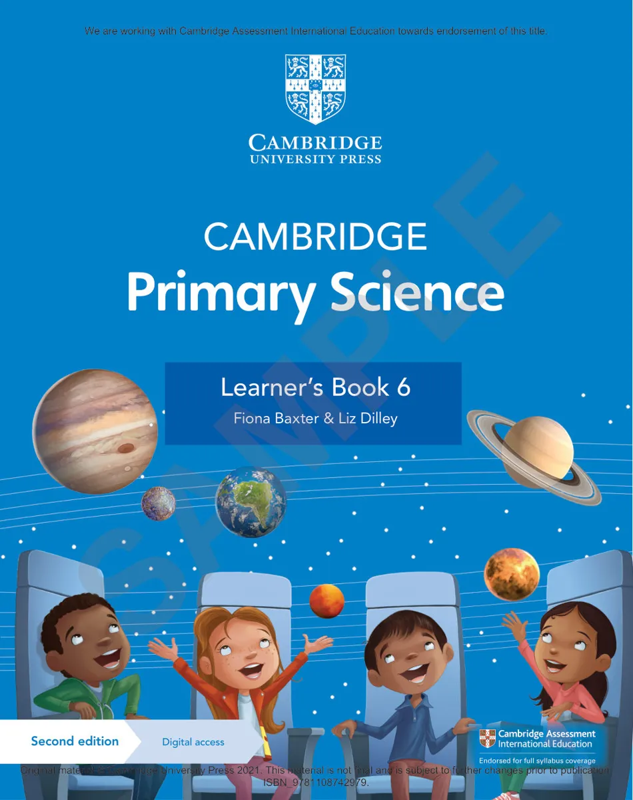
We are working with Cambridge Assessment International Education towards endorsement of this title.
CAMBRIDGE
Primary Science
Learner’s Book 6
Fiona Baxter & Liz Dilley
Second edition
Digital access
Second edition
Original material © Cambridge University Press 2021. This material is not final and is subject to further changes prior to publication.
ISBN_9781108742979.
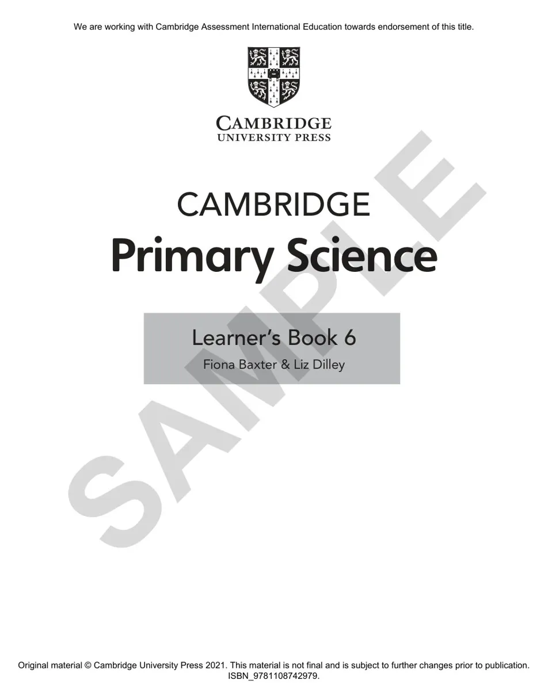
We are working with Cambridge Assessment International Education towards endorsement of this title.
CAMBRIDGE
Primary Science
Learner’s Book 6
Fiona Baxter & Liz Dilley
Original material © Cambridge University Press 2021. This material is not final and is subject to further changes prior to publication.
ISBN_9781108742979.
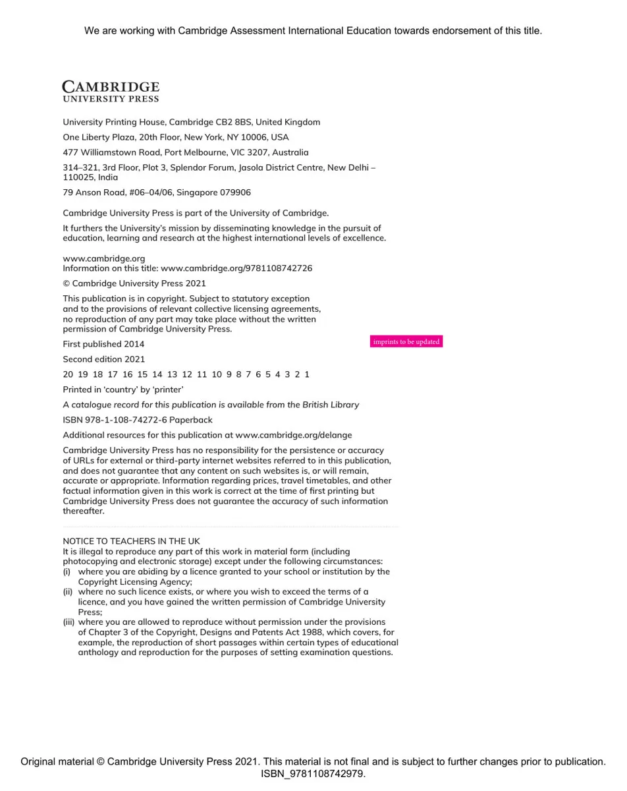
We are working with Cambridge Assessment International Education towards endorsement of this title.
University Printing House, Cambridge CB2 8BS, United Kingdom
One Liberty Plaza, 20th Floor, New York, NY 10006, USA
477 Williamstown Road, Port Melbourne, VIC 3207, Australia
314–321, 3rd Floor, Plot 3, Splendor Forum, Jasola District Centre, New Delhi –
110025, India
79 Anson Road, #06–04/06, Singapore 079906
Cambridge University Press is part of the University of Cambridge.
It furthers the University’s mission by disseminating knowledge in the pursuit of
education, learning and research at the highest international levels of excellence.
www.cambridge.org
Information on this title: www.cambridge.org/9781108742726
© Cambridge University Press 2021
This publication is in copyright. Subject to statutory exception
and to the provisions of relevant collective licensing agreements,
no reproduction of any part may take place without the written
permission of Cambridge University Press.
First published 2014
Second edition 2021
20 19 18 17 16 15 14 13 12 11 10 9 8 7 6 5 4 3 2 1
Printed in ‘country’ by ‘printer’
A catalogue record for this publication is available from the British Library
ISBN 978-1-108-74272-6 Paperback
Additional resources for this publication at www.cambridge.org/delange
Cambridge University Press has no responsibility for the persistence or accuracy
of URLs for external or third-party internet websites referred to in this publication,
and does not guarantee that any content on such websites is, or will remain,
accurate or appropriate. Information regarding prices, travel timetables, and other
factual information given in this work is correct at the time of first printing but
Cambridge University Press does not guarantee the accuracy of such information
thereafter.
NOTICE TO TEACHERS IN THE UK
It is illegal to reproduce any part of this work in material form (including
photocopying and electronic storage) except under the following circumstances:
(i) where you are abiding by a licence granted to your school or institution by the
Copyright Licensing Agency;
(ii) where no such licence exists, or where you wish to exceed the terms of a
licence, and you have gained the written permission of Cambridge University
Press;
(iii) where you are allowed to reproduce without permission under the provisions
of Chapter 3 of the Copyright, Designs and Patents Act 1988, which covers, for
example, the reproduction of short passages within certain types of educational
anthology and reproduction for the purposes of setting examination questions.
imprints to be updated
Original material © Cambridge University Press 2021. This material is not final and is subject to further changes prior to publication.
ISBN_9781108742979.
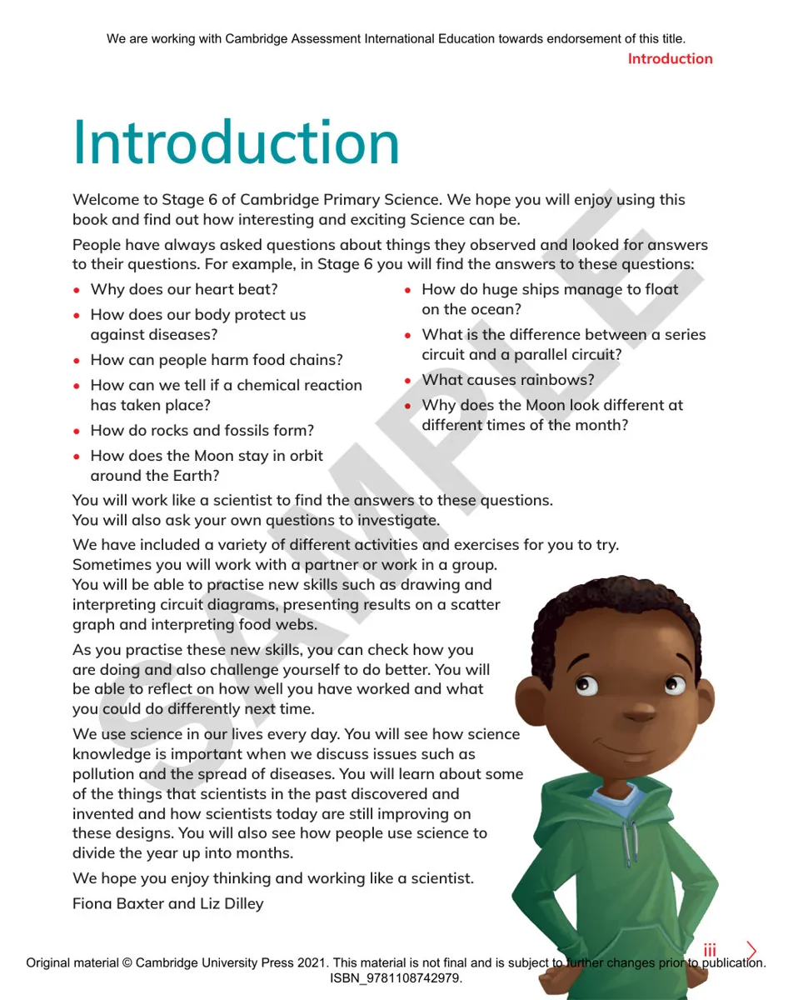
We are working with Cambridge Assessment International Education towards endorsement of this title.
Introduction
Introduction
Welcome to Stage 6 of Cambridge Primary Science. We hope you will enjoy using this
book and find out how interesting and exciting Science can be.
People have always asked questions about things they observed and looked for answers
to their questions. For example, in Stage 6 you will find the answers to these questions:
•Why does our heart beat?
•How do huge ships manage to float
on the ocean?
•How does our body protect us
against diseases?
•What is the difference between a series
circuit and a parallel circuit?
•How can people harm food chains?
•What causes rainbows?
•How can we tell if a chemical reaction
has taken place?
•Why does the Moon look different at
different times of the month?
•How do rocks and fossils form?
•How does the Moon stay in orbit
around the Earth?
You will work like a scientist to find the answers to these questions.
You will also ask your own questions to investigate.
We have included a variety of different activities and exercises for you to try.
Sometimes you will work with a partner or work in a group.
You will be able to practise new skills such as drawing and
interpreting circuit diagrams, presenting results on a scatter
graph and interpreting food webs.
As you practise these new skills, you can check how you
are doing and also challenge yourself to do better. You will
be able to reflect on how well you have worked and what
you could do differently next time.
We use science in our lives every day. You will see how science
knowledge is important when we discuss issues such as
pollution and the spread of diseases. You will learn about some
of the things that scientists in the past discovered and
invented and how scientists today are still improving on
these designs. You will also see how people use science to
divide the year up into months.
We hope you enjoy thinking and working like a scientist.
Fiona Baxter and Liz Dilley
iii
Original material © Cambridge University Press 2021. This material is not final and is subject to further changes prior to publication.
ISBN_9781108742979.
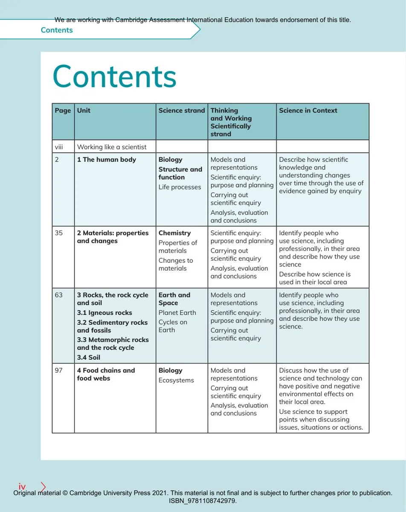
We are working with Cambridge Assessment International Education towards endorsement of this title.
Contents
Contents
Page
Unit
Science strand
Thinking
and Working
Scientifically
strand
Science in Context
viii
Working like a scientist
2
1 The human body
Biology
Structure and
function
Life processes
Models and
representations
Scientific enquiry:
purpose and planning
Carrying out
scientific enquiry
Analysis, evaluation
and conclusions
Describe how scientific
knowledge and
understanding changes
over time through the use of
evidence gained by enquiry
35
2 Materials: properties
and changes
Chemistry
Properties of
materials
Changes to
materials
Scientific enquiry:
purpose and planning
Carrying out
scientific enquiry
Analysis, evaluation
and conclusions
Identify people who
use science, including
professionally, in their area
and describe how they use
science
Describe how science is
used in their local area
Earth and
Space
Planet Earth
Cycles on
Earth
3 Rocks, the rock cycle
63
and soil
3.1 Igneous rocks
3.2 Sedimentary rocks
and fossils
3.3 Metamorphic rocks
and the rock cycle
3.4 Soil
Models and
representations
Identify people who
use science, including
professionally, in their area
and describe how they use
science.
Scientific enquiry:
purpose and planning
Carrying out
scientific enquiry
97
4 Food chains and
food webs
Biology
Ecosystems
Discuss how the use of
science and technology can
have positive and negative
environmental effects on
their local area.
Use science to support
points when discussing
issues, situations or actions.
Models and
representations
Carrying out
scientific enquiry
Analysis, evaluation
and conclusions
iv
Original material © Cambridge University Press 2021. This material is not final and is subject to further changes prior to publication.
ISBN_9781108742979.
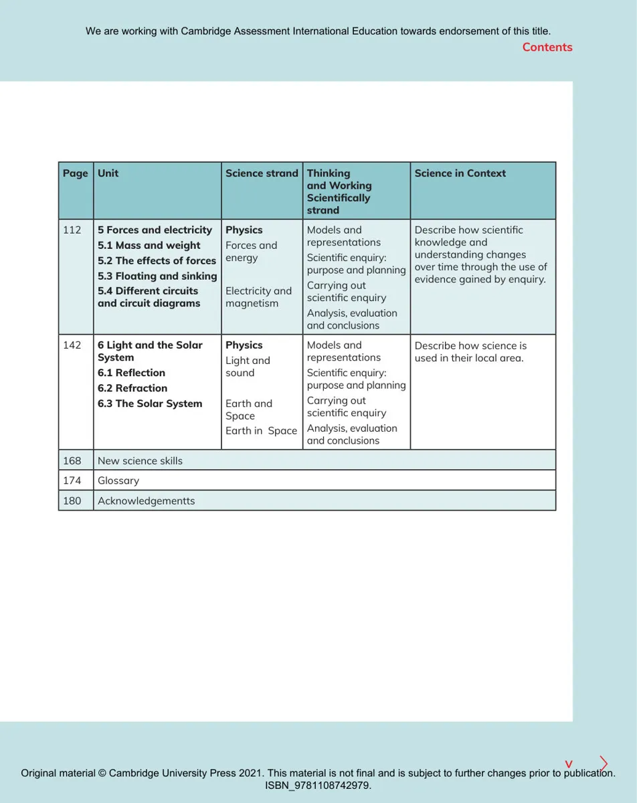
We are working with Cambridge Assessment International Education towards endorsement of this title.
Contents
Page
Unit
Science strand
Thinking
and Working
Scientifically
strand
Physics
Forces and
energy
112
5 Forces and electricity
5.1 Mass and weight
5.2 The effects of forces
5.3 Floating and sinking
5.4 Different circuits
and circuit diagrams
Models and
representations
Scientific enquiry:
purpose and planning
Carrying out
scientific enquiry
Analysis, evaluation
and conclusions
Electricity and
magnetism
Physics
Light and
sound
142
6 Light and the Solar
System
6.1 Reflection
6.2 Refraction
6.3 The Solar System
Models and
representations
Scientific enquiry:
purpose and planning
Carrying out
scientific enquiry
Analysis, evaluation
and conclusions
Earth and
Space
Earth in Space
168
New science skills
174
Glossary
180
Acknowledgementts
Science in Context
Describe how scientific
knowledge and
understanding changes
over time through the use of
evidence gained by enquiry.
Describe how science is
used in their local area.
v
Original material © Cambridge University Press 2021. This material is not final and is subject to further changes prior to publication.
ISBN_9781108742979.
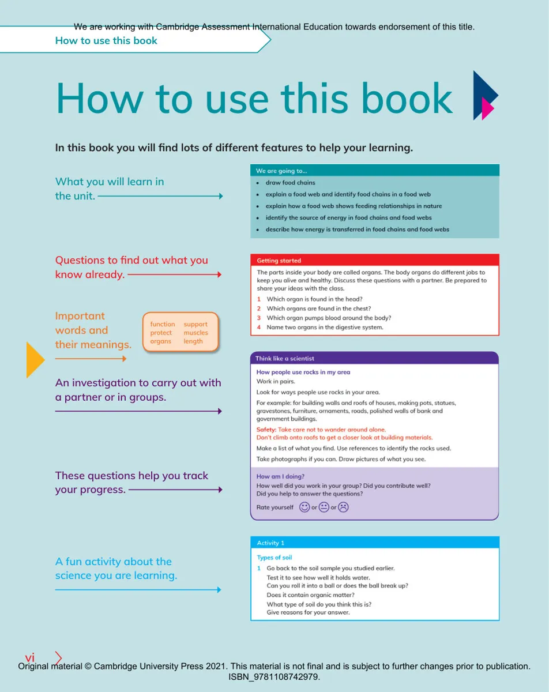
We are working with Cambridge Assessment International Education towards endorsement of this title.
How to use this book
How to use this book
In this book you will fi nd lots of different features to help your learning.
What you will learn in
the unit.
Questions to fi nd out what you
know already.
Important
words and
their meanings.
support
muscles
length
function
protect
organs
An investigation to carry out with
a partner or in groups.
These questions help you track
your progress.
A fun activity about the
science you are learning.
vi
Original material © Cambridge University Press 2021. This material is not final and is subject to further changes prior to publication.
ISBN_9781108742979.
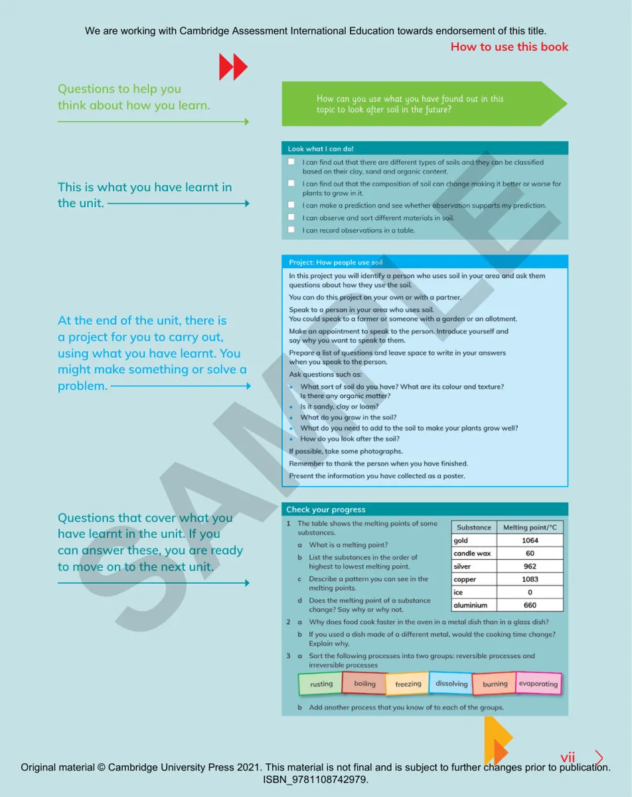
We are working with Cambridge Assessment International Education towards endorsement of this title.
How to use this book
Questions to help you
think about how you learn.
This is what you have learnt in
the unit.
At the end of the unit, there is
a project for you to carry out,
using what you have learnt. You
might make something or solve a
problem.
Questions that cover what you
have learnt in the unit. If you
can answer these, you are ready
to move on to the next unit.
vii
Original material © Cambridge University Press 2021. This material is not final and is subject to further changes prior to publication.
ISBN_9781108742979.
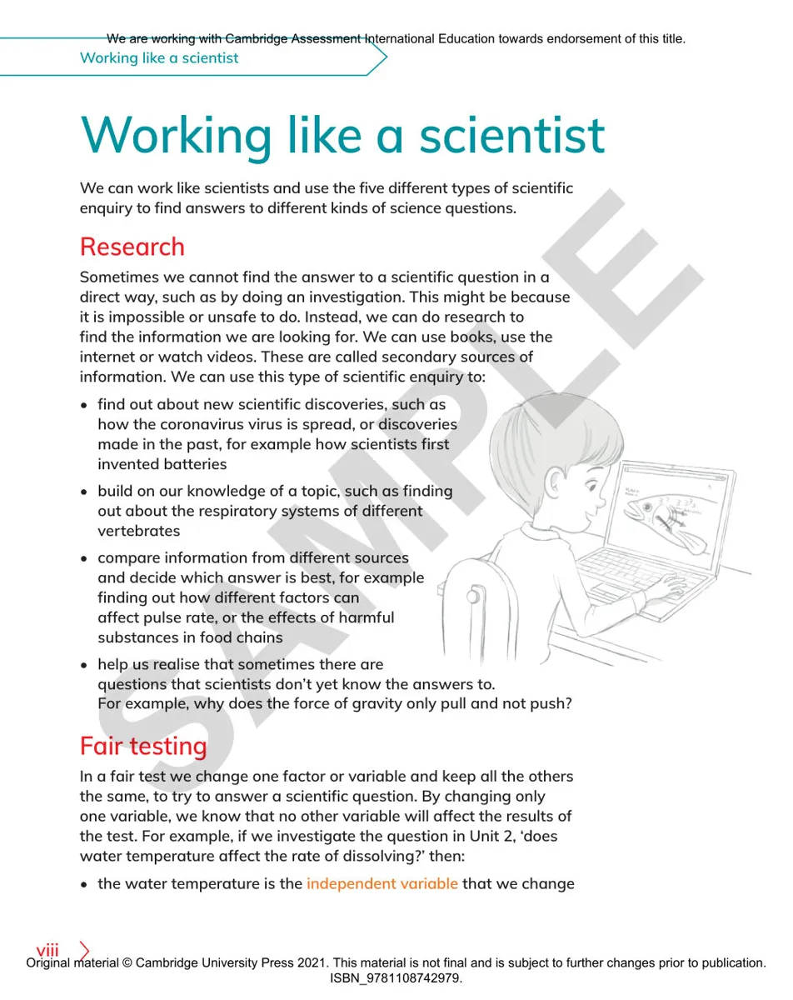
We are working with Cambridge Assessment International Education towards endorsement of this title.
Working like a scientist
Working like a scientist
We can work like scientists and use the five different types of scientific
enquiry to find answers to different kinds of science questions.
Research
Sometimes we cannot find the answer to a scientific question in a
direct way, such as by doing an investigation. This might be because
it is impossible or unsafe to do. Instead, we can do research to
find the information we are looking for. We can use books, use the
internet or watch videos. These are called secondary sources of
information. We can use this type of scientific enquiry to:
• find out about new scientific discoveries, such as
how the coronavirus virus is spread, or discoveries
made in the past, for example how scientists first
invented batteries
• build on our knowledge of a topic, such as finding
out about the respiratory systems of different
vertebrates
• compare information from different sources
and decide which answer is best, for example
finding out how different factors can
affect pulse rate, or the effects of harmful
substances in food chains
• help us realise that sometimes there are
questions that scientists don’t yet know the answers to.
For example, why does the force of gravity only pull and not push?
Fair testing
In a fair test we change one factor or variable and keep all the others
the same, to try to answer a scientific question. By changing only
one variable, we know that no other variable will affect the results of
the test. For example, if we investigate the question in Unit 2, ‘does
water temperature affect the rate of dissolving?’ then:
• the water temperature is the independent variable that we change
viii
Original material © Cambridge University Press 2021. This material is not final and is subject to further changes prior to publication.
ISBN_9781108742979.
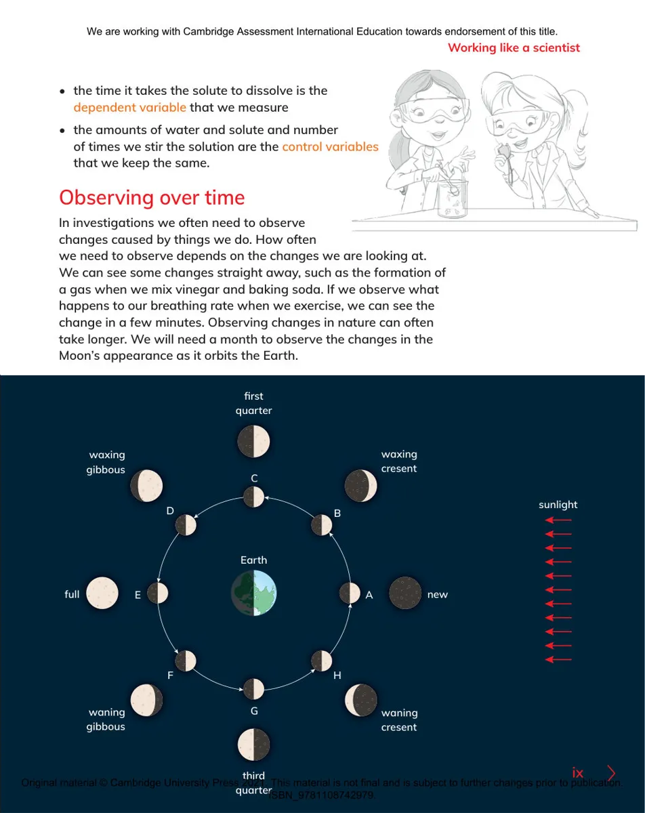
We are working with Cambridge Assessment International Education towards endorsement of this title.
Working like a scientist
• the time it takes the solute to dissolve is the
dependent variable that we measure
• the amounts of water and solute and number
of times we stir the solution are the control variables
that we keep the same.
Observing over time
In investigations we often need to observe
changes caused by things we do. How often
we need to observe depends on the changes we are looking at.
We can see some changes straight away, such as the formation of
a gas when we mix vinegar and baking soda. If we observe what
happens to our breathing rate when we exercise, we can see the
change in a few minutes. Observing changes in nature can often
take longer. We will need a month to observe the changes in the
Moon’s appearance as it orbits the Earth.
first
quarter
quarter
w
waxing
cresent
cr
waxing
gibbous
ng
us
C
C
sunlight
D
D
B
B
Earth
E
A
E
A
new
ne
full
ull
H
H
F
F
G
G
waning
gibbous
ng
us
w
waning
cresent
cr
ix
third
quarter
third
Original material © Cambridge University Press 2021. This material is not final and is subject to further changes prior to publication.
ISBN_9781108742979.
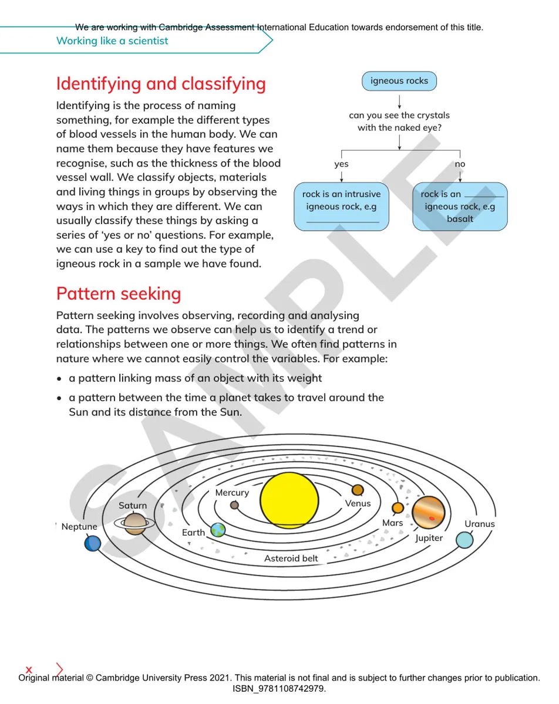
We are working with Cambridge Assessment International Education towards endorsement of this title.
Working like a scientist
Identifying and classifying
Identifying is the process of naming
something, for example the different types
of blood vessels in the human body. We can
name them because they have features we
recognise, such as the thickness of the blood
vessel wall. We classify objects, materials
and living things in groups by observing the
ways in which they are different. We can
usually classify these things by asking a
series of ‘yes or no’ questions. For example,
we can use a key to find out the type of
igneous rock in a sample we have found.
Pattern seeking
Pattern seeking involves observing, recording and analysing
data. The patterns we observe can help us to identify a trend or
relationships between one or more things. We often find patterns in
nature where we cannot easily control the variables. For example:
• a pattern linking mass of an object with its weight
• a pattern between the time a planet takes to travel around the
Sun and its distance from the Sun.
igneous rocks
can you see the crystals
with the naked eye?
yes
no
rock is an
rock is an intrusive
igneous rock, e.g
igneous rock, e.g
basalt
Mercury
Venus
Saturn
Mars
Neptune
Jupiter
Earth
Asteroid belt
Uranus
x
Original material © Cambridge University Press 2021. This material is not final and is subject to further changes prior to publication.
ISBN_9781108742979.
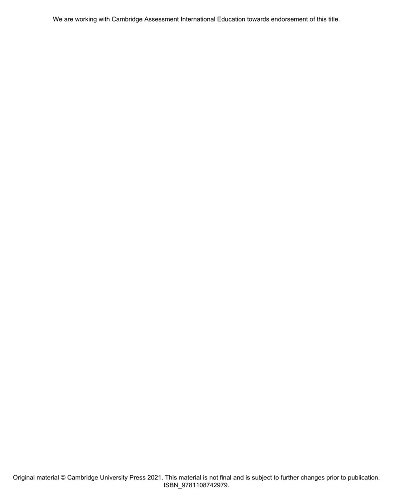
We are working with Cambridge Assessment International Education towards endorsement of this title.
Original material © Cambridge University Press 2021. This material is not final and is subject to further changes prior to publication.
ISBN_9781108742979.
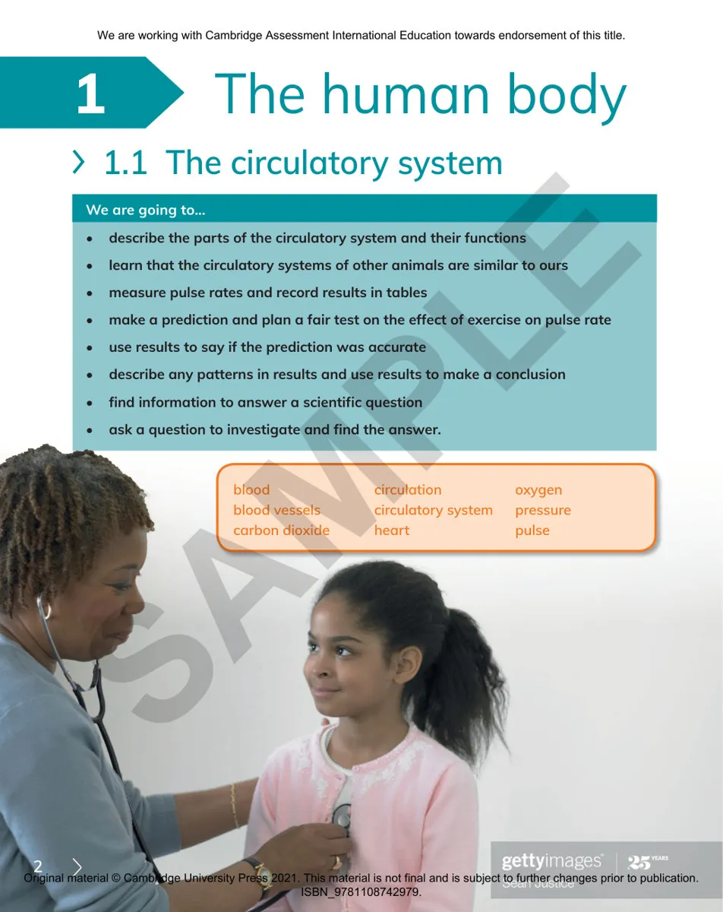
We are working with Cambridge Assessment International Education towards endorsement of this title.
1
The human body
1.1 The circulatory system
We are going to...
•
describe the parts of the circulatory system and their functions
•
learn that the circulatory systems of other animals are similar to ours
•
measure pulse rates and record results in tables
•
make a prediction and plan a fair test on the effect of exercise on pulse rate
•
use results to say if the prediction was accurate
•
describe any patterns in results and use results to make a conclusion
•
find information to answer a scientific question
•
ask a question to investigate and find the answer.
circulation
circulatory system
heart
blood
blood vessels
carbon dioxide
oxygen
pressure
pulse
2
Original material © Cambridge University Press 2021. This material is not final and is subject to further changes prior to publication.
ISBN_9781108742979.
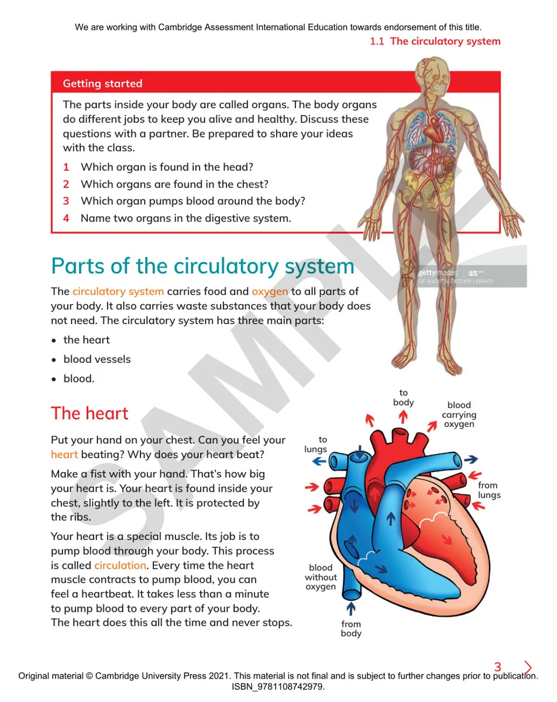
We are working with Cambridge Assessment International Education towards endorsement of this title.
1.1 The circulatory system
Getting started
The parts inside your body are called organs. The body organs
do different jobs to keep you alive and healthy. Discuss these
questions with a partner. Be prepared to share your ideas
with the class.
1 Which organ is found in the head?
2 Which organs are found in the chest?
3 Which organ pumps blood around the body?
4 Name two organs in the digestive system.
Parts of the circulatory system
The circulatory system carries food and oxygen to all parts of
your body. It also carries waste substances that your body does
not need. The circulatory system has three main parts:
• the heart
• blood vessels
• blood.
The heart
Put your hand on your chest. Can you feel your
heart beating? Why does your heart beat?
Make a fist with your hand. That’s how big
your heart is. Your heart is found inside your
chest, slightly to the left. It is protected by
the ribs.
Your heart is a special muscle. Its job is to
pump blood through your body. This process
is called circulation. Every time the heart
muscle contracts to pump blood, you can
feel a heartbeat. It takes less than a minute
to pump blood to every part of your body.
The heart does this all the time and never stops.
to
body
blood
carrying
oxygen
to
lungs
from
lungs
blood
without
oxygen
from
body
3
Original material © Cambridge University Press 2021. This material is not final and is subject to further changes prior to publication.
ISBN_9781108742979.
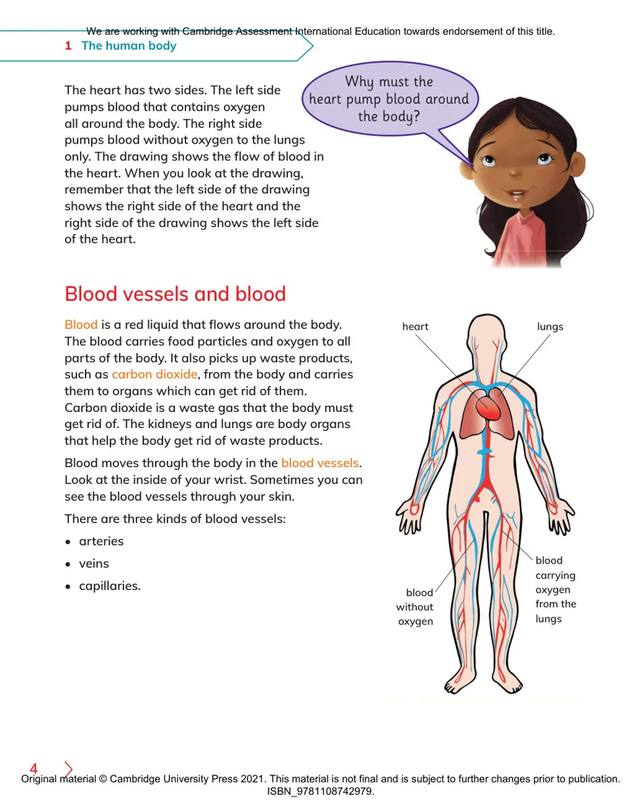
We are working with Cambridge Assessment International Education towards endorsement of this title.
1The human body
Why must the
heart pump blood around
The heart has two sides. The left side
pumps blood that contains oxygen
all around the body. The right side
pumps blood without oxygen to the lungs
only. The drawing shows the flow of blood in
the heart. When you look at the drawing,
remember that the left side of the drawing
shows the right side of the heart and the
right side of the drawing shows the left side
of the heart.
the body?
Blood vessels and blood
Blood is a red liquid that flows around the body.
The blood carries food particles and oxygen to all
parts of the body. It also picks up waste products,
such as carbon dioxide, from the body and carries
them to organs which can get rid of them.
Carbon dioxide is a waste gas that the body must
get rid of. The kidneys and lungs are body organs
that help the body get rid of waste products.
Blood moves through the body in the blood vessels.
Look at the inside of your wrist. Sometimes you can
see the blood vessels through your skin.
There are three kinds of blood vessels:
• arteries
• veins
• capillaries.
heart
lungs
blood
carrying
oxygen
from the
lungs
blood
without
oxygen
4
Original material © Cambridge University Press 2021. This material is not final and is subject to further changes prior to publication.
ISBN_9781108742979.
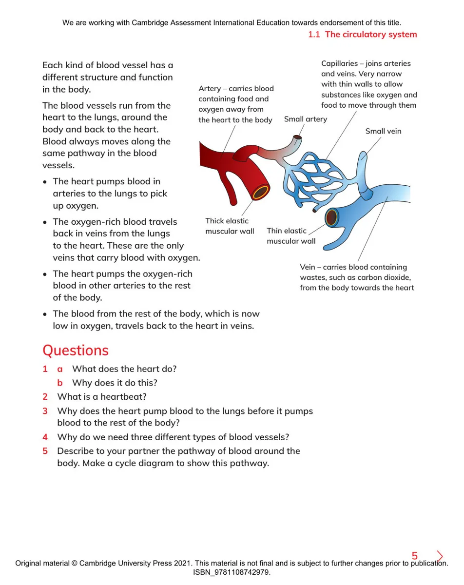
We are working with Cambridge Assessment International Education towards endorsement of this title.
1.1 The circulatory system
Capillaries – joins arteries
and veins. Very narrow
with thin walls to allow
substances like oxygen and
food to move through them
Each kind of blood vessel has a
different structure and function
in the body.
The blood vessels run from the
heart to the lungs, around the
body and back to the heart.
Blood always moves along the
same pathway in the blood
vessels.
Small vein
• The heart pumps blood in
arteries to the lungs to pick
up oxygen.
• The oxygen-rich blood travels
back in veins from the lungs
to the heart. These are the only
veins that carry blood with oxygen.
• The heart pumps the oxygen-rich
blood in other arteries to the rest
of the body.
• The blood from the rest of the body, which is now
low in oxygen, travels back to the heart in veins.
Questions
1 a What does the heart do?
b Why does it do this?
2 What is a heartbeat?
3 Why does the heart pump blood to the lungs before it pumps
blood to the rest of the body?
4 Why do we need three different types of blood vessels?
5 Describe to your partner the pathway of blood around the
body. Make a cycle diagram to show this pathway.
Artery – carries blood
containing food and
oxygen away from
the heart to the body
Small artery
Thick elastic
muscular wall
Thin elastic
muscular wall
Vein – carries blood containing
wastes, such as carbon dioxide,
from the body towards the heart
5
Original material © Cambridge University Press 2021. This material is not final and is subject to further changes prior to publication.
ISBN_9781108742979.
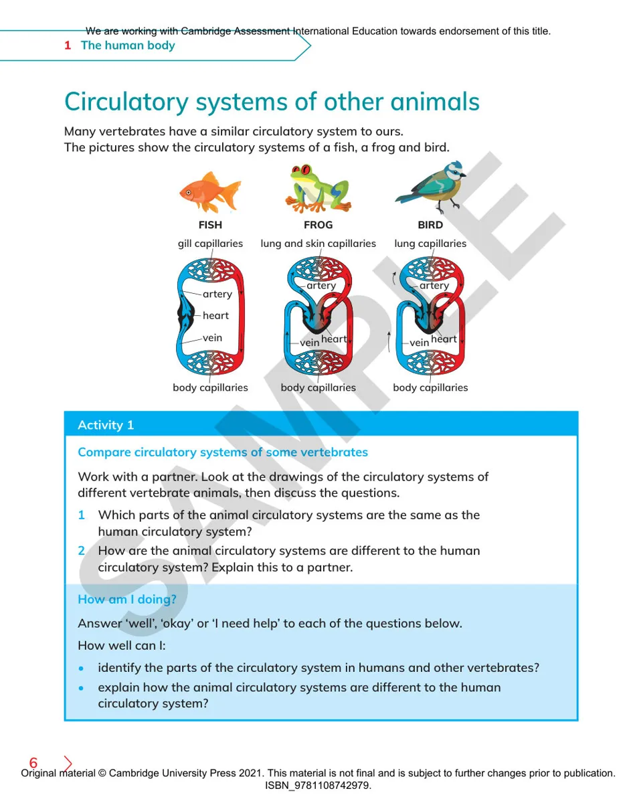
We are working with Cambridge Assessment International Education towards endorsement of this title.
1The human body
Circulatory systems of other animals
Many vertebrates have a similar circulatory system to ours.
The pictures show the circulatory systems of a fish, a frog and bird.
FISH
gill capillaries
FROG
lung and skin capillaries
artery
BIRD
lung capillaries
artery
artery
heart
vein
heart
vein
body capillaries
heart
vein
body capillaries
body capillaries
Activity 1
Compare circulatory systems of some vertebrates
Work with a partner. Look at the drawings of the circulatory systems of
different vertebrate animals, then discuss the questions.
1 Which parts of the animal circulatory systems are the same as the
human circulatory system?
2 How are the animal circulatory systems are different to the human
circulatory system? Explain this to a partner.
How am I doing?
Answer ‘well’, ‘okay’ or ‘I need help’ to each of the questions below.
How well can I:
•
identify the parts of the circulatory system in humans and other vertebrates?
•
explain how the animal circulatory systems are different to the human
circulatory system?
6
Original material © Cambridge University Press 2021. This material is not final and is subject to further changes prior to publication.
ISBN_9781108742979.
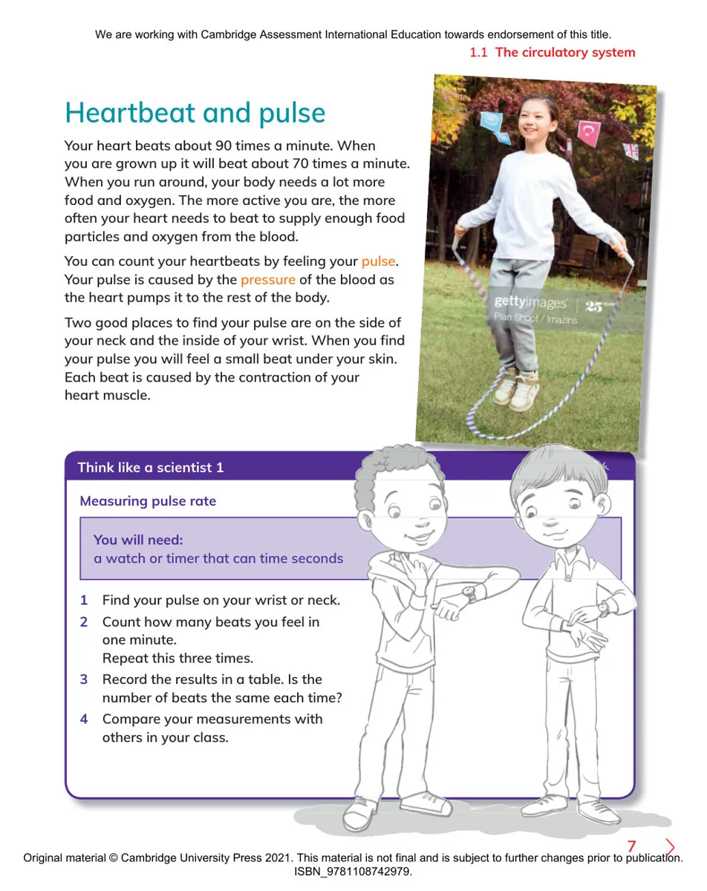
We are working with Cambridge Assessment International Education towards endorsement of this title.
1.1 The circulatory system
Heartbeat and pulse
Your heart beats about 90 times a minute. When
you are grown up it will beat about 70 times a minute.
When you run around, your body needs a lot more
food and oxygen. The more active you are, the more
often your heart needs to beat to supply enough food
particles and oxygen from the blood.
You can count your heartbeats by feeling your pulse.
Your pulse is caused by the pressure of the blood as
the heart pumps it to the rest of the body.
Two good places to find your pulse are on the side of
your neck and the inside of your wrist. When you find
your pulse you will feel a small beat under your skin.
Each beat is caused by the contraction of your
heart muscle.
Think like a scientist 1
Measuring pulse rate
You will need:
a watch or timer that can time seconds
1 Find your pulse on your wrist or neck.
2 Count how many beats you feel in
one minute.
Repeat this three times.
3 Record the results in a table. Is the
number of beats the same each time?
4 Compare your measurements with
others in your class.
7
Original material © Cambridge University Press 2021. This material is not final and is subject to further changes prior to publication.
ISBN_9781108742979.
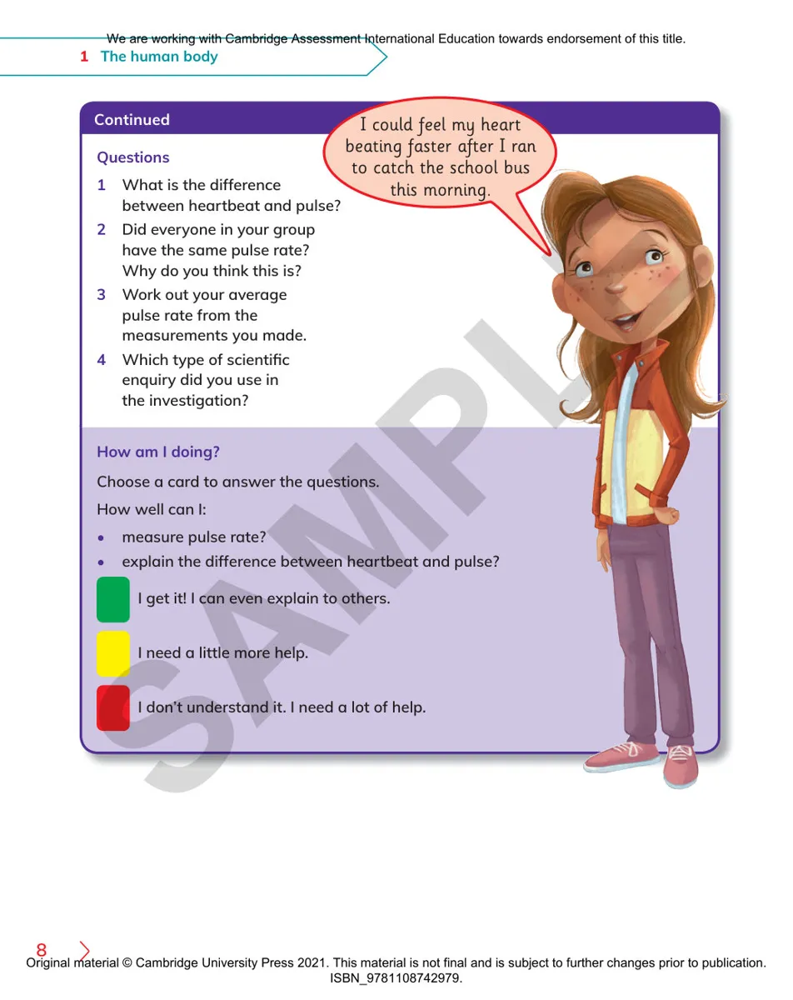
We are working with Cambridge Assessment International Education towards endorsement of this title.
1The human body
Continued
Questions
1 What is the difference
between heartbeat and pulse?
2 Did everyone in your group
have the same pulse rate?
Why do you think this is?
3 Work out your average
pulse rate from the
measurements you made.
4 Which type of scientifi c
enquiry did you use in
the investigation?
How am I doing?
Choose a card to answer the questions.
How well can I:
•
measure pulse rate?
•
explain the difference between heartbeat and pulse?
I get it! I can even explain to others.
I need a little more help.
I don’t understand it. I need a lot of help.
I could feel my heart
beating faster after I ran
to catch the school bus
this morning.
8
Original material © Cambridge University Press 2021. This material is not final and is subject to further changes prior to publication.
ISBN_9781108742979.
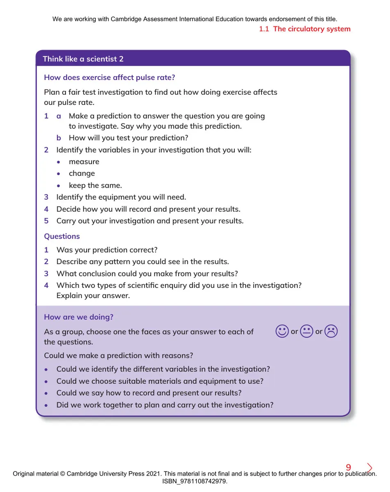
We are working with Cambridge Assessment International Education towards endorsement of this title.
1.1 The circulatory system
Think like a scientist 2
How does exercise affect pulse rate?
Plan a fair test investigation to find out how doing exercise affects
our pulse rate.
1 a Make a prediction to answer the question you are going
to investigate. Say why you made this prediction.
b How will you test your prediction?
2 Identify the variables in your investigation that you will:
•
measure
•
change
•
keep the same.
3 Identify the equipment you will need.
4 Decide how you will record and present your results.
5 Carry out your investigation and present your results.
Questions
1 Was your prediction correct?
2 Describe any pattern you could see in the results.
3 What conclusion could you make from your results?
4 Which two types of scientifi c enquiry did you use in the investigation?
Explain your answer.
How are we doing?
As a group, choose one the faces as your answer to each of
the questions.
Could we make a prediction with reasons?
•
Could we identify the different variables in the investigation?
•
Could we choose suitable materials and equipment to use?
•
Could we say how to record and present our results?
•
Did we work together to plan and carry out the investigation?
or
or
9
Original material © Cambridge University Press 2021. This material is not final and is subject to further changes prior to publication.
ISBN_9781108742979.
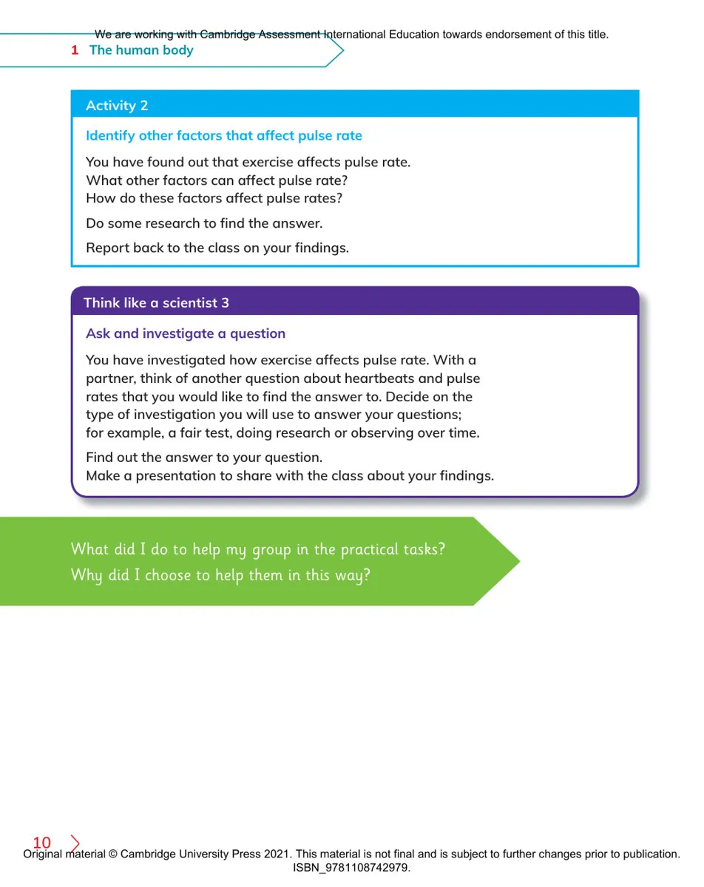
We are working with Cambridge Assessment International Education towards endorsement of this title.
1The human body
Activity 2
Identify other factors that affect pulse rate
You have found out that exercise affects pulse rate.
What other factors can affect pulse rate?
How do these factors affect pulse rates?
Do some research to find the answer.
Report back to the class on your findings.
Think like a scientist 3
Ask and investigate a question
You have investigated how exercise affects pulse rate. With a
partner, think of another question about heartbeats and pulse
rates that you would like to find the answer to. Decide on the
type of investigation you will use to answer your questions;
for example, a fair test, doing research or observing over time.
Find out the answer to your question.
Make a presentation to share with the class about your findings.
What did I do to help my group in the practical tasks?
Why did I choose to help them in this way?
10
Original material © Cambridge University Press 2021. This material is not final and is subject to further changes prior to publication.
ISBN_9781108742979.
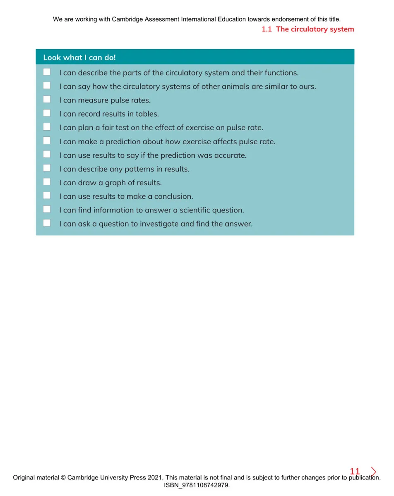
We are working with Cambridge Assessment International Education towards endorsement of this title.
1.1 The circulatory system
Look what I can do!
I can describe the parts of the circulatory system and their functions.
I can say how the circulatory systems of other animals are similar to ours.
I can measure pulse rates.
I can record results in tables.
I can plan a fair test on the effect of exercise on pulse rate.
I can make a prediction about how exercise affects pulse rate.
I can use results to say if the prediction was accurate.
I can describe any patterns in results.
I can draw a graph of results.
I can use results to make a conclusion.
I can find information to answer a scientific question.
I can ask a question to investigate and find the answer.
11
Original material © Cambridge University Press 2021. This material is not final and is subject to further changes prior to publication.
ISBN_9781108742979.
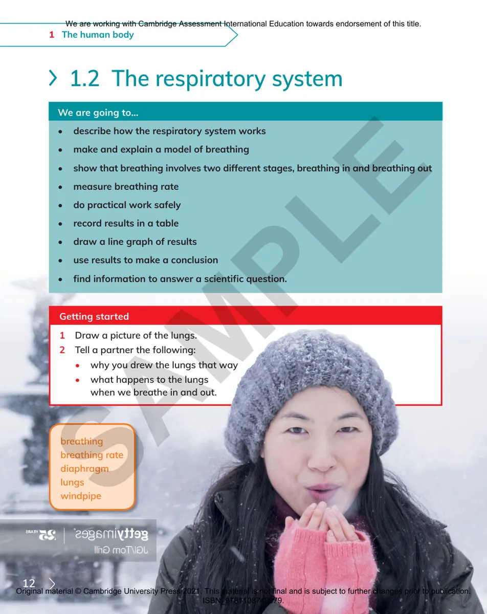
We are working with Cambridge Assessment International Education towards endorsement of this title.
1The human body
1.2 The respiratory system
We are going to...
•
describe how the respiratory system works
•
make and explain a model of breathing
•
show that breathing involves two different stages, breathing in and breathing out
•
measure breathing rate
•
do practical work safely
•
record results in a table
•
draw a line graph of results
•
use results to make a conclusion
•
find information to answer a scientific question.
Getting started
1 Draw a picture of the lungs.
2 Tell a partner the following:
•
why you drew the lungs that way
•
what happens to the lungs
when we breathe in and out.
breathing
breathing rate
diaphragm
lungs
windpipe
12
Original material © Cambridge University Press 2021. This material is not final and is subject to further changes prior to publication.
ISBN_9781108742979.
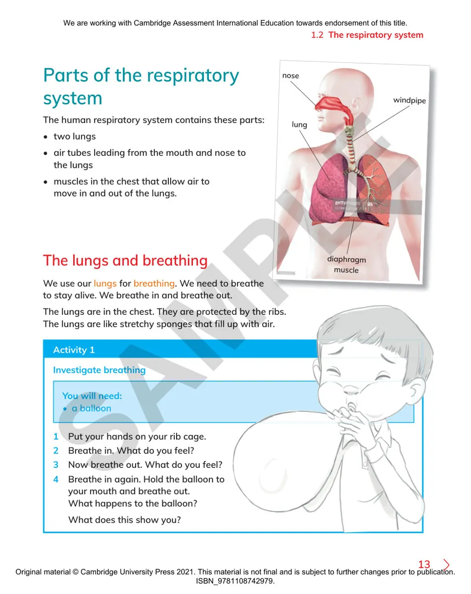
We are working with Cambridge Assessment International Education towards endorsement of this title.
1.2 The respiratory system
Parts of the respiratory
system
The human respiratory system contains these parts:
• two lungs
• air tubes leading from the mouth and nose to
the lungs
• muscles in the chest that allow air to
move in and out of the lungs.
nose
windpipe
lung
The lungs and breathing
We use our lungs for breathing. We need to breathe
to stay alive. We breathe in and breathe out.
The lungs are in the chest. They are protected by the ribs.
The lungs are like stretchy sponges that fill up with air.
Activity 1
Investigate breathing
You will need:
•a balloon
1 Put your hands on your rib cage.
2 Breathe in. What do you feel?
3 Now breathe out. What do you feel?
4 Breathe in again. Hold the balloon to
your mouth and breathe out.
What happens to the balloon?
What does this show you?
diaphragm
muscle
13
Original material © Cambridge University Press 2021. This material is not final and is subject to further changes prior to publication.
ISBN_9781108742979.
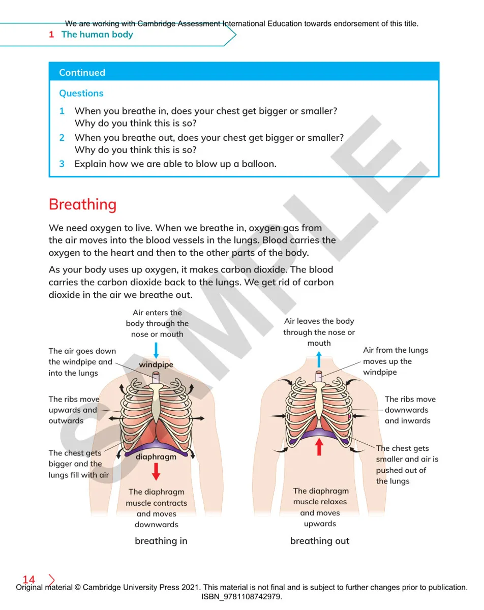
We are working with Cambridge Assessment International Education towards endorsement of this title.
1The human body
Continued
Questions
1 When you breathe in, does your chest get bigger or smaller?
Why do you think this is so?
2 When you breathe out, does your chest get bigger or smaller?
Why do you think this is so?
3 Explain how we are able to blow up a balloon.
Breathing
We need oxygen to live. When we breathe in, oxygen gas from
the air moves into the blood vessels in the lungs. Blood carries the
oxygen to the heart and then to the other parts of the body.
As your body uses up oxygen, it makes carbon dioxide. The blood
carries the carbon dioxide back to the lungs. We get rid of carbon
dioxide in the air we breathe out.
Air enters the
body through the
Air leaves the body
through the nose or
nose or mouth
mouth
windpipe
Air from the lungs
moves up the
windpipe
The ribs move
downwards
and inwards
The chest gets
smaller and air is
pushed out of
the lungs
The air goes down
the windpipe and
into the lungs
The ribs move
upwards and
outwards
The chest gets
bigger and the
lungs fill with air
diaphragm
The diaphragm
The diaphragm
muscle contracts
muscle relaxes
and moves
and moves
downwards
upwards
breathing in
breathing out
14
Original material © Cambridge University Press 2021. This material is not final and is subject to further changes prior to publication.
ISBN_9781108742979.
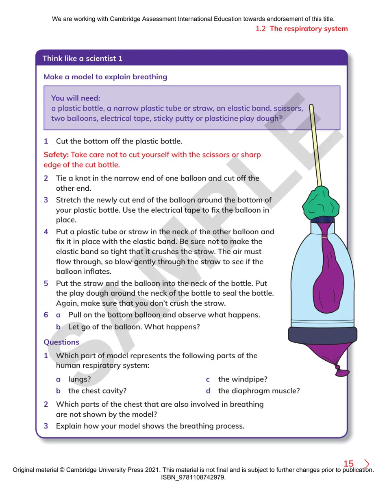
We are working with Cambridge Assessment International Education towards endorsement of this title.
1.2 The respiratory system
Think like a scientist 1
Make a model to explain breathing
You will need:
a plastic bottle, a narrow plastic tube or straw, an elastic band, scissors,
two balloons, electrical tape, sticky putty or plasticine play dough®
1 Cut the bottom off the plastic bottle.
Safety: Take care not to cut yourself with the scissors or sharp
edge of the cut bottle.
2 Tie a knot in the narrow end of one balloon and cut off the
other end.
3 Stretch the newly cut end of the balloon around the bottom of
your plastic bottle. Use the electrical tape to fi x the balloon in
place.
4 Put a plastic tube or straw in the neck of the other balloon and
fi x it in place with the elastic band. Be sure not to make the
elastic band so tight that it crushes the straw. The air must
fl ow through, so blow gently through the straw to see if the
balloon infl ates.
5 Put the straw and the balloon into the neck of the bottle. Put
the play dough around the neck of the bottle to seal the bottle.
Again, make sure that you don’t crush the straw.
6 a Pull on the bottom balloon and observe what happens.
b Let go of the balloon. What happens?
Questions
1 Which part of model represents the following parts of the
human respiratory system:
a lungs?
c
the windpipe?
b
the chest cavity?
d
the diaphragm muscle?
2 Which parts of the chest that are also involved in breathing
are not shown by the model?
3 Explain how your model shows the breathing process.
15
Original material © Cambridge University Press 2021. This material is not final and is subject to further changes prior to publication.
ISBN_9781108742979.
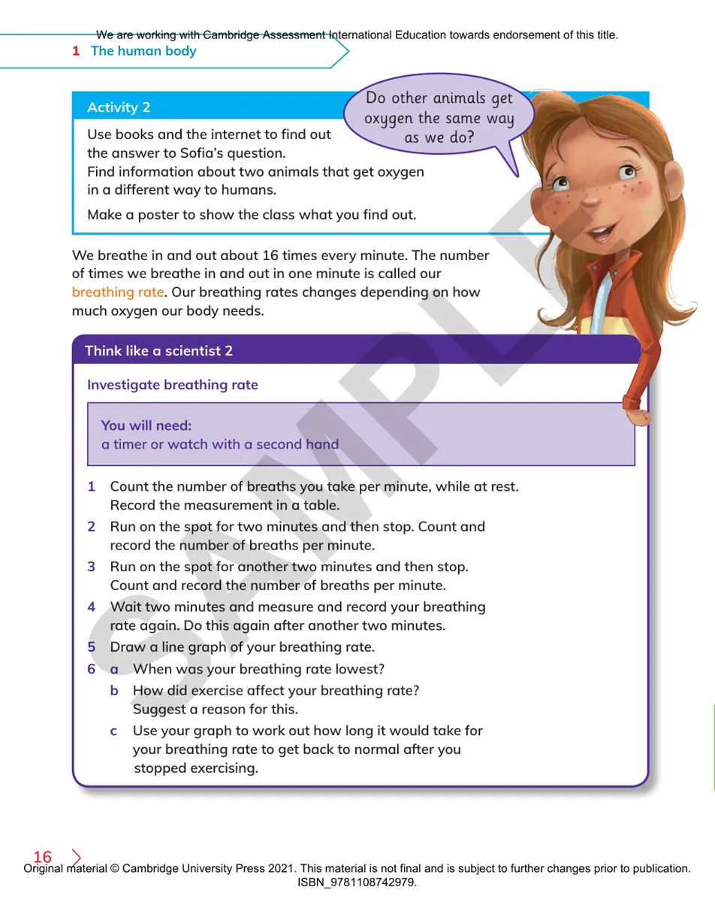
We are working with Cambridge Assessment International Education towards endorsement of this title.
1The human body
Do other animals get
oxygen the same way
Activity 2Find out how other animals get oxygen
Use books and the internet to find out
the answer to Sofia’s question.
Find information about two animals that get oxygen
in a different way to humans.
as we do?
Make a poster to show the class what you find out.
We breathe in and out about 16 times every minute. The number
of times we breathe in and out in one minute is called our
breathing rate. Our breathing rates changes depending on how
much oxygen our body needs.
Think like a scientist 2
Investigate breathing rate
You will need:
a timer or watch with a second hand
1 Count the number of breaths you take per minute, while at rest.
Record the measurement in a table.
2 Run on the spot for two minutes and then stop. Count and
record the number of breaths per minute.
3 Run on the spot for another two minutes and then stop.
Count and record the number of breaths per minute.
4 Wait two minutes and measure and record your breathing
rate again. Do this again after another two minutes.
5 Draw a line graph of your breathing rate.
6 a When was your breathing rate lowest?
b How did exercise affect your breathing rate?
Suggest a reason for this.
c
Use your graph to work out how long it would take for
your breathing rate to get back to normal after you
stopped exercising.
16
Original material © Cambridge University Press 2021. This material is not final and is subject to further changes prior to publication.
ISBN_9781108742979.
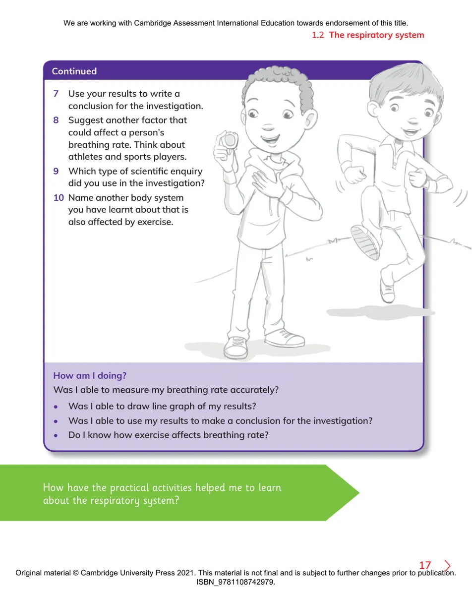
We are working with Cambridge Assessment International Education towards endorsement of this title.
1.2 The respiratory system
Continued
7 Use your results to write a
conclusion for the investigation.
8 Suggest another factor that
could affect a person’s
breathing rate. Think about
athletes and sports players.
9 Which type of scientifi c enquiry
did you use in the investigation?
10 Name another body system
you have learnt about that is
also affected by exercise.
How am I doing?
Was I able to measure my breathing rate accurately?
•
Was I able to draw line graph of my results?
•
Was I able to use my results to make a conclusion for the investigation?
•
Do I know how exercise affects breathing rate?
How have the practical activities helped me to learn
about the respiratory system?
17
Original material © Cambridge University Press 2021. This material is not final and is subject to further changes prior to publication.
ISBN_9781108742979.
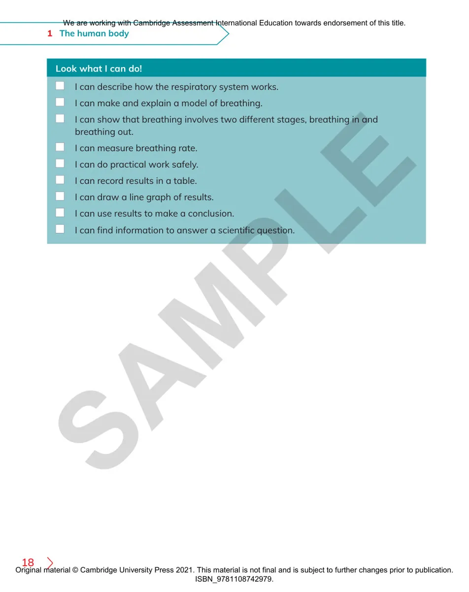
We are working with Cambridge Assessment International Education towards endorsement of this title.
1The human body
Look what I can do!
I can describe how the respiratory system works.
I can make and explain a model of breathing.
I can show that breathing involves two different stages, breathing in and
breathing out.
I can measure breathing rate.
I can do practical work safely.
I can record results in a table.
I can draw a line graph of results.
I can use results to make a conclusion.
I can find information to answer a scientific question.
18
Original material © Cambridge University Press 2021. This material is not final and is subject to further changes prior to publication.
ISBN_9781108742979.
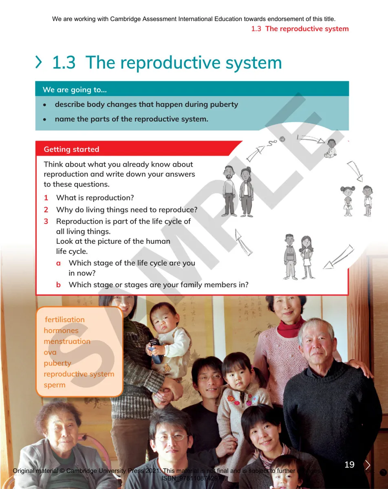
We are working with Cambridge Assessment International Education towards endorsement of this title.
1.3 The reproductive system
1.3 The reproductive system
We are going to...
•
describe body changes that happen during puberty
•
name the parts of the reproductive system.
Getting started
Think about what you already know about
reproduction and write down your answers
to these questions.
1 What is reproduction?
2
Why do living things need to reproduce?
3
Reproduction is part of the life cycle of
all living things.
Look at the picture of the human
life cycle.
a Which stage of the life cycle are you
in now?
b
Which stage or stages are your family members in?
fertilisation
hormones
menstruation
ova
puberty
reproductive system
sperm
19
Original material © Cambridge University Press 2021. This material is not final and is subject to further changes prior to publication.
ISBN_9781108742979.
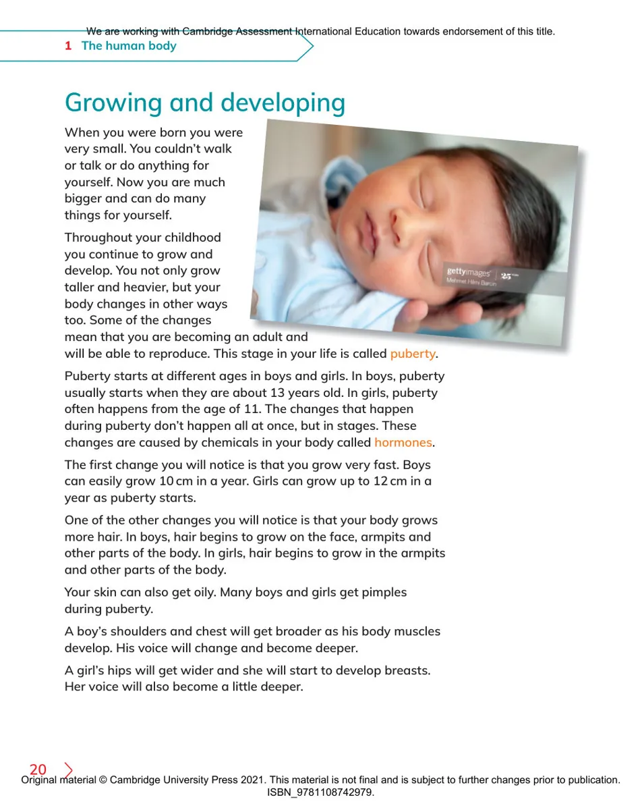
We are working with Cambridge Assessment International Education towards endorsement of this title.
1The human body
Growing and developing
When you were born you were
very small. You couldn’t walk
or talk or do anything for
yourself. Now you are much
bigger and can do many
things for yourself.
Throughout your childhood
you continue to grow and
develop. You not only grow
taller and heavier, but your
body changes in other ways
too. Some of the changes
mean that you are becoming an adult and
will be able to reproduce. This stage in your life is called puberty.
adult and
tage in your life is called
puberty
.
Puberty starts at different ages in boys and girls. In boys, puberty
usually starts when they are about 13 years old. In girls, puberty
often happens from the age of 11. The changes that happen
during puberty don’t happen all at once, but in stages. These
changes are caused by chemicals in your body called hormones.
The first change you will notice is that you grow very fast. Boys
can easily grow 10 cm in a year. Girls can grow up to 12 cm in a
year as puberty starts.
One of the other changes you will notice is that your body grows
more hair. In boys, hair begins to grow on the face, armpits and
other parts of the body. In girls, hair begins to grow in the armpits
and other parts of the body.
Your skin can also get oily. Many boys and girls get pimples
during puberty.
A boy’s shoulders and chest will get broader as his body muscles
develop. His voice will change and become deeper.
A girl’s hips will get wider and she will start to develop breasts.
Her voice will also become a little deeper.
20
Original material © Cambridge University Press 2021. This material is not final and is subject to further changes prior to publication.
ISBN_9781108742979.
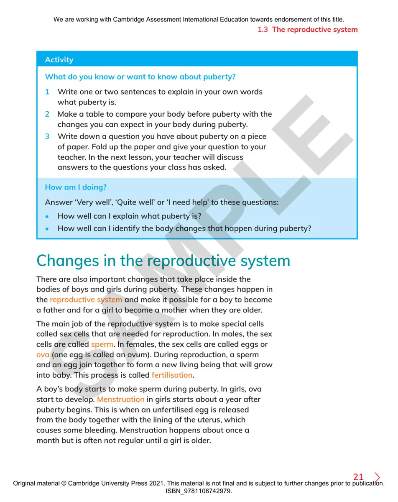
We are working with Cambridge Assessment International Education towards endorsement of this title.
1.3 The reproductive system
Activity
What do you know or want to know about puberty?
1 Write one or two sentences to explain in your own words
what puberty is.
2 Make a table to compare your body before puberty with the
changes you can expect in your body during puberty.
3 Write down a question you have about puberty on a piece
of paper. Fold up the paper and give your question to your
teacher. In the next lesson, your teacher will discuss
answers to the questions your class has asked.
How am I doing?
Answer ‘Very well’, ‘Quite well’ or ‘I need help’ to these questions:
•
How well can I explain what puberty is?
•
How well can I identify the body changes that happen during puberty?
Changes in the reproductive system
There are also important changes that take place inside the
bodies of boys and girls during puberty. These changes happen in
the reproductive system and make it possible for a boy to become
a father and for a girl to become a mother when they are older.
The main job of the reproductive system is to make special cells
called sex cells that are needed for reproduction. In males, the sex
cells are called sperm. In females, the sex cells are called eggs or
ova (one egg is called an ovum). During reproduction, a sperm
and an egg join together to form a new living being that will grow
into baby. This process is called fertilisation.
A boy’s body starts to make sperm during puberty. In girls, ova
start to develop. Menstruation in girlsstarts about a year after
puberty begins. This is when an unfertilised egg is released
from the body together with the lining of the uterus, which
causes some bleeding. Menstruation happens about once a
month but is often not regular until a girl is older.
21
Original material © Cambridge University Press 2021. This material is not final and is subject to further changes prior to publication.
ISBN_9781108742979.
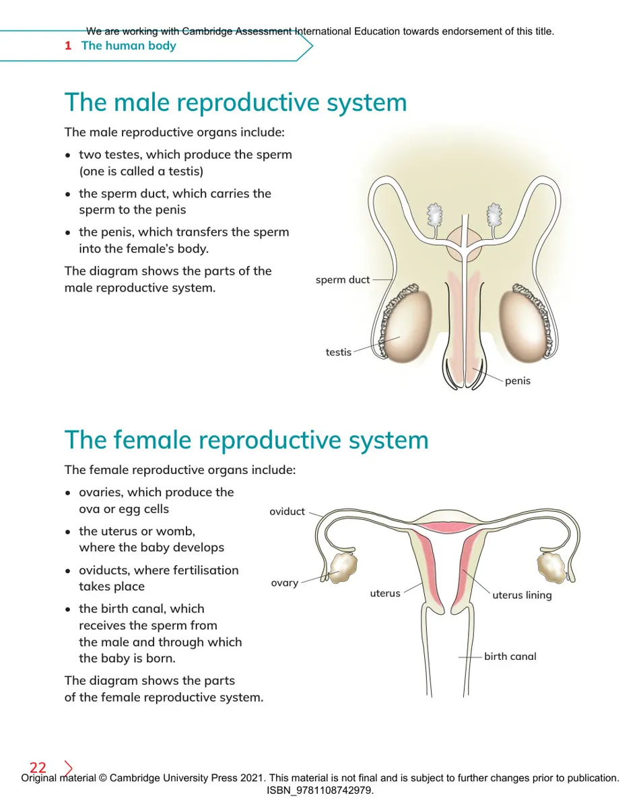
We are working with Cambridge Assessment International Education towards endorsement of this title.
1The human body
The male reproductive system
The male reproductive organs include:
• two testes, which produce the sperm
(one is called a testis)
• the sperm duct, which carries the
sperm to the penis
• the penis, which transfers the sperm
into the female’s body.
The diagram shows the parts of the
male reproductive system.
sperm duct
testis
penis
The female reproductive system
The female reproductive organs include:
• ovaries, which produce the
ova or egg cells
oviduct
• the uterus or womb,
where the baby develops
• oviducts, where fertilisation
takes place
• the birth canal, which
receives the sperm from
the male and through which
the baby is born.
The diagram shows the parts
of the female reproductive system.
ovary
uterus
uterus lining
birth canal
22
Original material © Cambridge University Press 2021. This material is not final and is subject to further changes prior to publication.
ISBN_9781108742979.
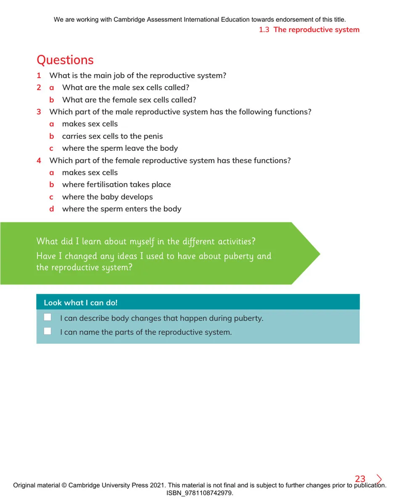
We are working with Cambridge Assessment International Education towards endorsement of this title.
1.3 The reproductive system
Questions
1 What is the main job of the reproductive system?
2 a What are the male sex cells called?
b What are the female sex cells called?
3 Which part of the male reproductive system has the following functions?
a makes sex cells
b carries sex cells to the penis
c
where the sperm leave the body
4 Which part of the female reproductive system has these functions?
a makes sex cells
b where fertilisation takes place
c
where the baby develops
d where the sperm enters the body
What did I learn about myself in the different activities?
Have I changed any ideas I used to have about puberty and
the reproductive system?
Look what I can do!
I can describe body changes that happen during puberty.
I can name the parts of the reproductive system.
23
Original material © Cambridge University Press 2021. This material is not final and is subject to further changes prior to publication.
ISBN_9781108742979.
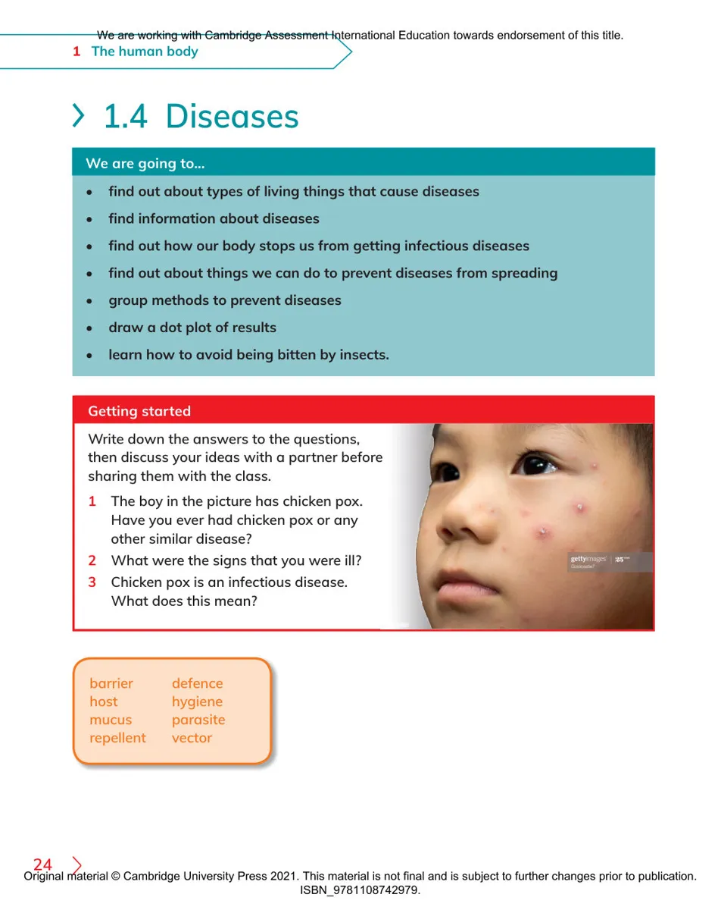
We are working with Cambridge Assessment International Education towards endorsement of this title.
1The human body
1.4 Diseases
We are going to...
•
find out about types of living things that cause diseases
•
find information about diseases
•
find out how our body stops us from getting infectious diseases
•
find out about things we can do to prevent diseases from spreading
•
group methods to prevent diseases
•
draw a dot plot of results
•
learn how to avoid being bitten by insects.
Getting started
Write down the answers to the questions,
then discuss your ideas with a partner before
sharing them with the class.
e
1 The boy in the picture has chicken pox.
Have you ever had chicken pox or any
other similar disease?
2 What were the signs that you were ill?
3 Chicken pox is an infectious disease.
What does this mean?
barrier
defence
host
hygiene
mucus
parasite
repellent
vector
24
Original material © Cambridge University Press 2021. This material is not final and is subject to further changes prior to publication.
ISBN_9781108742979.
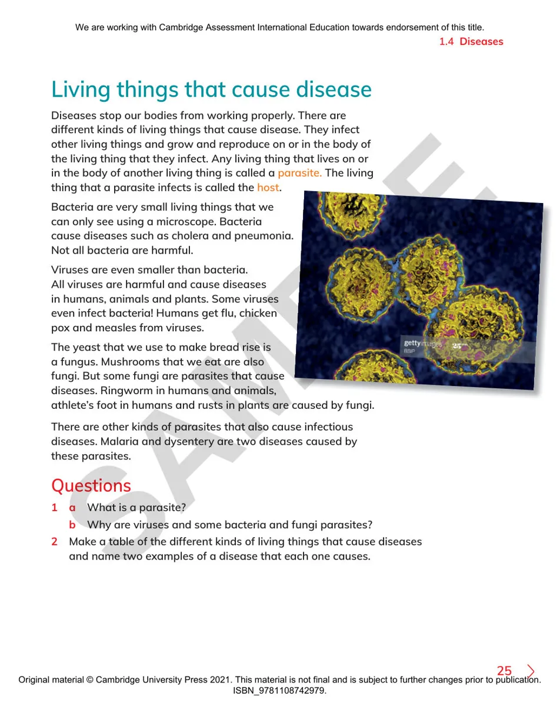
We are working with Cambridge Assessment International Education towards endorsement of this title.
1.4 Diseases
Living things that cause disease
Diseases stop our bodies from working properly. There are
different kinds of living things that cause disease. They infect
other living things and grow and reproduce on or in the body of
the living thing that they infect. Any living thing that lives on or
in the body of another living thing is called a parasite. The living
thing that a parasite infects is called the host.
Bacteria are very small living things that we
can only see using a microscope. Bacteria
cause diseases such as cholera and pneumonia.
Not all bacteria are harmful.
Viruses are even smaller than bacteria.
All viruses are harmful and cause diseases
in humans, animals and plants. Some viruses
even infect bacteria! Humans get flu, chicken
pox and measles from viruses.
The yeast that we use to make bread rise is
a fungus. Mushrooms that we eat are also
fungi. But some fungi are parasites that cause
diseases. Ringworm in humans and animals,
athlete’s foot in humans and rusts in plants are caused by fungi.
There are other kinds of parasites that also cause infectious
diseases. Malaria and dysentery are two diseases caused by
these parasites.
Questions
1 a What is a parasite?
b Why are viruses and some bacteria and fungi parasites?
2 Make a table of the different kinds of living things that cause diseases
and name two examples of a disease that each one causes.
25
Original material © Cambridge University Press 2021. This material is not final and is subject to further changes prior to publication.
ISBN_9781108742979.
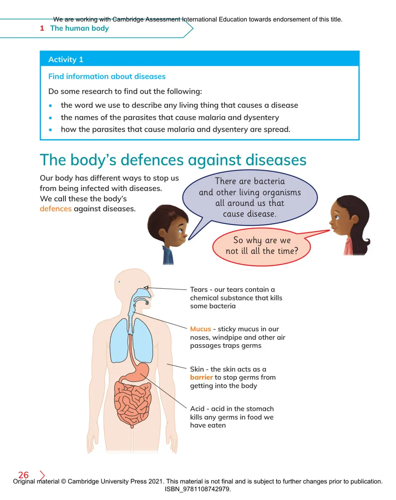
We are working with Cambridge Assessment International Education towards endorsement of this title.
1The human body
Activity 1
Find information about diseases
Do some research to find out the following:
•
the word we use to describe any living thing that causes a disease
•
the names of the parasites that cause malaria and dysentery
•
how the parasites that cause malaria and dysentery are spread.
The body’s defences against diseases
Our body has different ways to stop us
from being infected with diseases.
We call these the body’s
defences against diseases.
There are bacteria
and other living organisms
all around us that
cause disease.
So why are we
not ill all the time?
Tears - our tears contain a
chemical substance that kills
some bacteria
Mucus - sticky mucus in our
noses, windpipe and other air
passages traps germs
Skin - the skin acts as a
barrier to stop germs from
getting into the body
Acid - acid in the stomach
kills any germs in food we
have eaten
26
Original material © Cambridge University Press 2021. This material is not final and is subject to further changes prior to publication.
ISBN_9781108742979.
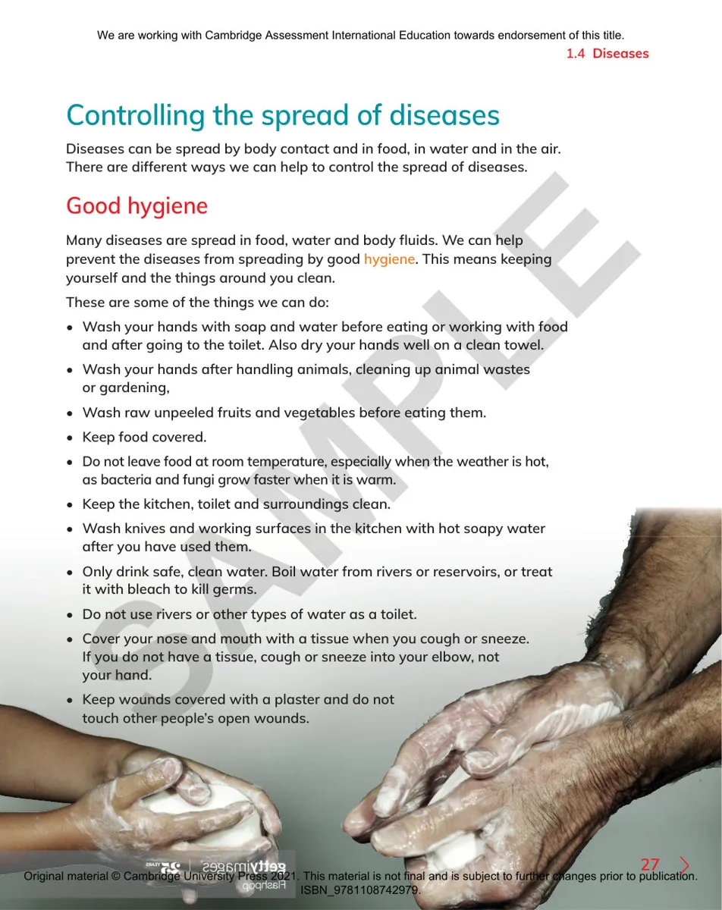
We are working with Cambridge Assessment International Education towards endorsement of this title.
1.4 Diseases
Controlling the spread of diseases
Diseases can be spread by body contact and in food, in water and in the air.
There are different ways we can help to control the spread of diseases.
Good hygiene
Many diseases are spread in food, water and body fluids. We can help
prevent the diseases from spreading by good hygiene. This means keeping
yourself and the things around you clean.
These are some of the things we can do:
• Wash your hands with soap and water before eating or working with food
and after going to the toilet. Also dry your hands well on a clean towel.
• Wash your hands after handling animals, cleaning up animal wastes
or gardening,
• Wash raw unpeeled fruits and vegetables before eating them.
• Keep food covered.
• Do not leave food at room temperature, especially when the weather is hot,
as bacteria and fungi grow faster when it is warm.
• Keep the kitchen, toilet and surroundings clean.
• Wash knives and working surfaces in the kitchen with hot soapy water
after you have used them.
• Only drink safe, clean water. Boil water from rivers or reservoirs, or treat
it with bleach to kill germs.
• Do not use rivers or other types of water as a toilet.
• Cover your nose and mouth with a tissue when you cough or sneeze.
If you do not have a tissue, cough or sneeze into your elbow, not
your hand.
• Keep wounds covered with a plaster and do not
touch other people’s open wounds.
27
Original material © Cambridge University Press 2021. This material is not final and is subject to further changes prior to publication.
ISBN_9781108742979.
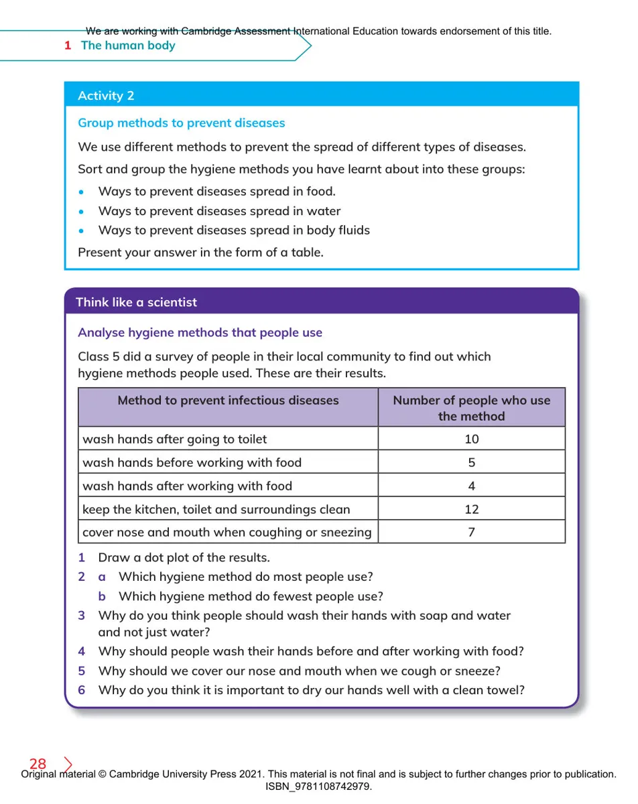
We are working with Cambridge Assessment International Education towards endorsement of this title.
1The human body
Activity 2
Group methods to prevent diseases
We use different methods to prevent the spread of different types of diseases.
Sort and group the hygiene methods you have learnt about into these groups:
•
Ways to prevent diseases spread in food.
•
Ways to prevent diseases spread in water
•
Ways to prevent diseases spread in body fl uids
Present your answer in the form of a table.
Think like a scientist
Analyse hygiene methods that people use
Class 5 did a survey of people in their local community to find out which
hygiene methods people used. These are their results.
Method to prevent infectious diseases
Number of people who use
the method
wash hands after going to toilet
10
wash hands before working with food
5
wash hands after working with food
4
keep the kitchen, toilet and surroundings clean
12
cover nose and mouth when coughing or sneezing
7
1 Draw a dot plot of the results.
2 a Which hygiene method do most people use?
b Which hygiene method do fewest people use?
3 Why do you think people should wash their hands with soap and water
and not just water?
4 Why should people wash their hands before and after working with food?
5 Why should we cover our nose and mouth when we cough or sneeze?
6 Why do you think it is important to dry our hands well with a clean towel?
28
Original material © Cambridge University Press 2021. This material is not final and is subject to further changes prior to publication.
ISBN_9781108742979.
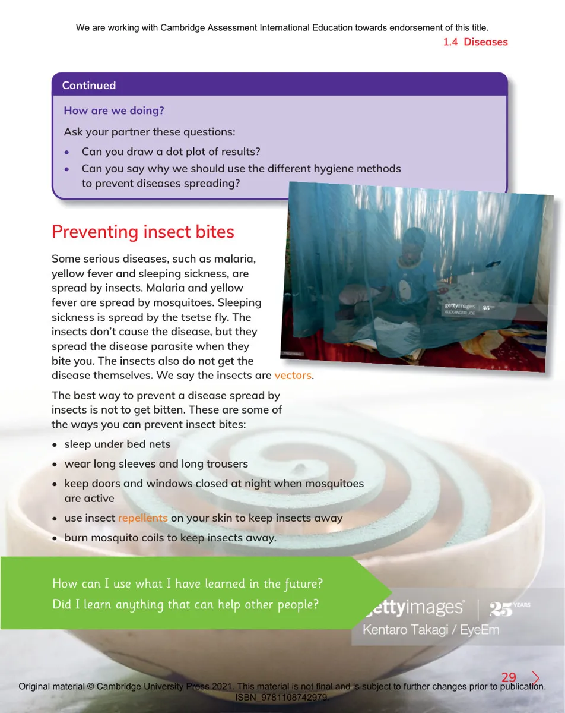
We are working with Cambridge Assessment International Education towards endorsement of this title.
1.4 Diseases
Continued
How are we doing?
Ask your partner these questions:
•
Can you draw a dot plot of results?
•
Can you say why we should use the different hygiene methods
to prevent diseases spreading?
Preventing insect bites
Some serious diseases, such as malaria,
yellow fever and sleeping sickness, are
spread by insects. Malaria and yellow
fever are spread by mosquitoes. Sleeping
sickness is spread by the tsetse fly. The
insects don’t cause the disease, but they
spread the disease parasite when they
bite you. The insects also do not get the
disease themselves. We say the insects are vectors.
ectors
.
The best way to prevent a disease spread by
insects is not to get bitten. These are some of
the ways you can prevent insect bites:
• sleep under bed nets
• wear long sleeves and long trousers
• keep doors and windows closed at night when mosquitoes
are active
• use insect repellents on your skin to keep insects away
• burn mosquito coils to keep insects away.
How can I use what I have learned in the future?
Did I learn anything that can help other people?
29
Original material © Cambridge University Press 2021. This material is not final and is subject to further changes prior to publication.
ISBN_9781108742979.
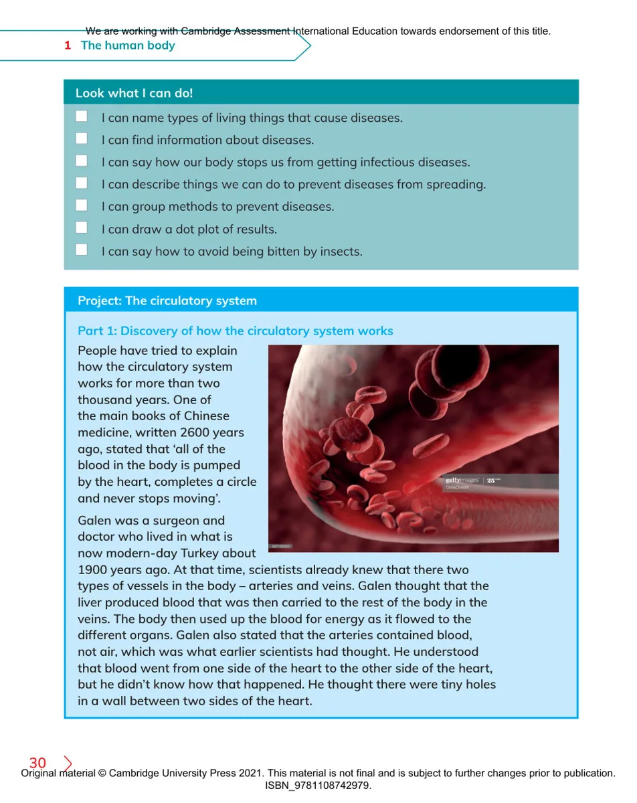
We are working with Cambridge Assessment International Education towards endorsement of this title.
1The human body
Look what I can do!
I can name types of living things that cause diseases.
I can find information about diseases.
I can say how our body stops us from getting infectious diseases.
I can describe things we can do to prevent diseases from spreading.
I can group methods to prevent diseases.
I can draw a dot plot of results.
I can say how to avoid being bitten by insects.
Project: The circulatory system
Part 1: Discovery of how the circulatory system works
People have tried to explain
how the circulatory system
works for more than two
thousand years. One of
the main books of Chinese
medicine, written 2600 years
ago, stated that ‘all of the
blood in the body is pumped
by the heart, completes a circle
and never stops moving’.
Galen was a surgeon and
doctor who lived in what is
now modern-day Turkey about
1900 years ago. At that time, scientists already knew that there two
types of vessels in the body – arteries and veins. Galen thought that the
liver produced blood that was then carried to the rest of the body in the
veins. The body then used up the blood for energy as it flowed to the
different organs. Galen also stated that the arteries contained blood,
not air, which was what earlier scientists had thought. He understood
that blood went from one side of the heart to the other side of the heart,
but he didn’t know how that happened. He thought there were tiny holes
in a wall between two sides of the heart.
30
Original material © Cambridge University Press 2021. This material is not final and is subject to further changes prior to publication.
ISBN_9781108742979.
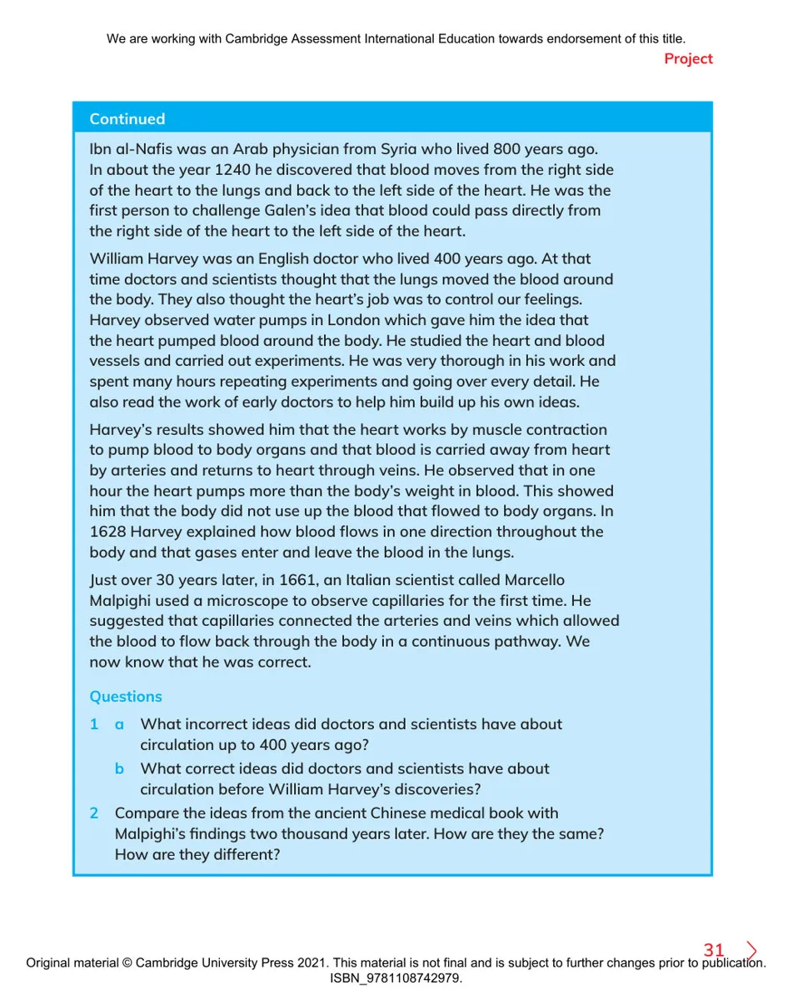
We are working with Cambridge Assessment International Education towards endorsement of this title.
Project
Continued
Ibn al-Nafis was an Arab physician from Syria who lived 800 years ago.
In about the year 1240 he discovered that blood moves from the right side
of the heart to the lungs and back to the left side of the heart. He was the
first person to challenge Galen’s idea that blood could pass directly from
the right side of the heart to the left side of the heart.
William Harvey was an English doctor who lived 400 years ago. At that
time doctors and scientists thought that the lungs moved the blood around
the body. They also thought the heart’s job was to control our feelings.
Harvey observed water pumps in London which gave him the idea that
the heart pumped blood around the body. He studied the heart and blood
vessels and carried out experiments. He was very thorough in his work and
spent many hours repeating experiments and going over every detail. He
also read the work of early doctors to help him build up his own ideas.
Harvey’s results showed him that the heart works by muscle contraction
to pump blood to body organs and that blood is carried away from heart
by arteries and returns to heart through veins. He observed that in one
hour the heart pumps more than the body’s weight in blood. This showed
him that the body did not use up the blood that flowed to body organs. In
1628 Harvey explained how blood flows in one direction throughout the
body and that gases enter and leave the blood in the lungs.
Just over 30 years later, in 1661, an Italian scientist called Marcello
Malpighi used a microscope to observe capillaries for the first time. He
suggested that capillaries connected the arteries and veins which allowed
the blood to flow back through the body in a continuous pathway. We
now know that he was correct.
Questions
1 a What incorrect ideas did doctors and scientists have about
circulation up to 400 years ago?
b What correct ideas did doctors and scientists have about
circulation before William Harvey’s discoveries?
2 Compare the ideas from the ancient Chinese medical book with
Malpighi’s findings two thousand years later. How are they the same?
How are they different?
31
Original material © Cambridge University Press 2021. This material is not final and is subject to further changes prior to publication.
ISBN_9781108742979.
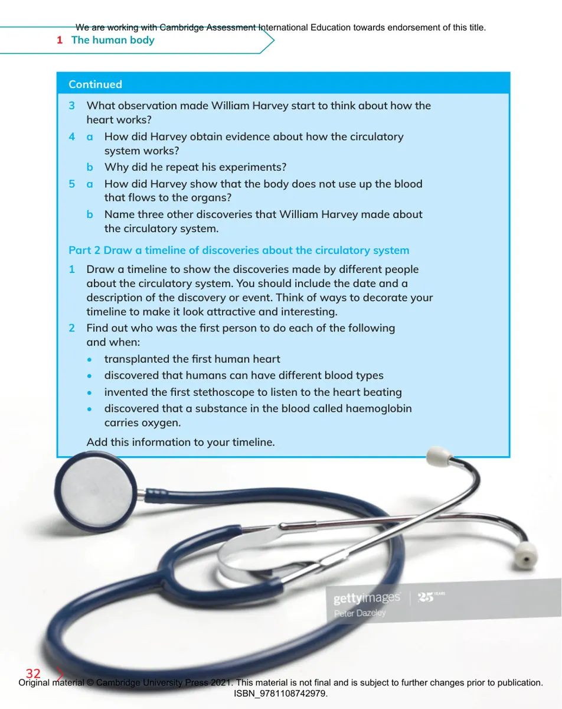
We are working with Cambridge Assessment International Education towards endorsement of this title.
1The human body
Continued
3 What observation made William Harvey start to think about how the
heart works?
4 a How did Harvey obtain evidence about how the circulatory
system works?
b Why did he repeat his experiments?
5 a How did Harvey show that the body does not use up the blood
that fl ows to the organs?
b Name three other discoveries that William Harvey made about
the circulatory system.
Part 2 Draw a timeline of discoveries about the circulatory system
1 Draw a timeline to show the discoveries made by different people
about the circulatory system. You should include the date and a
description of the discovery or event. Think of ways to decorate your
timeline to make it look attractive and interesting.
2 Find out who was the fi rst person to do each of the following
and when:
•
transplanted the fi rst human heart
•
discovered that humans can have different blood types
•
invented the fi rst stethoscope to listen to the heart beating
•
discovered that a substance in the blood called haemoglobin
carries oxygen.
Add this information to your timeline.
32
Original material © Cambridge University Press 2021. This material is not final and is subject to further changes prior to publication.
ISBN_9781108742979.
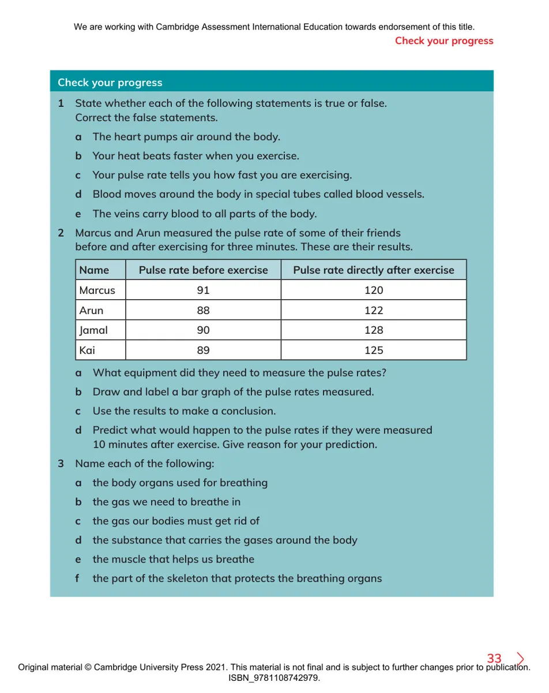
We are working with Cambridge Assessment International Education towards endorsement of this title.
Check your progress
Check your progress
1 State whether each of the following statements is true or false.
Correct the false statements.
a The heart pumps air around the body.
b Your heat beats faster when you exercise.
c
Your pulse rate tells you how fast you are exercising.
d Blood moves around the body in special tubes called blood vessels.
e
The veins carry blood to all parts of the body.
2 Marcus and Arun measured the pulse rate of some of their friends
before and after exercising for three minutes. These are their results.
Name
Pulse rate before exercise
Pulse rate directly after exercise
Marcus
91
120
Arun
88
122
Jamal
90
128
Kai
89
125
a What equipment did they need to measure the pulse rates?
b Draw and label a bar graph of the pulse rates measured.
c
Use the results to make a conclusion.
d Predict what would happen to the pulse rates if they were measured
10 minutes after exercise. Give reason for your prediction.
3 Name each of the following:
a the body organs used for breathing
b the gas we need to breathe in
c
the gas our bodies must get rid of
d the substance that carries the gases around the body
e
the muscle that helps us breathe
f
the part of the skeleton that protects the breathing organs
33
Original material © Cambridge University Press 2021. This material is not final and is subject to further changes prior to publication.
ISBN_9781108742979.
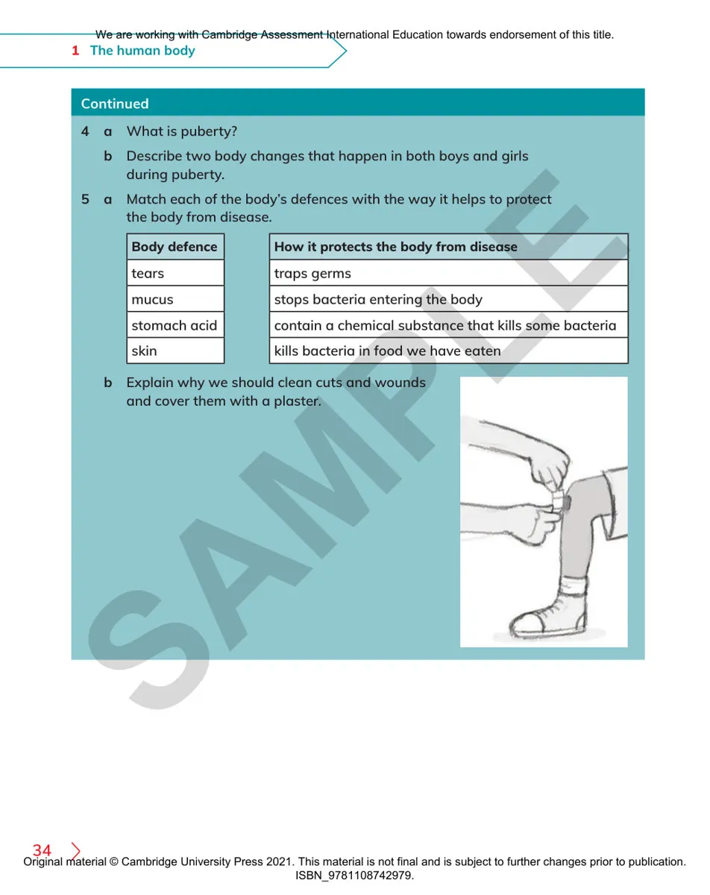
We are working with Cambridge Assessment International Education towards endorsement of this title.
1The human body
Continued
4 a What is puberty?
b Describe two body changes that happen in both boys and girls
during puberty.
5 a Match each of the body’s defences with the way it helps to protect
the body from disease.
Body defence
How it protects the body from disease
tears
traps germs
mucus
stops bacteria entering the body
stomach acid
contain a chemical substance that kills some bacteria
skin
kills bacteria in food we have eaten
b Explain why we should clean cuts and wounds
and cover them with a plaster.
34
Original material © Cambridge University Press 2021. This material is not final and is subject to further changes prior to publication.
ISBN_9781108742979.
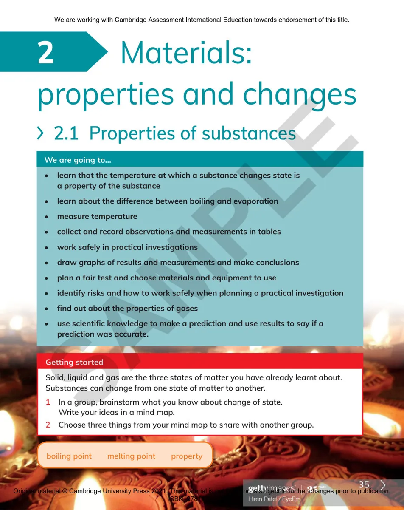
We are working with Cambridge Assessment International Education towards endorsement of this title.
2
Materials:
properties and changes
2.1 Properties of substances
We are going to...
•
learn that the temperature at which a substance changes state is
a property of the substance
•
learn about the difference between boiling and evaporation
•
measure temperature
•
collect and record observations and measurements in tables
•
work safely in practical investigations
•
draw graphs of results and measurements and make conclusions
•
plan a fair test and choose materials and equipment to use
•
identify risks and how to work safely when planning a practical investigation
•
find out about the properties of gases
•
use scientific knowledge to make a prediction and use results to say if a
prediction was accurate.
Getting started
Solid, liquid and gas are the three states of matter you have already learnt about.
Substances can change from one state of matter to another.
1 In a group, brainstorm what you know about change of state.
Write your ideas in a mind map.
2 Choose three things from your mind map to share with another group.
boiling point melting point property
35
Original material © Cambridge University Press 2021. This material is not final and is subject to further changes prior to publication.
ISBN_9781108742979.
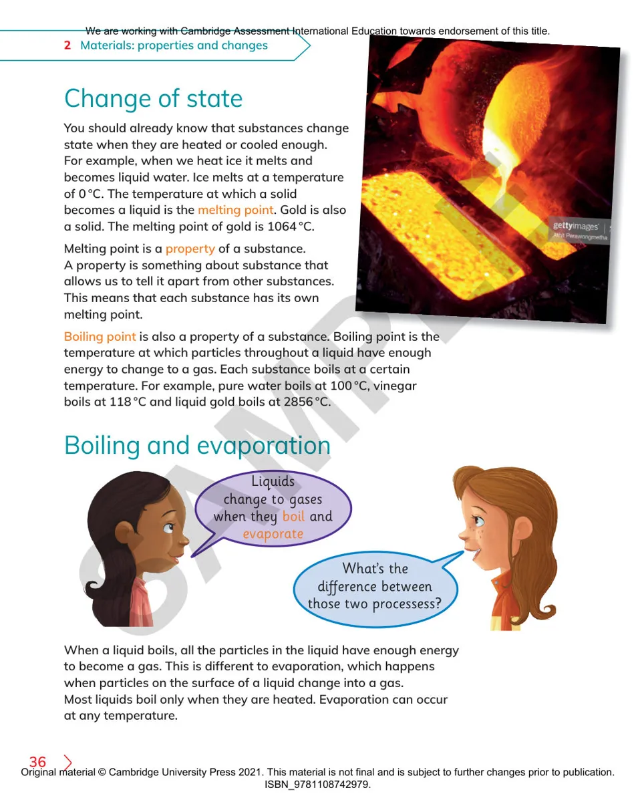
We are working with Cambridge Assessment International Education towards endorsement of this title.
2 Materials: properties and changes
Change of state
You should already know that substances change
state when they are heated or cooled enough.
For example, when we heat ice it melts and
becomes liquid water. Ice melts at a temperature
of 0 °C. The temperature at which a solid
becomes a liquid is the melting point. Gold is also
a solid. The melting point of gold is 1064 °C.
Melting point is a property of a substance.
A property is something about substance that
allows us to tell it apart from other substances.
This means that each substance has its own
melting point.
Boiling point is also a property of a substance. Boiling point is the
temperature at which particles throughout a liquid have enough
energy to change to a gas. Each substance boils at a certain
temperature. For example, pure water boils at 100 °C, vinegar
boils at 118 °C and liquid gold boils at 2856 °C.
ing point is the
Boiling and evaporation
Liquids
change to gases
when they boil and
evaporate
What’s the
difference between
those two processess?
When a liquid boils, all the particles in the liquid have enough energy
to become a gas. This is different to evaporation, which happens
when particles on the surface of a liquid change into a gas.
Most liquids boil only when they are heated. Evaporation can occur
at any temperature.
36
Original material © Cambridge University Press 2021. This material is not final and is subject to further changes prior to publication.
ISBN_9781108742979.
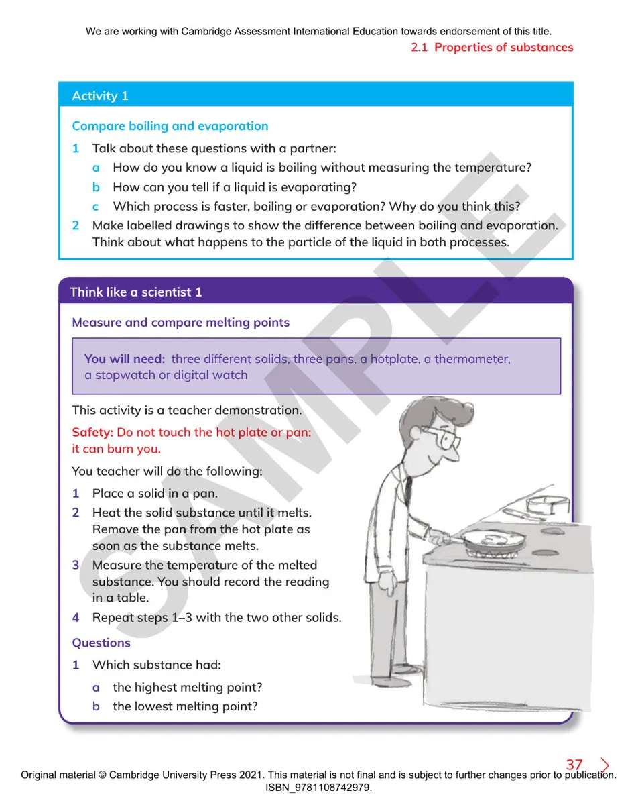
We are working with Cambridge Assessment International Education towards endorsement of this title.
2.1 Properties of substances
Activity 1
Compare boiling and evaporation
1 Talk about these questions with a partner:
a How do you know a liquid is boiling without measuring the temperature?
b
How can you tell if a liquid is evaporating?
c
Which process is faster, boiling or evaporation? Why do you think this?
2 Make labelled drawings to show the difference between boiling and evaporation.
Think about what happens to the particle of the liquid in both processes.
Think like a scientist 1
Measure and compare melting points
You will need: three different solids, three pans, a hotplate, a thermometer,
a stopwatch or digital watch
This activity is a teacher demonstration.
Safety: Do not touch the hot plate or pan:
it can burn you.
You teacher will do the following:
1 Place a solid in a pan.
2
Heat the solid substance until it melts.
Remove the pan from the hot plate as
soon as the substance melts.
3
Measure the temperature of the melted
substance. You should record the reading
in a table.
4
Repeat steps 1–3 with the two other solids.
Questions
1 Which substance had:
a the highest melting point?
b the lowest melting point?
37
Original material © Cambridge University Press 2021. This material is not final and is subject to further changes prior to publication.
ISBN_9781108742979.
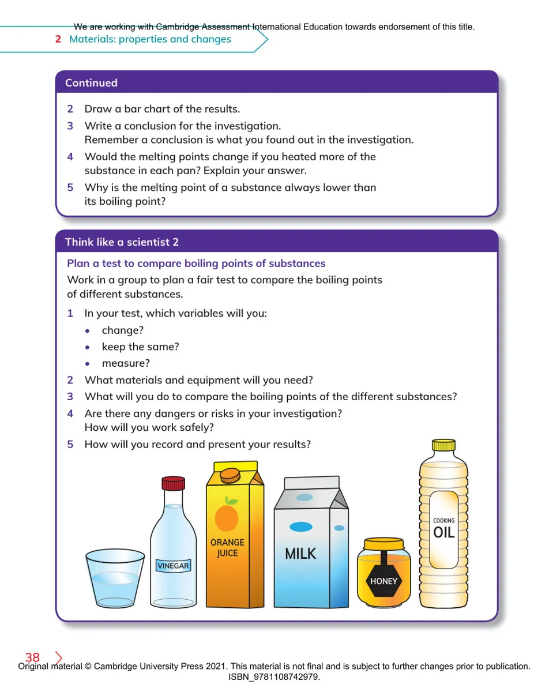
We are working with Cambridge Assessment International Education towards endorsement of this title.
2 Materials: properties and changes
Continued
2 Draw a bar chart of the results.
3
Write a conclusion for the investigation.
Remember a conclusion is what you found out in the investigation.
4
Would the melting points change if you heated more of the
substance in each pan? Explain your answer.
5
Why is the melting point of a substance always lower than
its boiling point?
Think like a scientist 2
Plan a test to compare boiling points of substances
Work in a group to plan a fair test to compare the boiling points
of different substances.
1 In your test, which variables will you:
•
change?
•
keep the same?
•
measure?
2 What materials and equipment will you need?
3
What will you do to compare the boiling points of the different substances?
4
Are there any dangers or risks in your investigation?
How will you work safely?
5
How will you record and present your results?
COOKING
OIL
ORANGE
JUICE
MILK
VINEGAR
HONEY
38
Original material © Cambridge University Press 2021. This material is not final and is subject to further changes prior to publication.
ISBN_9781108742979.
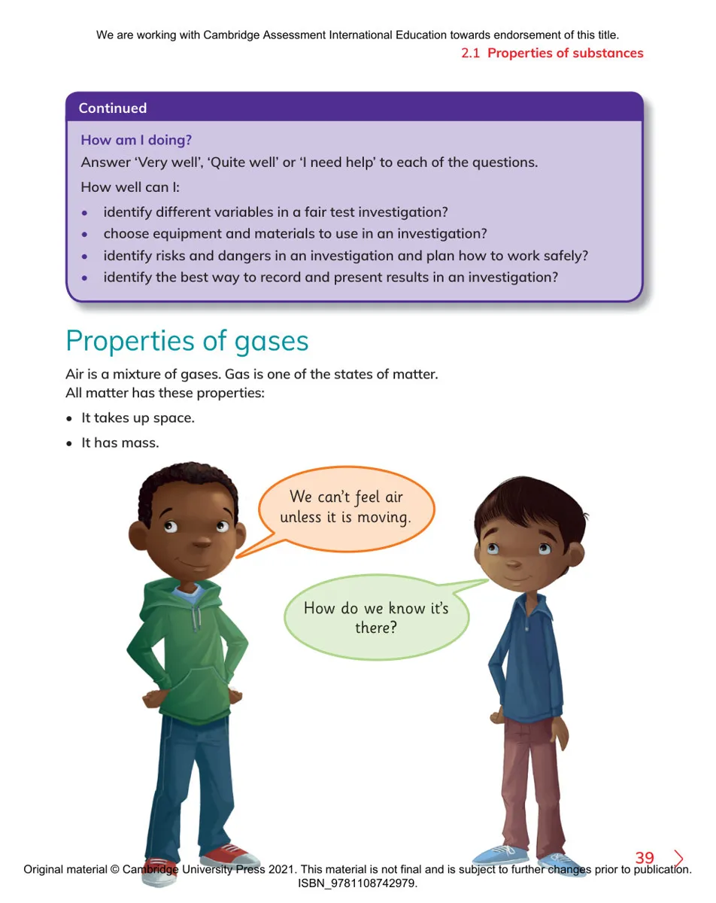
We are working with Cambridge Assessment International Education towards endorsement of this title.
2.1 Properties of substances
Continued
How am I doing?
Answer ‘Very well’, ‘Quite well’ or ‘I need help’ to each of the questions.
How well can I:
•
identify different variables in a fair test investigation?
•
choose equipment and materials to use in an investigation?
•
identify risks and dangers in an investigation and plan how to work safely?
•
identify the best way to record and present results in an investigation?
Properties of gases
Air is a mixture of gases. Gas is one of the states of matter.
All matter has these properties:
• It takes up space.
• It has mass.
We can’t feel air
unless it is moving.
How do we know it’s
there?
39
Original material © Cambridge University Press 2021. This material is not final and is subject to further changes prior to publication.
ISBN_9781108742979.
We are working with Cambridge Assessment International Education towards endorsement of this title.
2 Materials: properties and changes
Think like a scientist 3
Investigate the properties of gases
You will need:
two balloons of the same size, two rulers, string, a heavy book, twist ties, scissors,
sticky tape, safety goggles
Safety: Take care when handling heavy books
classroom table
1 Blow up the balloons to the same size and tie
them off tightly with twist ties.
2
Measure and cut three pieces of string 15 cm long.
3
Use two pieces of string to tie the balloons onto
one of the rulers as shown in the picture.
Keep the balloons the same distance from
the end of the ruler.
twist ties
balloons
4 Put the second ruler near the edge of a table
and hold down one end with a heavy book.
The other end should stick out over the edge of the table.
5
Use the third piece of string to hang the ruler and balloons from
the second ruler.
6
Carefully move the balloons so that they are balanced on the hanging ruler.
Tape the strings in place so that they cannot move.
7 a You are going to loosen the twist tie on one balloon.
Predict what will happen when you do this. Say why.
b Loosen the tie and observe what happens.
Was your prediction correct?
c
Make a drawing of your observation.
Questions
1 How does the investigation show that gases take up space?
2
How does the investigation show that gases have mass?
3
How did you work safely in the investigation?
book
two rulers
string
40
Original material © Cambridge University Press 2021. This material is not final and is subject to further changes prior to publication.
ISBN_9781108742979.
We are working with Cambridge Assessment International Education towards endorsement of this title.
2.1 Properties of substances
How did the practical work help me learn about properties of substances?
Has the practical work made me change any of my ideas about gases?
Look what I can do!
I can understand that the temperature at which a substance changes
state is a property of the substance.
I can describe the difference between boiling and evaporation.
I can measure temperature.
I can collect and record observations and measurements in tables.
I can work safely in practical investigations.
I can draw graphs of results and measurements and make conclusions.
I can plan a fair test and choose materials and equipment to use.
I can identify risks and how to work safely when planning a practical
investigation.
I can find out about the properties of gases.
I can use scientific knowledge to make a prediction and use results to
say if a prediction was accurate.
41
Original material © Cambridge University Press 2021. This material is not final and is subject to further changes prior to publication.
ISBN_9781108742979.
We are working with Cambridge Assessment International Education towards endorsement of this title.
2 Materials: properties and changes
2.2 Thermal and electrical
conductors
We are going to...
•
learn that conducting heat and electricity are properties of a substance
•
collect and record observations and measurements in tables
•
work safely in practical investigations
•
suggest how to improve an investigation
•
draw graphs of results and measurements and make conclusions
•
group substances according to their properties
•
identify the type of scientific enquiry used in an investigation
•
use scientific knowledge to make a prediction
•
use results to say if a prediction was accurate
•
identify and describe patterns in results.
Getting started
Have you noticed that when you put a cold,
metal teaspoon into a hot cup of tea, the
teaspoon handle feels warm after a while?
1 Talk about why this happens.
2 Draw an energy chain to help explain
your answer.
conduction
electrical conductors
thermal conductors
42
Original material © Cambridge University Press 2021. This material is not final and is subject to further changes prior to publication.
ISBN_9781108742979.
We are working with Cambridge Assessment International Education towards endorsement of this title.
2.2 Thermal and electrical conductors
Substances can conduct
heat
You should already know that heat can be
transferred from one object to another. This
type of energy transfer is called conduction.
Substances and materials that conduct heat
well are called thermal conductors.
Why does a metal
teaspoon feel hotter than a plastic
teaspoon when you put them in a cup
of hot tea?
Think like a scientist 1
Investigate how well different materials conduct heat
You will need:
a beaker of hot water, a metal teaspoon, a plastic teaspoon, a glass rod,
a pencil, a long, thin piece of polystyrene foam, fi ve beads, petroleum jelly
1 Put a small bit of petroleum
jelly of the same size onto one
end of each of the materials.
Push a bead into the petroleum
jelly.
polystyrene foam
glass rod
metal spoon
beaker
2 Your teacher will pour hot water
into a beaker. Put each of the
different materials into the beaker.
Safety: Don’t touch the hot water.
Be careful not knock over the beaker
of hot water.
pencil
bead on
petroleum jelly
plastic spoon
hot water
43
Original material © Cambridge University Press 2021. This material is not final and is subject to further changes prior to publication.
ISBN_9781108742979.
We are working with Cambridge Assessment International Education towards endorsement of this title.
2 Materials: properties and changes
Continued
3 Which bead do you think will fall off fi rst? Say why.
4 Draw a table to record the order in which the beads fall off the materials.
5 a Which bead fell off fi rst?
b Was your prediction correct?
6 a Which bead fell off last?
b What did this show you about that material?
7 Write a conclusion for the investigation from your observations.
8 Suggest a way to improve the investigation so that you can draw
a graph of your results.
9 Which types of scientifi c enquiry did you use in the investigation?
Explain your answer.
How am I doing?
Answer ‘Very well’, ‘Quite well’ or I need help’ to each of the questions.
How well can I:
•
make a prediction with reasons?
•
record observations in a table?
•
use observations to write a conclusion?
an investigation?
•
suggest how to improve an investigation?
Some materials and
substances conduct heat
better than others.
How well a substance
can conduct heat is a
property of the substance.
Metals are good conductors
of heat. Silver is the best
conductor of heat.
Non-metals, such as glass
and plastic, are not good
conductors of heat.
44
Original material © Cambridge University Press 2021. This material is not final and is subject to further changes prior to publication.
ISBN_9781108742979.
We are working with Cambridge Assessment International Education towards endorsement of this title.
2.2 Thermal and electrical conductors
Questions
1 Explain in your own words what a thermal conductor is.
2 Why do you think pots and pans are made from metal?
3 Why do you think the handles of pots and pans
are made from plastic?
4 In which cup will your tea stay warm
longest: a stainless steel cup, a glass cup
or a polystyrene foam cup? Explain why.
5 Find out the name for materials and
substances that are not good conductors of heat.
Substances can conduct electricity
Some materials and substances are able to conduct electricity.
They are called electrical conductors. The ability to conduct
electricity is a property of materials and substances.
You should already know that metals are substances
that conduct of electricity. Do other substances also
conduct electricity?
Think like a scientist 2
Investigate how well different substances conduct electricity
You will need:
two cells; a cell holder, a 1.5 V lamp,
three 15 cm pieces of copper connecting wire,
steel paper clip, aluminium foil, tap water,
sugar, pencil graphite
1 Set up your circuit as shown in the diagram
45
Original material © Cambridge University Press 2021. This material is not final and is subject to further changes prior to publication.
ISBN_9781108742979.
We are working with Cambridge Assessment International Education towards endorsement of this title.
2 Materials: properties and changes
Continued
2 Predict how well each of the substances you are going to test
will conduct electricity. Write your predictions in a table.
Use ticks to show your prediction and results:
0 ticks lamp doesn’t shine
1 tick ✓ lamp is dim
2 ticks ✓✓ lamp is bright
3 a What substance is the conducting wire made of?
b Touch the free ends of the conducting wire together.
How brightly does the lamp shine?
4 a Touch the free ends of the wire to the steel paper clip.
How brightly does the lamp shine?
b If the lamp does not light up, test the
substance again to be sure of your result.
5 Repeat Step 4 with all the other substances
you are going to test. For each substance,
observe the brightness of the lamp.
6 a Record your observations in the table.
b Are your results reliable?
How can you fi nd out?
Questions
1 How well did your results match your predictions?
2 Which of the substances you tested were metals?
3 a Which substance that you tested conducted electricity best?
b Which substance that you tested conducted electricity worst
or not at all?
4 What can you conclude from your investigation?
5 Group the substances you tested into substances that conduct
electricity and substances that do not conduct electricity.
6 Which type of scientifi c enquiry did you use in the investigation?
46
Original material © Cambridge University Press 2021. This material is not final and is subject to further changes prior to publication.
ISBN_9781108742979.
We are working with Cambridge Assessment International Education towards endorsement of this title.
2.2 Thermal and electrical conductors
Activity 1
Compare thermal and electrical conductors
The table shows measurements of how well some substances conduct
heat and electricity.
How well the substance conducts…
Substance
Heat (W/m−K)
Electricity (W/m−K)
aluminium
237
37
copper
386
59
graphite
168
1
brass
150
16
steel
80
10
1 Draw a scatter graph of the measurements.
Label each data point you plot with the name of the substance.
2 Which substance is:
a the best conductor of heat?
b the best conductor of electricity?
c
the worst conductor of heat?
d the worst conductor of electricity?
3 Describe the pattern you observe.
4 Identify and describe any measurements that do not fit the pattern.
5 Use the graph to predict the measurement for conducting heat
for a substance with a value of 14 for conducting electricity.
Plot the value on the graph in a different colour.
6 Suggest a conclusion you can make from the data and your graph.
How well did I work in a group?
What did I find easy to do?
What do I need more help with?
47
Original material © Cambridge University Press 2021. This material is not final and is subject to further changes prior to publication.
ISBN_9781108742979.
We are working with Cambridge Assessment International Education towards endorsement of this title.
2 Materials: properties and changes
Look what I can do!
I can understand that conducting heat and electricity are properties of
a substance.
I can collect and record observations and measurements in tables.
I can work safely in practical investigations.
I can suggest how to improve an investigation.
I can draw graphs of results and measurements.
I can make conclusions from results and measurements.
I can identify the type of scientific enquiry used in an investigation.
I can group substances according to their properties.
I can use results to say if a prediction was accurate.
I can identify and describe patterns in results.
48
Original material © Cambridge University Press 2021. This material is not final and is subject to further changes prior to publication.
ISBN_9781108742979.
We are working with Cambridge Assessment International Education towards endorsement of this title.
2.2 Thermal and electrical conductors
2.3 Reversible changes
We are going to...
•
find out about and describe changes to substances that are reversible
•
choose materials and equipment to use
•
identify risks and work safely when doing practical work
•
use the particle model to explain how temperature affects dissolving
•
use scientific knowledge to make a prediction and use results to say
if a prediction was accurate
•
collect and record observations and measurements in tables
•
decide if a test is fair
•
make a conclusion from results and measurements
•
ask a question to investigate and choose a type of scientific enquiry
to find the answer
Getting started
You will need:
ice cubes, saucer, watch
Place the ice cubes in the sun or other warm place for fi ve minutes.
1 a What has happened to the ice after fi ve minutes?
b Make a drawing of your observation.
2 What causes the ice to change?
3
What will happen to the ice if you put it back in the freezer? Why?
irreversible physical change rate reversible
solute solvent uniform
49
Original material © Cambridge University Press 2021. This material is not final and is subject to further changes prior to publication.
ISBN_9781108742979.
We are working with Cambridge Assessment International Education towards endorsement of this title.
2 Materials: properties and changes
Changes to substances
In a warm place, solid ice melts to become liquid water. This is a
change of state. A change of state is a physical change.
A physical change alters the how a substance looks or feels.
The substance does not change into a new substance.
When you put the water back in the freezer it becomes a solid
again. We say that the change is reversible. This is because we
can change solid ice to liquid water and also change liquid water
back to solid ice.
Heating causes ice to melt into liquid water.
When the water loses heat and cools it
becomes solid again. The diagram shows
the change of state between ice and water.
We can show the change of state in writing
like this:
Heating
⇌ solid ice
Cooling
Liquid water
What happens when we burn a match? Can the match change
back to the way it was? Sometimes the changes to substances
cannot be reversed. We call these irreversible changes. Some
irreversible changes turn one substance into another substance.
This means that there is chemical change. For example, when we
burn a match the wood changes into a black substance called
carbon.
Questions
1 When you mix boiling water with jelly powder it becomes
a liquid. In the fridge it becomes solid. Can we make jelly
change back to a liquid? Draw a simple flow diagram to
explain your answer.
2 Does boiling an egg cause a reversible or irreversible change?
Explain why.
50
Original material © Cambridge University Press 2021. This material is not final and is subject to further changes prior to publication.
ISBN_9781108742979.
We are working with Cambridge Assessment International Education towards endorsement of this title.
2.3 Reversible changes
Think like a scientist 1
Demonstrate a reversible change
1 Think of a reversible change to a substance. Describe the change.
2 a Decide how you could demonstrate this reversible change.
b How will you work safely?
3 Your teacher will put out some materials and equipment.
Choose and collect the materials and equipment you will need.
4 a Demonstrate the reversible change you chose to another group.
Ask the group to describe the change that takes place.
b Explain how to change the substance back to the way it was
before you changed it.
How are we doing?
As a group, point to one of the faces to answer the questions.
•
Could we think of reversible change to demonstrate?
•
Could we choose and use suitable materials and equipment?
•
Could we demonstrate that the change is reversible?
Dissolving
Some substances can dissolve in water or other liquids.
For example, sea water is salty because there is dissolved salt
in the water. You should remember that the substance that
dissolves is called the solute. The substance in which the solute
dissolves is called the solvent. Together, the solute and solvent
form a solution.
or
or
51
Original material © Cambridge University Press 2021. This material is not final and is subject to further changes prior to publication.
ISBN_9781108742979.
We are working with Cambridge Assessment International Education towards endorsement of this title.
2 Materials: properties and changes
When a solute dissolves, the particles of the solute move
between the solvent particles. The solute particles spread
evenly in the solvent. Because of this you cannot see the solute
in a solution after it has dissolved. We say that a solution
has a uniform appearance. This means that it looks the same
throughout. The picture shows how the solute particles spread
when they dissolve in water.
water
particles
solute
particles,
e.g. salt
salt
dissolves
Salt and water
particles are
evenly spread
Activity
Describe dissolving
The picture shows dissolving.
1 Which substance is the solute?
How do you know this?
2
Which substance is the solvent?
3
Draw a picture of the solution after all
the solute has dissolved.
4
Describe to a partner what happens
when a substance dissolves.
5
Is dissolving a reversible change?
Say why or why not.
copper sulfate
water
52
Original material © Cambridge University Press 2021. This material is not final and is subject to further changes prior to publication.
ISBN_9781108742979.
We are working with Cambridge Assessment International Education towards endorsement of this title.
2.3 Reversible changes
Can we make solids
dissolve faster?
Did you
forget to put sugar’
in my coffee?
It’s not sweet.
I put
in two teaspoons
like I always
do.
Why do you think the coffee tasted bitter? How could Marcus
make the coffee taste sweeter without adding any more sugar?
The coffee and sugar form a solution. The sugar will dissolve
faster if Marcus stirs the solution. Stirring is one way to make
solid solutes dissolve faster. Stirring causes the particles of
the solute to spread out into the spaces between the particles
of the solvent more quickly. We say that stirring increases the
rate at which a solute dissolves. The rate is how fast something
happens.
There are other factors that make solids dissolve faster.
Have you ever tried to make coffee with water from the fridge?
Why do we use hot water?
53
Original material © Cambridge University Press 2021. This material is not final and is subject to further changes prior to publication.
ISBN_9781108742979.
We are working with Cambridge Assessment International Education towards endorsement of this title.
2 Materials: properties and changes
Think like a scientist 2
Does water temperature affect the rate of dissolving?
You will need:
sugar, glass jars, cold water, hot water, teaspoon, a measuring cylinder,
a stopwatch or timer
Safety: Don’t touch the hot water. Be careful not knock over the jar of hot water.
1 Does sugar dissolve more quickly in hot or cold water?
Make a prediction and say why you think this.
2 Stir a teaspoon of sugar into a 100 ml of cold water in a glass jar.
3 Stir a teaspoon of sugar into a 100 ml of hot water in a glass jar.
4
Time how long it takes for the sugar to dissolve in both jars.
5
Record your results in a table.
6 a In which jar did the sugar dissolve quickest? Suggest a reason for this.
b Was your prediction correct?
7 How did you make sure your test was fair?
8
Write down what you conclude about the effect of temperature
on dissolving a solute.
The particles in matter are always moving. When we increase the
temperature of a substance, the heat adds energy to the particles
of the substance. This energy causes them to move faster and
spread out more.
In a heated solvent, the particles of the solute also gain energy
and move faster than in a cooler solvent. This allows the particles
of the solute to spread through the solution more easily, so the
solute dissolves faster.
Questions
1 What does the rate of dissolving mean?
2 Name two factors that affect the rate of dissolving.
3 a How does heating affect the particles in a solution?
b Explain how this affects dissolving.
4 Explain why sugar will dissolve on its own in a cup of cold
water if we leave it long enough.
54
Original material © Cambridge University Press 2021. This material is not final and is subject to further changes prior to publication.
ISBN_9781108742979.
We are working with Cambridge Assessment International Education towards endorsement of this title.
2.3 Reversible changes
Think like a scientist 3
Ask and investigate a question about dissolving
1 With a partner, think of a question about dissolving
that you would like to fi nd the answer to.
2 Decide on the type of scientifi c enquiry you will use to
answer your questions, for example, a fair test, doing
research or observing over time.
3 Find out the answer to your question.
4 Make a presentation to share with the class about
your fi ndings.
Am I happy with the way I worked in this topic?
What could I do better?
Look what I can do!
I can understand and describe changes to substances that are reversible.
I can choose materials and equipment to use.
I can identify risks and work safely in practical work.
I can use the particle model to explain how temperature affects dissolving.
I can use scientific knowledge to make a prediction and use results to say
if a prediction was accurate.
I can collect and record observations and measurements in tables.
I can decide if a test is fair.
I can make a conclusion from results and measurements.
I can ask a question to investigate and choose a type of scientific enquiry
to find the answer.
55
Original material © Cambridge University Press 2021. This material is not final and is subject to further changes prior to publication.
ISBN_9781108742979.
We are working with Cambridge Assessment International Education towards endorsement of this title.
2 Materials: properties and changes
2.4 Chemical reactions
We are going to...
•
find out that in a chemical reaction, substances react together
to form new substances
•
identify reactants and products in chemical reactions
and products in chemical reactions
•
observe and describe evidence for chemical reactions
ribe evidence for chemical reactions
•
record observations in drawings
ns in drawings
•
write a conclusion for an investigation
n for an investigation
•
measure temperature.
ture.
Getting started
You will need:
a candle, a candle holder, matches, a teaspoon
Your teacher will light the candle and hold a metal spoon
over the fl ame. Observe what happens after a few minutes.
1 Describe one reversible change you observe when the
candle burns. Why does this change happen?
2 What happens to the candle wick?
Is this change reversible?
3 Did any new substances form? How do you know this?
chemical reaction evidence
products react reactants
56
Original material © Cambridge University Press 2021. This material is not final and is subject to further changes prior to publication.
ISBN_9781108742979.
We are working with Cambridge Assessment International Education towards endorsement of this title.
2.4 Chemical reactions
Reactants and products
When some substances are mixed together, they change and
form a new substance. This is called a chemical reaction. We say
that the substances react together. The substances that react
together are called reactants. The new substances that form are
called the products.
Think like a scientist 1
Identify reactants and products
You will need:
vinegar, bicarbonate of soda, a jar with a wide mouth, a spoon
1
Pour some vinegar into the jar.
2
a Put a teaspoon of bicarbonate of soda
into the jar. Observe what happens.
b Make a drawing of your observations.
3
Try to explain what you observed.
4
Which substances were the reactants?
5
Which substance was the product?
6
a Wait about fi ve minutes.
Can you observe any other product?
b Describe what you observe.
How am I doing?
•
Could I make a drawing of my observations?
•
Could I explain my observations?
•
Could I identify the reactants in the chemical reaction?
•
Could I identify any products formed in the reaction?
VINEGAR
BICARBONATE
OF SODA
57
Original material © Cambridge University Press 2021. This material is not final and is subject to further changes prior to publication.
ISBN_9781108742979.
We are working with Cambridge Assessment International Education towards endorsement of this title.
2 Materials: properties and changes
Evidence for chemical reactions
Sometimes we can see that a product has formed in a chemical
reaction. For example, when vinegar and bicarbonate of soda
react, we can see that a gas is produced. The gas is evidence of
the reaction. There are also other ways we can tell if a chemical
reaction has taken place.
Think like a scientist 2
Investigate evidence for chemical reactions A
You will need:
water, cornstarch, iodine solution, a dropper, a spoon, limewater,
a drinking straw, beakers
1
a Pour some water into a beaker. Add three full droppers of iodine solution.
b Make a drawing of your observations.
c
Add a spoon of cornstarch to the
beaker and stir.
d Make a drawing of your observations.
2
a Pour some limewater into a beaker.
b Breathe air into the limewater with
a straw. Which gas is in the air you
breathe out?
c
Write one or two sentences to describe your
observations.
3
How do you know that a chemical reaction has
taken place in this investigation?
Safety: Take care not to suck up the limewater
into your mouth. It can also irritate your eyes
and skin.
58
Original material © Cambridge University Press 2021. This material is not final and is subject to further changes prior to publication.
ISBN_9781108742979.
We are working with Cambridge Assessment International Education towards endorsement of this title.
2.4 Chemical reactions
Continued
Investigate evidence for chemical reactions B
You will need:
wire wool, vinegar, a beaker, a thermometer, a timer
1 Loosen up a ball of wire wool and place it in a beaker.
Pour vinegar on to the wire wool and let the beaker stand
for one to two minutes. Make sure all the wire wool is in
contact with the vinegar.
2 Place a thermometer into the middle of the wire wool.
Record the temperature reading on the thermometer.
3 Wait fi ve minutes and record the temperature
reading on the thermometer again.
What do you observe?
4 How do you know that a chemical reaction
has taken place in this investigation?
5 Write a conclusion for the investigation.
Questions
1 Describe three ways that we can tell that a
chemical reaction has taken place and give
an example of each.
2 When clear limewater is mixed with
carbon dioxide, the reaction forms a
substance called calcium carbonate.
a Name the reactants in the reaction.
b Name the product in the reaction.
c
How can we tell that the reaction has taken place?
3 Zara drops a fi zzy tablet into glass of water.
What evidence will she have that a chemical reaction
is taking place?
VINEGAR
59
Original material © Cambridge University Press 2021. This material is not final and is subject to further changes prior to publication.
ISBN_9781108742979.
We are working with Cambridge Assessment International Education towards endorsement of this title.
2 Materials: properties and changes
How did the practical work help me learn about different
evidence for chemical reactions?
What did I do best in this topic?
What do I need to practise more?
Look what I can do!
I can explain that in a chemical reaction, substances react together
to form new substances.
I can identify reactants and products in chemical reactions.
I can observe and describe evidence for chemical reactions.
I can record observations in drawings.
I can write a conclusion for an investigation.
I can measure temperature.
60
Original material © Cambridge University Press 2021. This material is not final and is subject to further changes prior to publication.
ISBN_9781108742979.
We are working with Cambridge Assessment International Education towards endorsement of this title.
2.4 Chemical reactions
Project: Electrical insulators
We are going to:
•
fi nd out how an electrician uses electrical insulators
•
fi nd out how electrical insulators are used in our homes and local area
•
do research to fi nd other examples of how we use electrical insulators.
Materials and substances that are not good conductors of electricity are called
insulators. Plastic, rubber, glass and most non-metal substances are electrical
insulators.
1 Speak to an electrician in your area. Find out how he or she uses electrical
insulators in their work.
2 a Identify places in your home and local area where electrical insulators are
used. Take photos or make drawings of the insulators.
b Identify the substance or material that each insulator is made of.
3 Do some research to fi nd out about other examples of how we use electrical
insulators.
4 Prepare a short presentation on your fi ndings. Include photos or drawings.
In your presentation also explain why we need to use electrical insulators.
61
Original material © Cambridge University Press 2021. This material is not final and is subject to further changes prior to publication.
ISBN_9781108742979.
We are working with Cambridge Assessment International Education towards endorsement of this title.
2 Materials: properties and changes
Check your progress
1 The table shows the melting points of some
substances.
Substance
Melting point/ °C
gold
1064
a What is a melting point?
candle wax
60
b List the substances in the order of
silver
962
highest to lowest melting point.
c
Describe a pattern you can see in the
melting points.
copper
1083
ice
0
d Does the melting point of a substance
aluminium
660
change? Say why or why not.
2 a Why does food cook faster in the oven in a metal dish than in a glass dish?
b If you used a dish made of a different metal, would the cooking time change?
Explain why.
3 a Sort the following processes into two groups: reversible processes and
irreversible processes
dissolving
boiling
freezing
burning
rusting
b Add another process that you know of to each of the groups.
4 a Will a solid usually dissolve faster in
cold water, warm water or hot water?
b Explain your answer to 4a by describing
how temperature affects the movement
of particles in a solution.
5 Class 6 put an iron nail in a saucer of water.
A few days later they observed that the nail
had rusted.
a What evidence for a chemical
reaction did class 6 observe?
b Name the reactants in the reaction.
c
Name the product that formed in
the reaction.
evaporating
62
Original material © Cambridge University Press 2021. This material is not final and is subject to further changes prior to publication.
ISBN_9781108742979.
We are working with Cambridge Assessment International Education towards endorsement of this title.
3
Rocks, the rock
cycle and soil
3.1 Igneous rocks
We are going to...
•
find out that rocks can be classified into different types and describe the
features of each
•
use diagrams and photographs to describe igneous rocks
•
describe the formation of igneous rocks in terms of magma and solidification
•
make predictions, based on what we know about how igneous rocks form
•
describe the accuracy of predictions, based on results
•
make a conclusion from results using science understanding
•
describe risks when planning practical work and carry out practical work safely
•
sort and group rocks by observing differences
•
complete a key to igneous rocks based on easily observed differences.
Getting started
1 Name the layers A, B ,C and D.
2 What does layer B consist of?
3 What happens when the material in layer B
is ejected through the Earth’s surface?
A
B
C
D
crystal crystalline extrusive igneous rock geologist igneous rock
intrusive igneous rock mineral naked eye sedimentary rock solidification
63
Original material © Cambridge University Press 2021. This material is not final and is subject to further changes prior to publication.
ISBN_9781108742979.
We are working with Cambridge Assessment International Education towards endorsement of this title.
3 Rocks, the rock cycle and soil
Rocks are different
Rocks differ from one another because they were formed in
different ways. Geologists are scientists who study rocks.
In the next few topics you are going to be a geologist.
Think like a scientist 1
Collect and sort rocks
1 Find some samples of rock. Make sure you don’t choose ‘manufactured’
materials like concrete and brick. Good places to look are rock cuttings
where a road passes through and the rocks are exposed, or a quarry
where rock is being cut out to use for building materials. Ask an older
sibling or adult to help you.
Safety: Be careful not to fall or climb any steep rock faces!
2 Put a label on each rock with your name and the place where you
found the rock. Bring your rock samples to class.
3 Work in groups and use a hand lens to study your rocks.
4 Investigate your rocks by answering these questions about each rock:
a Does the rock have only one colour or different colours?
b Does the rock consist of grains stuck together?
c
Can you see shiny crystals in the rock?
5 Divide your rocks into two groups:
•
Rocks which are one main colour and consist of grains stuck together.
These are sedimentary rocks. You will fi nd out more about them in
the next topic.
•
Rocks which have shiny crystals and may have several colours and a
spotted appearance. These could be igneous rocks. We will focus on
igneous rocks in this topic.
How am I doing?
1 Did you manage to fi nd a rock sample?
2 Could you see the differences between the rocks everyone collected?
Choose from one of these faces:
or
or
64
Original material © Cambridge University Press 2021. This material is not final and is subject to further changes prior to publication.
ISBN_9781108742979.
We are working with Cambridge Assessment International Education towards endorsement of this title.
3.1 Igneous rocks
What are igneous rocks?
The word ‘igneous’ means fire.
Igneous rocks come from magma
that has cooled into solid rock.
Magma is hot, like a fire.
exposed
granite
Look at the diagram. Notice that
magma is coming from the mantle,
deep below the Earth’s surface.
When magma cools it turns into
a solid. This process is called
solidification.
granite
intrusive
Some of the magma comes out
at the surface as lava. When the lava cools, it solidifies into an
extrusive igneous rock. ‘Extrusive’ means outside the Earth’s crust
on the surface. The photograph on the opening page of this unit
shows this happening. The rock is a black rock called basalt.
Some of the magma stays inside the Earth’s crust. It cools down
more slowly than the lava and solidifies into an intrusive igneous
rock. ‘Intrusive’ means inside the Earth’s crust. An example of an
intrusive igneous rock is granite. On the diagram you can see that
when the rocks above the intrusive igneous rock wear away, the
granite appears at the surface.
extrusive
basalt
granite
Earth’s
crust
magma
65
Original material © Cambridge University Press 2021. This material is not final and is subject to further changes prior to publication.
ISBN_9781108742979.
We are working with Cambridge Assessment International Education towards endorsement of this title.
3 Rocks, the rock cycle and soil
What are igneous rocks made
of?
All igneous rocks are made of minerals. Each mineral consists of
a different group of substances. The most common substances
in the Earth’s crust are silica, oxygen, aluminium, magnesium
and iron. These substances join in different combinations to
form minerals.
The most important characteristic of all igneous rocks is that they
are crystalline. Crystals are formed when the minerals cool down.
Look at the photograph of quartz crystals.
Quartz is a mineral made up of silica and oxygen.
s rocks is that they
inerals cool down.
n.
When the magma is deep below the surface of
the Earth it cools slowly. This causes the
crystals to form slowly. The crystals are large
enough for us to see with the naked eye.
But because the crystals are so close, they
do not form shapes like the crystals on their
own in the photograph of quartz crystals.
Look at the photograph of a
piece of granite. Notice that the
rock has different colours
because of the different crystals.
The minerals in granite are
quartz, feldspar and mica.
The lava cools quickly
to form an extrusive
igneous rock. The crystals
in the rock are too small
to see with the naked eye.
An example is basalt.
66
Original material © Cambridge University Press 2021. This material is not final and is subject to further changes prior to publication.
ISBN_9781108742979.
white crystals
of feldspar
black crystals
of mica
glassy crystals
of quartz
crystals too small to
see with the naked eye
We are working with Cambridge Assessment International Education towards endorsement of this title.
3.1 Igneous rocks
Activity
Describe igneous rocks and complete a key
1 Name the process where magma cools down and becomes a rock.
2 Do you think the magma that made granite rock cooled down slowly or quickly?
Explain your answer.
3 Is granite an extrusive igneous rock or an intrusive igneous rock?
4 Do you think the liquid basalt rock cooled down slowly or quickly?
Explain your answer.
5 Is basalt an extrusive igneous rock or an intrusive igneous rock?
6 In the granite in the photograph:
a Which mineral appears as glassy crystals?
b Describe the crystals of feldspar.
c
Name the mineral which forms black, shiny crystals.
7 Copy and complete this key for igneous rocks:
igneous rocks
can you see the crystals
with the naked eye?
yes
no
rock is an
rock is an intrusive
igneous rock, e.g
igneous rock, e.g
basalt
In the next activity you are going to make salt crystals in a warm
and a cool environment. This is modelling making crystals for an
intrusive and an extrusive igneous rock.
67
Original material © Cambridge University Press 2021. This material is not final and is subject to further changes prior to publication.
ISBN_9781108742979.
We are working with Cambridge Assessment International Education towards endorsement of this title.
3 Rocks, the rock cycle and soil
3.1 Igneous rocks
Think like a scientist 2
Make your own crystals
You will need:
2 glass jars, 2 paper clips, 2 pencils, 2 × 10 cm pieces of string, a cup of coarse salt,
hot water, a teaspoon
1 Before we begin, this activity involves handling very hot water.
How can we make sure we take care when using hot water?
2 Tie a paperclip to the end of each piece of string.
3 Half fi ll each jar with hot water. Be careful not to burn yourself.
4 Add coarse salt to each jar. Stir until the salt dissolves.
Continue to add more salt until no more dissolves. Leave jar 1 to cool.
5 Lower a paperclip into jar 2 Wind the other end of the string round
the pencil and place the pencil over the top of the jar as shown
in the picture.
6 Leave jar 2 in a warm place for a week. Check and observe every
day. Unwind the string so that the crystal is always in the salt
solution. Crystals of salt will form on the paper clip.
7 When the jar 1 has cooled down, lower the paperclip into the jar as you did
for jar 2. Keep jar 1 in the fridge for a week. Check and observe every day.
Unwind the string so that the crystal is always in the salt solution.
Questions
1 a Describe the safety risk when doing this activity.
b How can you minimise this risk?
2 Predict which jar, 1 or 2, will begin to make crystals fi rst.
3 Predict which jar, 1 or 2, will make the bigger crystals.
4 After a few days check whether your prediction was correct.
5 Make a conclusion about the size of crystal and the temperature
of the environment.
6 Make a conclusion about the size of crystal and the time taken for
crystals to form.
7 Which jar represents crystals for an intrusive igneous rock?
68
Original material © Cambridge University Press 2021. This material is not final and is subject to further changes prior to publication.
ISBN_9781108742979.
We are working with Cambridge Assessment International Education towards endorsement of this title.
3.1 Igneous rocks
What was the most interesting thing you have learnt
about rocks so far?
Look what I can do!
I can find out that rocks can be classified into different types and describe
the features of each.
I can use diagrams and photographs to describe igneous rocks.
I can describe the formation of igneous rocks.
I can make predictions, based on what we know about how igneous rocks form.
I can describe the accuracy of predictions, based on results.
I can describe risks when planning practical work and carry out practical
work safely.
I can make a conclusion from results using science understanding.
I can sort and group rocks by observing differences.
I can complete a key to igneous rocks based on easily observed differences.
69
Original material © Cambridge University Press 2021. This material is not final and is subject to further changes prior to publication.
ISBN_9781108742979.
We are working with Cambridge Assessment International Education towards endorsement of this title.
3 Rocks, the rock cycle and soil
3.2 Sedimentary rocks
and fossils
We are going to...
•
find out that rocks can be classified into different types and describe the
features of each
•
use diagrams and photographs to describe sedimentary rocks
•
explain the formation of sedimentary rocks, in terms of weathering,
erosion and sedimentation
•
describe the way fossils can form in sedimentary rocks
•
sort and group rocks by observing differences
•
complete a key to sedimentary rocks based on easily observed differences.
Getting started
Look at the photograph.
Describe the rocks. How are they different to igneous rocks?
cast deposit erode fossil mould preserve sediment
sedimentary rock sedimentation transport valley weathering
70
Original material © Cambridge University Press 2021. This material is not final and is subject to further changes prior to publication.
ISBN_9781108742979.
We are working with Cambridge Assessment International Education towards endorsement of this title.
3.2 Sedimentary rocks and fossils
What are sedimentary rocks?
Sedimentary rocks are made from small pieces of other rocks stuck together.
Very small pieces of rock are called sediments.
Where do the sediments come from?
Rocks are continuously being broken up by a process called weathering.
For example:
• High and low temperature cracks rocks and breaks up the surface layer.
• Rainwater dissolves some rocks.
• Plants break up the surface of rocks with their roots.
Once the rocks are weakened by weathering, they become eroded by rivers.
The broken-up rocks wear away or erode the sides and bottom of river
valleys. The broken rocks are eroded into sediments. Ice and wind can also
erode rocks into sediments.
All the sediments are carried or transported by rivers. When the water in
a river reaches the sea or a lake, it flows slowly. It drops or deposits the
sediments. This process is called sedimentation.
Over millions of years the layers at the bottom get more and more squashed
by the layers on top of them. These sediments are stuck together by
minerals in the water to
form sedimentary rock.
sediments eroded from the land, transported
by rivers and ice and deposited in the sea
The diagram shows how
sedimentation takes place
on the sea floor.
Sedimentary rocks always
form in layers, like the
layers in the canyon in the
photograph on the opening
page of this topic. This is
an important characteristic
of sedimentary rocks.
land
plant and animal
material dies
sea
sedimentation
over time bottom
layers turn into
sedimentary rock
71
Original material © Cambridge University Press 2021. This material is not final and is subject to further changes prior to publication.
ISBN_9781108742979.
We are working with Cambridge Assessment International Education towards endorsement of this title.
3 Rocks, the rock cycle and soil
Activity 1
Use text, a photograph and a diagram to describe how sedimentary rocks form
1 Give an example of weathering.
2 Describe how a river uses weathered rocks to erode.
3 Where are layers of sediments deposited?
4 How do you know that the rocks in the photograph on the opening page of the
Unit are sedimentary rock?
5 Put these fi ve stages of the formation of sedimentary rocks into the correct order:
sedimentation transporting depositing eroding weathering
Types of sedimentary rock
Three of the most common types of sedimentary
rock are sandstone, shale and limestone.
Sandstone is a sedimentary rock which consists of sand
grains stuck together. Most sand is made of quartz
because this is a very hard mineral. Sand is the most
resistant to weathering processes at the Earth’s surface.
Sandstone can be red, orange, yellow or grey in colour.
The photograph at the beginning of this topic is
sandstone. Notice the layers.
Shale is formed of very fine-grained sediments.
The sediments are softer than sand grains.
Shale is usually grey in colour. If you scratch
shale it leaves a mark. Shale is often soft enough
to break with your hands. Look at the
photograph of shale opposite. Notice the layers.
Limestone is made from layers of shells. The shells
were covering sea animals that died and sank to the
bottom of the sea. Limestone is usually white or grey
in colour. Chalk is a pure type of limestone.
Look at the photograph of chalk cliffs
opposite/alongside. Notice the layers.
72
Original material © Cambridge University Press 2021. This material is not final and is subject to further changes prior to publication.
ISBN_9781108742979.
We are working with Cambridge Assessment International Education towards endorsement of this title.
3.2 Sedimentary rocks and fossils
Activity 2
Identify and describe sedimentary rocks
1 Go back to the rocks the class collected. Set aside the igneous rocks.
Which of the rocks you have left do you think are sedimentary rocks?
Look for rocks that you can see are made of sediments cemented together.
Look for rocks that are one colour rather than different colours like granite.
2 Describe each sedimentary rock:
•
What colour is the rock?
•
Is it coarse-grained or fine-grained?
•
Is it soft enough to break up or scratch or is it very hard?
3 Identify the rocks as sandstone, limestone or shale.
4 Copy and complete these sentences which give two important
characteristics of sedimentary rocks:
together
Sedimentary rocks are formed of sediments
Sedimentary rocks form in
.
5 Copy and complete this key for sedimentary rocks:
sedimentry rocks
is the rock
coarse-grained?
yes
no
the rock is
is the rock soft
enough to scratch?
yes
no
the rock is
the rock is
73
Original material © Cambridge University Press 2021. This material is not final and is subject to further changes prior to publication.
ISBN_9781108742979.
We are working with Cambridge Assessment International Education towards endorsement of this title.
3 Rocks, the rock cycle and soil
Continued
How am I doing?
Are you confident in using a key to classify rocks?
Choose one of these answers:
•
Yes, I like using a key.
•
I think I need more practice.
•
No, I don’t understand how a key works.
Fossils
Another characteristic of sedimentary rocks is that they
sometimes contain fossils.
Fossils are the preserved remains of animals and plants which
we find in sedimentary rocks.
How do fossils form?
A fossil can only form if the animal or plant is buried quickly in a
place where there is very little air. This is why we only find fossils
in sedimentary rocks which form in water on the sea bed or a
lake bed.
When animals that live in or near the sea die, their bodies are
washed into the sea. The soft parts of the animals rot away.
Over a long period of time, minerals
in the water gradually replace the
bones of the animal. Eventually
the minerals harden into rock so
we have a copy of the original
animal as a fossil, like the
dinosaur in the photograph.
This fossil is in limestone
and it was formed about
150 million years ago.
74
Original material © Cambridge University Press 2021. This material is not final and is subject to further changes prior to publication.
ISBN_9781108742979.
We are working with Cambridge Assessment International Education towards endorsement of this title.
3.2 Sedimentary rocks and fossils
Sometimes only the imprint of the animal in the
sediments is left behind. This kind of fossil is
called a mould. Look at the mould of a
dinosaur’s footprint in sandstone in Namibia –
this footprint is also about 150 million years old!
Below is a fossil mould of a leaf in shale that is
350 million years old!
Sometimes a mould fills with minerals that
harden to a solid. This makes a cast of the animal.
The photograph below shows two fossils of
ammonites in limestone. The moulds filled with
minerals which hardened to form the shape of
the original animal. Ammonites do not exist on
Earth any more. They lived 240 million years
ago so that is how old this fossil is!
In the next activity you are going to make a
mould and cast of a leaf.
75
Original material © Cambridge University Press 2021. This material is not final and is subject to further changes prior to publication.
ISBN_9781108742979.
We are working with Cambridge Assessment International Education towards endorsement of this title.
3 Rocks, the rock cycle and soil
Think like a scientist
Make your own plant fossil
You will need:
some plasticine, a packet of plaster of Paris, a leaf with veins which stick out
1 Press or roll the plasticine out into a shape slightly bigger than the leaf.
Press the leaf, veins down, into the plasticine.
2 Make a small ‘wall’ of plasticine around the edge.
Carefully peel off the leaf.
Now you have a mould of the leaf.
step 1
step 2
step 3
step 4
3 Mix up the plaster of Paris according to the instructions on the packet.
Pour the mixture on top of the plasticine and leave to set.
This will take 30–45 minutes.
4 When the plaster of Paris has set, peel off the plasticine.
You have a cast of a plant.
Paint your fossils and display them in the classroom.
Questions
1 In a real fossil what replaces:
a the plasticine?
b the plaster of Paris?
2 Why can fossils only form in sedimentary rocks?
76
Original material © Cambridge University Press 2021. This material is not final and is subject to further changes prior to publication.
ISBN_9781108742979.
We are working with Cambridge Assessment International Education towards endorsement of this title.
3.2 Sedimentary rocks and fossils
Did you enjoy making a ‘fossil’? Did it help you to
understand how fossils form in sedimentary rock?
Look what I can do!
I can find out that rocks can be classified into different types and
describe the features of each.
I can use diagrams and photographs to describe sedimentary rocks.
I can explain the formation of sedimentary rocks, in terms of weathering,
erosion and sedimentation.
I can describe the way fossils can form in sedimentary rocks.
I can sort and group rocks by observing differences.
I can complete a key based on easily observed differences.
77
Original material © Cambridge University Press 2021. This material is not final and is subject to further changes prior to publication.
ISBN_9781108742979.
We are working with Cambridge Assessment International Education towards endorsement of this title.
3 Rocks, the rock cycle and soil
3.3 Metamorphic rocks
and the rock cycle
We are going to...
•
describe the features of metamorphic rocks and how they form
•
use diagrams and photographs to describe metamorphic rocks
•
sort and group rocks by observing differences
•
complete a key to metamorphic rocks based on easily observed differences
•
describe the rock cycle, and the formation of metamorphic, igneous
and sedimentary rocks, in terms of magma, solidification, erosion,
sedimentation, burial, metamorphism and melting
•
describe how a model can help us understand the rock cycle
•
use reference material to identify rocks used in your community.
Getting started
Describe the rock used to make the patterns in the photograph of the
building in India.
Why do you think people used this rock?
burial gneissmass
metamorphic rock
78
Original material © Cambridge University Press 2021. This material is not final and is subject to further changes prior to publication.
ISBN_9781108742979.
We are working with Cambridge Assessment International Education towards endorsement of this title.
3.3 Metamorphic rocks and the rock cycle
What are metamorphic rocks?
The word ‘metamorphosis’ means ‘change’. Metamorphic rocks
are existing rocks which have been changed. The rocks may be
changed by heat. When this happens all the minerals in the rock
melt and then form new crystals.
Sometimes rocks are changed by huge pressure. The pressure
squeezes the rocks so much that the new rock has lots of thin layers.
Sometimes rocks are changed by heat and pressure together.
Then the new rock has different minerals and lots of layers.
What causes the heat
and pressure?
Look at the diagram below. It shows layers of sedimentary rocks
buried beneath the Earth’s surface. Magma rises up from the
mantle and forms an intrusive igneous rock mass. Just imagine
this happening! A huge mass of extremely hot liquid rock pushes
solid rocks aside. This causes all the surrounding rocks to be
affected by the heat and the pressure. These rocks are changed
into metamorphic rocks.
surface
zone where rocks are changed
into metamorphic rocks
Earth’s
crust -
layers of
sedimentary
rock
intrusive
igneous
mass
79
Original material © Cambridge University Press 2021. This material is not final and is subject to further changes prior to publication.
ISBN_9781108742979.
We are working with Cambridge Assessment International Education towards endorsement of this title.
3 Rocks, the rock cycle and soil
Types of metamorphic rock
Let’s see which metamorphic rocks form when
sandstone, limestone, shale and granite are
heated until they melt and are squashed by pressure.
Quartzite
When sandstone is heated, all the sand grains melt
and make new quartz crystals. This forms the
metamorphic rock called quartzite. It looks similar
to sandstone but the crystals shine and the rock is
much harder than sandstone.
This rock is so hard that it is sometimes used to make
sculptures. The photograph shows a quartzite statue
of Ankhrekhu which was made in 1850 BCE – almost
4000 years ago.
Marble
When limestone is heated, it changes into a
metamorphic rock called marble. All the minerals
melt and form new crystals. Marble is extremely
hard and very shiny. It can be white, red, blue or
green depending on which substances were in
the original limestone.
Marble is a very beautiful rock and it lasts for a
very long time. People use marble to carve statues
and gravestones and decorate public buildings and
places of worship. Look at the photograph on the
opening page of this topic. The picture shows how
different coloured marble has been used to decorate
a building in India.
The white marble in the photograph has been cut
into blocks to use for carving statues and making
furniture.
80
Original material © Cambridge University Press 2021. This material is not final and is subject to further changes prior to publication.
ISBN_9781108742979.
We are working with Cambridge Assessment International Education towards endorsement of this title.
3.3 Metamorphic rocks and the rock cycle
Slate
When shale is put under intense
pressure it forms thin layers – this
is the metamorphic rock called slate.
Remember that layers of sediments
build up on the sea bed. The bottom
layers are buried by the top layers.
If there are many layers, the bottom
layer is put under huge pressure
from the layers above. Burial changes
the rock into a metamorphic rock with
many layers like slate.
People use slate for making roof tiles and
floor tiles because it is hard and long-lasting.
The photograph shows slate roof tiles.
Gneiss
When granite is heated all the minerals melt and make new
crystals. Pressure causes the new rock to have stripes or bands
of crystals. The metamorphic rock is called gneiss.
Look at the photograph of a piece of
gneiss. Notice that the crystals look
similar to granite but they are
in bands.
Gneiss is very hard. People
crush this metamorphic
rock to make roads.
81
Original material © Cambridge University Press 2021. This material is not final and is subject to further changes prior to publication.
ISBN_9781108742979.
We are working with Cambridge Assessment International Education towards endorsement of this title.
3 Rocks, the rock cycle and soil
Activity 1
Identify and describe metamorphic rocks
1 Which metamorphic rock forms when limestone is heated?
2 Name the sedimentary rock which quartzite formed from.
3 What happens to shale when it is heated and put under pressure?
4 What is gneiss?
5 Go back to the rocks the class collected.
Set aside the igneous and sedimentary rocks.
Which of the rocks you have left do you think are metamorphic rocks?
Use this key to help you to identify the rocks.
metamorphic rocks
is the rock
layered?
yes
no
does rock look
rock is marble
like granite with
a banded apperance?
yes
no
rock is
gneiss
rock is
slate
6 Copy and complete these sentences which give two important
characteristics of metamorphic rocks:
Metamorphic rocks are shiny because they are
.
Metamorphic rocks sometimes have many
because of pressure.
Metamorphic rocks sometimes have
of crystals because
of pressure.
82
Original material © Cambridge University Press 2021. This material is not final and is subject to further changes prior to publication.
ISBN_9781108742979.
We are working with Cambridge Assessment International Education towards endorsement of this title.
3.3 Metamorphic rocks and the rock cycle
Think like a scientist
How people use rocks in my area
Work in pairs.
Look for ways people use rocks in your area.
For example: for building walls and roofs of houses, making pots, statues,
gravestones, furniture, ornaments, roads, polished walls of bank and
government buildings.
Safety: Take care not to wander around alone.
Don’t climb onto roofs to get a closer look at building materials.
Make a list of what you find. Use references to identify the rocks used.
Take photographs if you can. Draw pictures of what you see.
Share your findings with the class.
The rock cycle
At Stage 5 you studied the water cycle. You saw how water is
re-used over and over again on the Earth’s surface.
The rock cycle shows us how the rocks of the Earth are used over
and over again. One rock can be changed into another type of rock.
These processes take a very long time – hundreds of millions of
years!
Look at the diagram on the next page of the rock cycle. This diagram
is a model of what is happening in the rock cycle. It is not showing
scale or time. But it is showing possible orders of events in the cycle.
Look at the arrows:
• The orange arrows show melting.
• The blue arrow shows cooling.
• The green arrows show the breaking-down processes:
weathering and erosion.
• The purple arrow shows sedimentation.
• The yellow arrows show burial, heat and pressure.
83
Original material © Cambridge University Press 2021. This material is not final and is subject to further changes prior to publication.
ISBN_9781108742979.
We are working with Cambridge Assessment International Education towards endorsement of this title.
3 Rocks, the rock cycle and soil
3.3 Metamorphic rocks and the rock cycle
igneous rock
weathering
and erosion
cooling
magma
melting
heat, pressure
or both
weathering
and erosion
sediments
melting
sedimentation
weathering
and erosion
burial
heat and
metamorphic rock
pressure
Now follow the cycle with your finger. Begin at magma.
The bold words refer to the labels on the rock cycle diagram.
• Magma cools (blue arrow) to form igneous rock.
• There are three arrows coming out of igneous rock:
• Either (green arrow): Weathering breaks up the igneous
rock. Erosion wears down the rock pieces to form sediments.
• Or (yellow arrow): If it is an intrusive igneous rock it in the
Earth’s crust. Heat and pressure from magma can change
the igneous rock into metamorphic rock.
• Or (orange arrow): Igneous rocks are melted back into magma.
sedimentary rock
84
Original material © Cambridge University Press 2021. This material is not final and is subject to further changes prior to publication.
ISBN_9781108742979.
We are working with Cambridge Assessment International Education towards endorsement of this title.
3.3 Metamorphic rocks and the rock cycle
Look at the arrow between sedimentary rock and metamorphic
rock. This arrow says burial, heat and pressure. Remember that
layers of sediments build up on the sea bed. The bottom layers
are buried below the Earth’s surface by the top layers. If there
are many layers, the bottom layer is put under huge pressure
from the layers above. It is much hotter below the Earth’s surface.
Heat and pressure changes the rock into a metamorphic rock.
Activity 2
Describe how a model can help us understand the rock cycle
1 Why do we call this a rock cycle?
2 How does the model show actions, such as melting?
3 Name the actions that break rock up into sediments.
4 Name the action that happens when magma changes into igneous rock.
5 Name the action that changes rock back into magma.
6 Name the actions that change sedimentary and igneous rock
into metamorphic rock.
7 Describe the two changes that can happen to sedimentary rock.
8 We can show parts of the rock cycle as chain diagrams.
Here is an example:
weathering
and erosion
sedimentary rock
sediments
Draw a chain diagram to show how:
a Sedimentary rock changes into metamorphic rock
b Granite changes into gneiss
c
Magma changes into granite
How am I doing?
Answer ‘Yes’, ‘Partly’ or ‘Not yet ‘ to each of these questions:
•
Can I identify the different types of metamorphic rock?
•
Can I describe what happens in the rock cycle?
85
Original material © Cambridge University Press 2021. This material is not final and is subject to further changes prior to publication.
ISBN_9781108742979.
We are working with Cambridge Assessment International Education towards endorsement of this title.
3 Rocks, the rock cycle and soil
How does the diagram of the rock cycle help you to
understand how rocks are re-used and changed over
and over again?
Look what I can do!
I can describe the features of metamorphic rocks and how they form.
I can use diagrams and photographs to describe metamorphic rocks.
I can complete a key to metamorphic rocks based on easily observed differences.
I can identify rocks used in my community.
I can describe the rock cycle, in terms of magma, solidification, erosion,
sedimentation, burial, metamorphism and melting.
I can describe how a model can help us understand the rock cycle.
86
Original material © Cambridge University Press 2021. This material is not final and is subject to further changes prior to publication.
ISBN_9781108742979.
We are working with Cambridge Assessment International Education towards endorsement of this title.
3.4 Soil
3.4 Soil
We are going to...
•
find out that there are different types of soils and they can be
classified based on their clay, sand and organic content.
•
find out that the composition of soil can change, making it better
or worse for plants to grow in it.
•
make a prediction and see whether observation supports your prediction.
•
observe and sort different materials in soil.
•
record observations in a table.
Getting started
Look at the photograph on the opening page of this topic.
The woman is working in a vegetable garden in Vietnam.
1 What do the vegetables grow in?
2 What do you think is below this layer?
3 What is weathering?
artificial fertiliser composition
compost loam organic matter
nutrient pesticide soil
texture waterlogged
87
Original material © Cambridge University Press 2021. This material is not final and is subject to further changes prior to publication.
ISBN_9781108742979.
We are working with Cambridge Assessment International Education towards endorsement of this title.
3 Rocks, the rock cycle and soil
What does soil consist of?
In Topic 3.2 you found out that rocks were broken up by
weathering. The broken-up rocks help to make soil.
A layer of soil covers most of the rocks on the Earth’s surface.
Let’s find out what soil consists of.
Think like a scientist
Investigate a soil sample
1 Collect some soil in a tin or a jar and bring it to the classroom.
2 Predict what you think the soil is made of.
3 Spread the soil on to a sheet of newspaper.
4 Observe the soil. Discuss these questions in your group to help you
to decide what the soil is made of.
Questions
1 What colour is the soil?
2 Are there any stones in the soil?
3 Are the particles of soil the same size?
4 Rub some of the soil between your fi ngers. Describe how it feels.
Choose from these words: rough, smooth, sticky, crumbly, damp, dry.
These words describe the soil’s texture.
5 What do you think the particles of soil are made from?
6 Is there any organic matter in the soil? Organic matter is living things
or things which were alive such as dead leaves, bits of root and twigs.
7 Animals are also organic matter.
Are there any animals such as ants or worms in your soil sample?
8 What do you think is between the particles of soil?
9 Does the soil contain any water?
88
Original material © Cambridge University Press 2021. This material is not final and is subject to further changes prior to publication.
ISBN_9781108742979.
We are working with Cambridge Assessment International Education towards endorsement of this title.
3.4 Soil
Continued
10 Did the soil contain what you predicted?
Record your observations in a table like the one below.
Colour
Texture
Organic matter – plant
Organic matter – animal
Air
Water
How am I doing?
How well did you work in your group? Did you contribute well?
Did you help to answer the questions?
Rate yourself
or
or
Types of soil
Different types of rock make different soil. For example, sandstone
and quartzite weather into sandy soil. Shale weathers into clay soil.
Igneous and metamorphic rocks weather into a sandy, clay soil.
The amount of organic matter in the soil varies. A dark colour
shows that the soil contains lots of organic matter. This type of
soil is called loam.
Sandy soil
Sandy soils have large particles. The texture is rough and crumbly.
Look at the diagram of sandy soil. There are large spaces
between the particles. There is air and water in the spaces.
This means that sandy soils contain lots of water and air.
The water can drain through the sand easily.
89
Original material © Cambridge University Press 2021. This material is not final and is subject to further changes prior to publication.
ISBN_9781108742979.
We are working with Cambridge Assessment International Education towards endorsement of this title.
3 Rocks, the rock cycle and soil
Clay soil
Clay soils have very small particles which are packed together
tightly. The texture is smooth and sticky. Look at the diagram of
clay soil. The spaces between the soil particles are very small.
Because of this, there is not much air in clay soils. Clay soil dries
out and cracks in hot, dry weather.
Clay soil absorbs and holds water easily. The water does not
drain through so clay soils can become waterlogged.
Loam
Loam soils consist of a mixture of sand and clay, so they are
made of particles of different sizes. Look at the diagram of loam
soil. The particles are not very tightly or very loosely packed
together. There is enough air in the spaces between the soil
particles. The organic matter in loam soils helps the soil hold
water and gives the soil lots of nutrients. This is why loam soils
have the best composition for growing plants.
Activity 1
Types of soil
1 Go back to the soil sample you studied earlier.
Test it to see how well it holds water.
Can you roll it into a ball or does the ball break up?
Does it contain organic matter?
What type of soil do you think this is?
Give reasons for your answer.
90
Original material © Cambridge University Press 2021. This material is not final and is subject to further changes prior to publication.
ISBN_9781108742979.
We are working with Cambridge Assessment International Education towards endorsement of this title.
3.4 Soil
Continued
2 Copy and complete the following table, which summarises the differences
between the three types of soil. Choose your answers from the words in
brackets.
Sandy soil
Clay soil
Loam
Size of particles
(small, medium, large)
Amount of water soil holds
(a lot, medium amount, a little)
Size of air spaces
(small, medium, large)
Amount of organic matter
(small, medium, large)
3 Look at the photograph of
rice growing.
Rice is planted when the soil
is covered in water.
What type of soil do you
think this is? Give a reason
for your answer.
Changing the composition of soil
People choose to grow certain plants in different types of soil.
Loam is the best type of soil for growing plants because of its
composition. But if a plant needs a very well-drained soil, the
farmer or gardener might add sand to it to make a sandy loam soil.
Some plants need a lot of lime in the soil to grow well.
Then the farmer or gardener adds lime to the soil.
91
Original material © Cambridge University Press 2021. This material is not final and is subject to further changes prior to publication.
ISBN_9781108742979.
We are working with Cambridge Assessment International Education towards endorsement of this title.
3 Rocks, the rock cycle and soil
Soil needs air in it to keep the composition the same. This is one
of the reasons why farmers and gardeners dig or plough the soil.
These actions mix air into the soil.
Soil needs water. If it doesn’t rain, a farmer or gardener must
water it.
Compost
All plants need organic matter to grow well. But plants use up
the nutrients in the organic matter. This is why it is important
that farmers and gardeners regularly add compost or artificial
fertilisers to the soil.
Compost is made from dead organic matter. It is good for the soil
because it provides nutrients and improves the texture of the soil.
You can make your own compost with food scraps like vegetable
peels, egg shells, over-ripe fruits and bones. Add garden waste
like grass cuttings, leaves and weeds. Keep the mixture moist in a
warm place. In a few weeks you will have compost!
Artificial fertilisers provide the same nutrients as organic matter.
But they do not improve the texture of the soil like compost does.
Damaging soil
For plants to grow well, it is important to look after the soil by
maintaining the composition of the soil. Sometimes farmers or
gardeners do not look after the soil and the composition changes.
Here are some examples:
• Farmers plant the same crop year after year. The crop uses
up the nutrients in the soil. The soil dries out easily and is no
longer good for growing plants.
• Farmers use pesticides to kill weeds and insects. The chemicals
in pesticides can also kill the organic matter in the soil.
• Farmers use artificial fertilisers. These can damage the soil
texture and dry out the soil.
• Farmers do not dig and turn the soil over often enough.
Air and organic matter needs to be mixed through the soil.
92
Original material © Cambridge University Press 2021. This material is not final and is subject to further changes prior to publication.
ISBN_9781108742979.
We are working with Cambridge Assessment International Education towards endorsement of this title.
3.4 Soil
Activity 2
Changing the composition of soil
1 What must a farmer or gardener do to make sure that:
a the soil has enough water?
b the soil has enough nutrients?
c
the soil drains well?
2 Look again at the vegetable garden in the photograph at the beginning
of the topic.
a What type of soil is this? Explain how you know.
b List ways the woman maintains the composition of the soil.
3 Draw a table with two columns headed Action and Change in the composition
of the soil. In the fi rst column list actions that damage the soil . In the second
column write down how the action changes the composition of the soil.
How can you use what you have found out in this
topic to look after soil in the future?
Look what I can do!
I can find out that there are different types of soils and they can be classified
based on their clay, sand and organic content.
I can find out that the composition of soil can change making it better or worse for
plants to grow in it.
I can make a prediction and see whether observation supports my prediction.
I can observe and sort different materials in soil.
I can record observations in a table.
93
Original material © Cambridge University Press 2021. This material is not final and is subject to further changes prior to publication.
ISBN_9781108742979.
We are working with Cambridge Assessment International Education towards endorsement of this title.
3 Rocks, the rock cycle and soil
Project: How people use soil
In this project you will identify a person who uses soil in your area and ask them
questions about how they use the soil.
You can do this project on your own or with a partner.
Speak to a person in your area who uses soil.
You could speak to a farmer or someone with a garden or an allotment.
Make an appointment to speak to the person. Introduce yourself and
say why you want to speak to them.
Prepare a list of questions and leave space to write in your answers
when you speak to the person.
Ask questions such as:
•
What sort of soil do you have? What are its colour and texture?
Is there any organic matter?
•
Is it sandy, clay or loam?
•
What do you grow in the soil?
•
What do you need to add to the soil to make your plants grow well?
•
How do you look after the soil?
If possible, take some photographs.
Remember to thank the person when you have finished.
Present the information you have collected as a poster.
94
Original material © Cambridge University Press 2021. This material is not final and is subject to further changes prior to publication.
ISBN_9781108742979.
We are working with Cambridge Assessment International Education towards endorsement of this title.
Check your progress
Check your progress
1 Match the words 1–5 in Column A with their meanings A–E in Column B
A
B
1 Fossil
A: Process where liquid magma or lava cools down and
becomes solid rock.
2 Solidification
B: A whole animal preserved in minerals.
3 Pesticide
C: A factory-made product that kills unwanted insects but
also kills the organic matter in the soil.
4 Cast
D: Sinking of rocks below the Earth’s surface.
5 Metamorphic
rock
E: The preserved remains of animals and plants in
sedimentary rocks.
6 Burial
F: A rock that has been changed by heat or pressure or both
heat and pressure.
2 Give an example of:
a An extrusive igneous rock
b A sedimentary rock formed of crushed shells.
c
A well-balanced soil.
3 a Is this an igneous, a sedimentary
or a metamorphic rock?
b Explain your answer.
c
What is this rock made up of?
d How did this rock form?
4 a Is this an igneous, a sedimentary
or a metamorphic rock?
b Explain your answer.
c
Where did this rock form?
95
Original material © Cambridge University Press 2021. This material is not final and is subject to further changes prior to publication.
ISBN_9781108742979.
We are working with Cambridge Assessment International Education towards endorsement of this title.
3 Rocks, the rock cycle and soil
Continued
5 This is a photograph of a piece of cut,
polished metamorphic rock.
a Identify the type of metamorphic rock.
b Which sedimentary rock changed into this
metamorphic rock?
c
Describe the change that took place.
6 a Complete the labels at 1–6 Choose from:
sedimentation, erosion, heat, sediments, pressure, weathering.
b Suggest a title for this diagram.
2. &
transport
1. of
ROCKS at surface
Deposition of
3.
IGNEOUS
ROCK
Burial &
4.
SEDIMENTARY ROCK
5. and 6.
Uplift
crystallization
of MAGMA
METAMORPHIC ROCK
Melting
96
Original material © Cambridge University Press 2021. This material is not final and is subject to further changes prior to publication.
ISBN_9781108742979.
We are working with Cambridge Assessment International Education towards endorsement of this title.
4
Food chains and
food webs
4.1 Food chains, food webs and
energy transfers
We are going to...
•
draw food chains
•
explain a food web and identify food chains in a food web
•
explain how a food web shows feeding relationships in nature
•
identify the source of energy in food chains and food webs
•
describe how energy is transferred in food chains and food webs
accurate food chain food web represent
97
Original material © Cambridge University Press 2021. This material is not final and is subject to further changes prior to publication.
ISBN_9781108742979.
We are working with Cambridge Assessment International Education towards endorsement of this title.
4 Food chains and food webs
Getting started
We can sort and group living things according to how they obtain the energy
they need to live. The pictures show some producers and consumers.
palm tree
fern
locust
bean plant
sheep
zebra
monkey
crocodile
bear
tiger
eagle
1 a What is a producer?
Wh
i
d
?
b Make a list of the producers shown in the pictures.
2 a What is a consumer?
b Draw a Venn diagram to sort the consumers shown in the pictures into:
•
herbivores
•
carnivores
•
omnivores
98
Original material © Cambridge University Press 2021. This material is not final and is subject to further changes prior to publication.
ISBN_9781108742979.
We are working with Cambridge Assessment International Education towards endorsement of this title.
4.1 Food chains, food webs and energy transfers
Food chains
A food chain is a diagram that shows the order in which animals
eat plants and other animals to get energy. A food chain is made
up of pictures and/or words to show or represent the plants and
animals, with arrows linking them. The arrows show the direction
in which the food moves. Food contains energy, so the arrows
also show the direction in which the energy is transferred.
Food chains always contain a producer and at least one consumer.
The order of living things in a food chain is always:
producer → consumer
Energy is always transferred from the producer to the consumer
because the consumer eats the producer. Most food chains have
more than one consumer.
Activity
Draw food chains
Put the living things in the pictures in the right order to make food chains.
Draw the food chains.
1
corn plant
snake
mouse
2
cabbage
duck
snail
fox
3
pond weed
frog
person
fish
tadpole
99
Original material © Cambridge University Press 2021. This material is not final and is subject to further changes prior to publication.
ISBN_9781108742979.
We are working with Cambridge Assessment International Education towards endorsement of this title.
4 Food chains and food webs
Food webs
Do you eat only one kind of food?
Most living things don’t eat just one food.
For example, a frog will eat worms, flies, beetles
and other insects. Some large frogs will eat
small snakes, mice, baby turtles and even other
smaller frogs. This means that most animals
are part of more than one food chain.
These different food chains link
together to form a food web.
Food webs are a more realistic
or accurate way to show how
energy is transferred between
living things. A food web shows
the different food chains a living
thing can be part of in its habitat.
Look at the picture of a food web
from the rainforests in Indonesia.
tiger
python
hawk
orangutan
fruit
bat
coconut palm
beatle
spotted deer
jack fruit
palm shoot
fig
100
Original material © Cambridge University Press 2021. This material is not final and is subject to further changes prior to publication.
ISBN_9781108742979.
We are working with Cambridge Assessment International Education towards endorsement of this title.
4.1 Food chains, food webs and energy transfers
Think like a scientist
Explain a food web and draw food chains
Look at the food web and answer these questions.
1 a Name the producers in the food web.
b Name the herbivores in the food web.
c
Name the carnivores in the food web.
d Name an omnivore in the food web.
2 Name the foods the orangutan eats.
3 a Which animals eat the orangutan?
b Which other animals do they eat?
4 a Identify and draw three food chains in the food web that have three links.
b Identify and draw one food chain in the food web with four links.
5 How does a food web help us to understand feeding relationships in nature?
How am I doing?
Answer ‘Very well’, ‘Quite well’ or ‘I need help’ to these questions:
•
How well can I identify producers and different consumers in a food web?
•
How well can identify and draw the food chains in a food web?
•
How well can I explain the way a food chain or food web helps us to
understand feeding relationships in nature?
Energy transfers in food chains
and food webs
Energy is transferred from one living thing to another in a
food chain. Producers get their energy from the Sun. They use
the Sun’s energy to make food. The food the producers make
becomes the source of energy for the herbivores that eat the
plants. The herbivores in turn become the source of energy for
the carnivores that eat them.
101
Original material © Cambridge University Press 2021. This material is not final and is subject to further changes prior to publication.
ISBN_9781108742979.
We are working with Cambridge Assessment International Education towards endorsement of this title.
4 Food chains and food webs
Not all the energy in the food a consumer eats is passed on to the
next link in the food chain. For example, this is what happens to
the energy a herbivore gets from the plants it eats:
• some of the energy is used by the herbivore to stay alive
• some energy will be stored in the herbivore’s body
• some energy will be transferred to the surroundings as heat.
So, when a carnivore eats the herbivore, it only gets the energy
that is stored in the herbivore’s body. The rest of the energy is lost
from the food chain.
Because energy is lost at each link in a food chain or food web,
the amount of energy that is transferred to the next link gets less
and less.
Producer
Comsumer
Comsumer
Comsumer
energy
transferred
energy
transferred
energy
transferred
grasshopper
lizard
hawk
energy lost
energy lost
from food
from food
chain
chain
bean plant
energy lost
from food
chain
Questions
1 Where does the energy in a food chain or food web come
from?
2 How do producers use this energy?
3 How is the energy in a producer transferred to a consumer?
4 How does a consumer, such as a hawk, depend on producers?
5 a What happens to the amount of energy as it is transferred
through a food chain?
b Say why this happens.
102
Original material © Cambridge University Press 2021. This material is not final and is subject to further changes prior to publication.
ISBN_9781108742979.
We are working with Cambridge Assessment International Education towards endorsement of this title.
4.1 Food chains, food webs and energy transfers
What did I find difficult?
What can I do to understand food webs better?
Look what I can do!
I can draw food chains.
I can explain a food web and identify food chains in a food web.
I can explain how a food web shows feeding relationships in nature.
I can identify the source of energy in food chains and food webs.
I can describe how energy is transferred in food chains and food webs.
103
Original material © Cambridge University Press 2021. This material is not final and is subject to further changes prior to publication.
ISBN_9781108742979.
We are working with Cambridge Assessment International Education towards endorsement of this title.
4 Food chains and food webs
4.2 Harm to food chains
and food webs
We are going to...
•
learn that some substances can harm living things, and that these
substances can move through a food chain or food web.
•
play a game to show how harmful substances can move through
a food chain or food web.
•
explain how a game can show the way harmful substances can move
through a food chain or food web.
•
record results in a table, draw a graph and describe a pattern in results.
•
research information to answer questions about a harmful substance
in food chains.
Getting started
In a group, brainstorm ideas about things you think can harm
the plants and animals in a food chain or food web.
accumulate environment microplastics pesticides toxic
Harmful substances in food
chains and food webs
The environment is everything around us. It includes air, water,
soil and other living things. Some substances in the environment
can be harmful or toxic to living things. These substances include
certain metals, such as mercury and cadmium.
Very small particles of plastic called microplastics can also
be toxic, especially in ocean food chains and food webs.
104
Original material © Cambridge University Press 2021. This material is not final and is subject to further changes prior to publication.
ISBN_9781108742979.
We are working with Cambridge Assessment International Education towards endorsement of this title.
4.2 Harm to food chains and food webs
People put harmful substances into the environment,
sometimes by accident and sometimes on purpose.
For example, farmers and gardeners don’t like insects,
snails, worms and other pests that eat their plants.
They often use chemicals called pesticides to get rid
of the pests. Pesticides are another type of harmful
substance that can affect food chains.
If a farmer sprays a pesticide on his or her crops, the
pest that eats the crop will die. Pesticides can also
kill consumers in a food web that are not pests.
For example, butterflies can die if they drink nectar
from a flower sprayed with a pesticide.
Other living things in a food chain or food web can also be
affected by pesticides. For example, a bird may eat a snail that
was killed by a pesticide. The pesticide enters the bird’s body. The
bird may not die, but the pesticide could affect it in other ways.
For example, the bird’s bones may get weaker. A predator that
eats the bird will also take in any pesticide still in the bird’s body.
corn sprayed
with pesticide
snails eat leaves
covered with pesticide
bird eats snail
wildcat eats bird
105
Original material © Cambridge University Press 2021. This material is not final and is subject to further changes prior to publication.
ISBN_9781108742979.
We are working with Cambridge Assessment International Education towards endorsement of this title.
4 Food chains and food webs
Questions
1 How does the pesticide get into the food chain in the picture?
2 How does the pesticide move through the food chain?
3 Redraw the food chain to how the pesticide could be passed
to people.
Some toxic substances will break down into other harmless
substances in the soil or water in the environment. Others stay in
the environment and do not break down. These substances build
up or accumulate in food chains. They can harm the organisms in
the food chain, especially the predators at the end of the chain.
pesticide sprayed
on plant
bug eats plant
eagle eats 2 lizards
lizard eats 3 bugs
= 30 units of
= 15 units of
= 5 units of
pesticide
pesticide
pesticide
pesticide makes
eagle’s eggshells
weak and crack
Think like a scientist
Play a food chain game
In this game you will pretend to be producers and consumers in a food chain.
The aim of the game is to show how toxic substances, like pesticides,
can move through food chains and food webs.
You will need:
paper cups marked with different colours,
paper pesticide ‘particles’, sticky notes
Your teacher will group you into ‘rice plants’, ‘caterpillars’, ‘frogs’ and ‘kingfishers’,
and give each learner in a group a paper cup marked with the group’s colour.
Your teacher will also spread paper pesticide ‘particles’ into the game area
1 ‘Rice plants’ start the game by collecting the pesticide ‘particles’ into their cups.
106
Original material © Cambridge University Press 2021. This material is not final and is subject to further changes prior to publication.
ISBN_9781108742979.
We are working with Cambridge Assessment International Education towards endorsement of this title.
4.2 Harm to food chains and food webs
Continued
2 Play the game by tagging other learners with sticky
notes and collecting pesticide particles from them in
your cup. When you tag a player, they must empty
their particles into your cup and sit down. Count
and record the number of particles you collect.
Your teacher will explain more about how to
play the game
3 Draw a table of the average number of pesticide
‘particles’ collected by each type of living thing
in the food chain.
4 a Draw a bar graph of the results to show the average number of
particles found in each type of living thing in the game food chain.
b Which living thing in the game food chain received the biggest
amount of ‘pesticide’? Why?
5 Describe the pattern you can see in the results.
Questions
1
In the food chain game, which living thing represents the:
a producer?
b fi rst consumer?
c
second consumer?
d third consumer?
2 What does the tagging of another player represent in the game?
3 Draw the food chain represented in the game.
4 Explain to a partner how the game shows the way toxic substances,
like pesticides, can move through a food chain.
How are we doing?
or
or
Answer these questions with a partner:
•
Could we follow the instructions to play the game?
•
Could we record results in a table and draw a graph?
•
Could we explain how the game shows the way toxic substances
move through a food chain?
107
Original material © Cambridge University Press 2021. This material is not final and is subject to further changes prior to publication.
ISBN_9781108742979.
We are working with Cambridge Assessment International Education towards endorsement of this title.
4 Food chains and food webs
Activity
Research information about mercury in food chains
Almost all substances that contain mercury are toxic and can be dangerous,
even at very low levels, in food chains.
Do some research to find out the answers to these questions:
•
How does mercury get into the environment?
•
How does mercury get into food chains?
•
How does mercury move through food chains?
•
Why is mercury harmful to living things?
Present your findings in a slide show, poster or information sheet.
Include a food chain in your presentation to help explain your findings.
What did I do well in this topic?
What could I do better next time?
Look what I can do!
I can understand that some substances can harm living things, and that
these substances can move through a food chain or food web.
I can play a game to show how harmful substances can move through
a food chain or food web.
I can explain how a game can show the way harmful substances can
move through a food chain or food web.
I can record results in a table.
I can draw a graph of results.
I can describe a pattern in results.
I can research information to answer questions about a harmful
substance in food chains.
108
108
Original material © Cambridge University Press 2021. This material is not final and is subject to further changes prior to publication.
ISBN_9781108742979.
We are working with Cambridge Assessment International Education towards endorsement of this title.
Project
Project: Reducing plastics in food chains
Part 1 The ecobrick project
A lot of the plastics we throw away end up in the oceans, where
they start to break down into smaller bits. Sea animals such as
turtles, penguins and fish often mistake the plastic for food.
They swallow the plastic which often gets stuck in the animals’
digestive systems. Many sea animals die because of this.
Very tiny pieces of plastic are also a problem. Microplastics are
tiny particles less than 5 mm across that form from the breakdown
of larger plastic items by sunlight and the action of waves in the ocean.
There are more than 51 trillion pieces of microplastic in our oceans –
that’s more than 500 times the number of stars in our galaxy.
These plastic particles affect every part of our oceans and their food chains.
One way to reduce the number of microplastic particles in the oceans is to
reduce the amount of larger plastics that we throw away.
Some waste plastics can be recycled.
This means they can be changed into other
products. Other plastics cannot be recycled.
A project in South Africa is making ecobricks
from plastic waste. Ecobricks are made from
plastic bottles filled with waste that cannot
be recycled, such as plastic straws and
chocolate wrappers. The ecobricks are used
to build day care centres and pre-primary
schools for children in poor communities.
In a group discuss these questions:
1 How do plastics cause problems in ocean food chains?
(Also think about what you learnt in Topic 4.2.)
2 How do microplastics form?
3 Why are there so many microplastic particles in the oceans?
4 How does the ecobrick project help to reduce plastic waste in the oceans?
5 How else does the ecobrick project have a good effect?
6 a In what other ways can we reduce plastic waste?
b Why should we try to reduce plastic waste?
109
Original material © Cambridge University Press 2021. This material is not final and is subject to further changes prior to publication.
ISBN_9781108742979.
We are working with Cambridge Assessment International Education towards endorsement of this title.
4 Food chains and food webs
Continued
Part 2 Design and make a product from waste plastic
People have come up with many creative ideas to make other products
from waste plastics.
Work with a partner to design and make a product from waste plastic.
Display your product with an information sheet that tells people:
•
what the product is and what it is used for
•
which plastics you used to make it
•
how you made it
•
how your product helps the environment.
110
Original material © Cambridge University Press 2021. This material is not final and is subject to further changes prior to publication.
ISBN_9781108742979.
We are working with Cambridge Assessment International Education towards endorsement of this title.
Check your progress
Check your progress
1 Look at the food web
from an African grassland.
Use the drawing to
answer the questions.
a Name two producers
in the food web.
b Name three herbivores
in the food web.
c
Name any omnivores
in the food web.
d How many carnivores
are shown?
Name them.
e
Identify and draw
three food chains in
the food web with
three links.
termite
f
Identify and draw two food chains in the food web with four links.
g Identify and draw a food chain in the food web with five links.
2 Class 6 played a game to see how toxic substances can accumulate
in living things in a food chain. Here are their results.
Living thing in food chain number of toxic particles taken in
green algae
2
shrimp
8
small fish
24
a Draw a dot plot of the results.
b How many algae did the shrimp eat?
c
How many shrimps did the small fish eat?
d A big fish ate five small fish. How many harmful particles did it take in?
e
Name two toxic substances in food chains that you have learned about.
lion
leopard
baboon
hyena
impala
zebra
acacia
grasses
111
Original material © Cambridge University Press 2021. This material is not final and is subject to further changes prior to publication.
ISBN_9781108742979.
We are working with Cambridge Assessment International Education towards endorsement of this title.
5
Forces and
electricity
5.1 Mass and weight
We are going to...
•
describe the difference between mass measured in kilograms (kg)
and weight measured in newtons (N)
•
describe the effect of gravity and know that when gravity changes,
the weight of an object changes but the mass does not
•
measure the mass and weight of objects and practise pattern seeking
•
decide when it is necessary to repeat measurements to give more reliable data
•
describe a pattern in results and identify if results do not fit the pattern
•
make a conclusion from results using science knowledge
•
record measurements in a table.
Getting started
The picture shows an astronaut standing on the Moon.
Discuss these questions with a partner.
1 What is a satellite?
2 Why is the Moon a natural satellite rather than an artifi cial satellite?
3 How does the Moon stay in orbit around the Earth?
4 Do you think the astronaut weighs the same on the Moon as
he does on Earth? What unit will his weight be measured in?
astronaut forcemeter mass newton
rehabilitation weight weightlessness
112
Original material © Cambridge University Press 2021. This material is not final and is subject to further changes prior to publication.
ISBN_9781108742979.
We are working with Cambridge Assessment International Education towards endorsement of this title.
5.1 Mass and weight
What is the difference between
mass and weight?
Mass is the amount of matter in an object.
We measure mass in kilograms (kg). In
the picture, the baby’s mass is 3.6 kg.
In everyday English we use the words
weigh and weight to mean an amount in
kilograms. So it is confusing to hear that
this is in fact mass.
Scientifically, mass and weight are not the
same. The weight of an object depends on
the force of gravity.
Remember that all objects on Earth are
pulled or attracted towards the centre of
Earth by gravity. Weight is the amount of
attraction on an object caused by gravity.
Our weight is the force on us due to the
pull of the Earth on our mass.
Scientists measure weight using a unit called the newton (N).
Newtons are named after Sir Isaac Newton, a scientist who
lived in England about 400 years ago. He was the first person to
explain what forces are.
How does gravity affect weight?
Objects have the same mass wherever they are. You will have
the same mass if you go to the Moon or planet Jupiter. But your
weight will not be the same because it depends on gravity. The
smaller the amount of gravity, the lower your weight will be.
The amount of gravity depends on the mass of the object. For
example, the Moon’s gravitational force is less than the Earth’s
because the Moon has a smaller mass than the Earth. This means
that if you went to the Moon you would weigh less, even though
your mass stays the same!
113
Original material © Cambridge University Press 2021. This material is not final and is subject to further changes prior to publication.
ISBN_9781108742979.
He weighs
3.6 kilograms
We are working with Cambridge Assessment International Education towards endorsement of this title.
5 Forces and electricity
Activity 1
What is the difference between mass and weight?
1 Was the nurse scientifi cally correct to say that the baby weighs 3.6 kg?
If not, what should she have said?
2 Complete the following sentence using the words weight and mass:
An object’s
remains the same wherever it is.
An object’s
depends on the amount of gravity.
3 a Will the astronaut in the picture have the same mass as he does on Earth?
b How will the astronaut’s weight change on the Moon?
c
Explain why his weight changes.
4 With a partner, discuss why you think astronauts who walk on the Moon
have to wear very heavy suits and boots.
Do you think they can drink a glass of water on the Moon?
Measuring mass and weight
We measure mass in grams and kilograms with a
measuring scale. For example, when you make a cake
you measure the mass of the flour, the sugar and the
butter in grams on a measuring scale.
We measure weight in Newtons on a forcemeter.
The forcemeter hangs by a hook and has a hook
at the other end to hang what you are measuring.
newtons
grams
0
0
1
100
2
200
3
300
4
400
5
500
114
Original material © Cambridge University Press 2021. This material is not final and is subject to further changes prior to publication.
ISBN_9781108742979.
We are working with Cambridge Assessment International Education towards endorsement of this title.
5.1 Mass and weight
Think like a scientist
Measure the mass and weight of objects
Work in groups of two or four.
You will need:
a scale to measure mass and a forcemeter to measure weight
(or a device that measures both mass in g and weight in N),
a plastic carrier bag, objects of different masses to measure
1 Draw a table to record your measurements. You will need a column for the
objects, a column for the mass of the objects in grams and a column for the
weight of the objects in newtons.
2 Place each of the objects on the scale, one at a time.
Record your measurements on your table.
3 Hold the forcemeter by the top hook. Put
each of the objects in the plastic bag, one
at a time. Hang the bag on the bottom
hook of the forcemeter. Record your
measurements on your table.
Questions
1 Compare the readings on the measuring
scale with the readings on the forcemeter.
What pattern do you see?
2 Did any of your measurements not fi t this
pattern? If so repeat these measurements.
3 Complete this sentence to make a conclusion about the mass and weight of an
object measured on Earth:
One kilogram of
has a weight of
on Earth.
4 Imagine you had done this activity on the Moon.
a Would the mass of the objects be the same or different to those
measured on Earth? Explain why.
b Would the weight of the objects be the same or different to those
measured on Earth? Explain why.
115
Original material © Cambridge University Press 2021. This material is not final and is subject to further changes prior to publication.
ISBN_9781108742979.
We are working with Cambridge Assessment International Education towards endorsement of this title.
5 Forces and electricity
Continued
How are we doing?
Did your group work well as a team?
Did you take it in turns to use the equipment?
Did everyone help to clear up afterwards?
or
or
For each question, choose from one of these faces:
Weightlessness
When you are in space, the main thing to get used to is zero gravity.
The International Space Station is permanently in orbit around
the Earth. Scientists from many countries visit the Space Station
to carry out research in space. The Space Station is attracted by
gravity to the Earth. Its forward motion just about
equals the speed of its ‘fall’ toward the Earth.
This means that the people who go into space –
the astronauts – inside the Space Station are not
pulled in any particular direction. So they float,
meaning that they have a feeling of weightlessness.
d of its ‘fall’ toward the Earth.
the people who go into space –
inside the Space Station are not
ticular direction. So they float,
ey have a feeling of
weightlessness
.
Floating might sound relaxing. But it is not good
for your bones and muscles to float for a long time!
Weightlessness causes several systems
of the body to relax, because it is no
longer fighting the pull of gravity.
For example, the astronaut’s sense
of ‘up and down’ gets confused.
Astronauts find it difficult to tell
where arms, legs and other parts
of the body are. One astronaut
said in an interview, ‘The first
night in space when I was
drifting off to sleep I suddenly
realised that I had lost track of my
arms and legs. For all my mind could
tell, my limbs were not there.’
ound relaxing. But it is not good
nd muscles to float for a long time!
causes several systems
lax, because it is no
he pull of gravity.
astronaut’s sense
gets confused.
t difficult to tell
s and other parts
One astronaut
ew, ‘The first
hen I was
ep I suddenly
d lost track of my
or all my mind could
re not there.’
116
Original material © Cambridge University Press 2021. This material is not final and is subject to further changes prior to publication.
ISBN_9781108742979.
We are working with Cambridge Assessment International Education towards endorsement of this title.
5.1 Mass and weight
Look at this astronaut – he is doing
research outside the spacecraft. Scientists
design spacecraft to take lack of gravity into
account. During spacewalks, astronauts need
extra handholds and footholds on the exterior
of their spacecraft so that they do not float away.
Astronauts in space for weeks to months can get
more health problems. Calcium in their bones is
lost through their urine. This causes their bones
to weaken. They are more likely to break their bones
if they slip and fall.
The astronauts’ muscles become weak. They have to
exercise for two hours a day in space to try to overcome
these effects. Exercising is quite difficult to do in such a
small space. In spite of this exercise, after a typical six-month
space mission, astronauts need several months of rehabilitation
when they return to Earth. During this period of rehabilitation, they
re-train their bodies to live on Earth and re-build their strength.
Activity 2
How gravity affects weight in space
1 What causes weightlessness?
2 Which force causes the International Space station to fall to Earth?
3 List three ways that weightlessness affects astronauts.
4 How do astronauts manage to work outside the spacecraft?
5 Why do astronauts have to exercise every day?
6 Why do you think spacecraft have all the writing on the walls pointing
in the same direction?
7 What do you think an astronaut’s weight will be in the International
Space Station?
8 What will an astronaut’s mass be in the International Space Station?
9 Talk to a partner about how astronauts can eat and drink in space.
117
Original material © Cambridge University Press 2021. This material is not final and is subject to further changes prior to publication.
ISBN_9781108742979.
We are working with Cambridge Assessment International Education towards endorsement of this title.
5 Forces and electricity
How did this activity help you to understand how
gravity affects weight?
Look what I can do!
I can describe the difference between mass measured in kilograms (kg)
and weight measured in newtons (N).
I can measure the mass and weight of objects and practise pattern seeking.
I can understand how gravity affects weight.
I can know that when gravity changes, weight changes but mass does not.
I can record measurements in a table.
I can describe a pattern in results and identify if results do not fit the pattern
and repeat these measurements.
I can make a conclusion from results using science knowledge.
118
Original material © Cambridge University Press 2021. This material is not final and is subject to further changes prior to publication.
ISBN_9781108742979.
We are working with Cambridge Assessment International Education towards endorsement of this title.
5.2 The effects of forces
5.2 The effects of forces
We are going to...
•
describe the effect of different forces on an object at rest and in motion
•
use force diagrams to show the name, size and direction of forces acting
on an object
•
practise observing over time.
Getting started
1 Is the ping pong ball at rest or moving?
2 Are there any forces acting on the ball?
3 Copy the picture and draw and label force
arrows to show which forces are acting on
the ping pong ball.
4 What applied force is the person in the photograph showing?
119
Original material © Cambridge University Press 2021. This material is not final and is subject to further changes prior to publication.
ISBN_9781108742979.
We are working with Cambridge Assessment International Education towards endorsement of this title.
5 Forces and electricity
What are the effects of forces on
an object?
A force acting on an object can cause the object to change its shape
or size, to start moving, to stop moving, or to go faster or slower. Do
the investigation described next to see these forces in action.
Think like a scientist
Investigate and discuss the effects of forces on an object
You will need:
a ping pong ball, a straw, a table, a book, a table cloth or towel
1 Put the ball on the table. Does
the ball move?
2 Blow on the ball through the straw.
Observe what happens to the ball.
3 Hold up a book across one end of the table. Roll the ball
gently towards the book. Allow the ball to roll into the book.
Observe what happens to the ball when it reaches the book.
Discuss the effects in your group to see if everyone agrees.
4 Cover the table with a table cloth. Roll the ball towards
the book again. Observe and discuss how fast the ball
rolls compared to how fast the ball rolled when there
was no cloth on the table.
120
Original material © Cambridge University Press 2021. This material is not final and is subject to further changes prior to publication.
ISBN_9781108742979.
We are working with Cambridge Assessment International Education towards endorsement of this title.
5.2 The effects of forces
Continued
5 Remove the table cloth. Flick the ball with your
fi ngers towards someone else in your group.
Get that person to fl ick the ball to someone else.
Observe and discuss what happens to the direction
of the ball each time you flick it.
6 Place the ball on the table. The ball is at rest.
Press down on the ball gently. Observe what
happens to the shape of the ball.
How are we doing?
How well did the members of your group work together?
Did they take turns? Did they finish in time?
Answer each question with or or
The effects of forces
You have found out that forces can:
1 make an object move
2 slow down a moving object
3 stop a moving object
4 change the direction an object is moving
5 change the shape of an object.
121
Original material © Cambridge University Press 2021. This material is not final and is subject to further changes prior to publication.
ISBN_9781108742979.
We are working with Cambridge Assessment International Education towards endorsement of this title.
5 Forces and electricity
Activity 1
The effects of forces
1 Give an example from your investigation with the ping pong ball
of each of the fi ve effects of forces listed above. For each example,
identify the force and the effect of the force.
2 Draw a force diagram to show the forces involved in
rolling the ball to the book. Label the forces.
3 Draw a force diagram to show the forces involved in rolling the ball
across the table cloth to the book. Label the forces.
4 What effect does force have when the table tennis player in the
photograph hits the ball?
Activity 2
Identify the effects of forces in ball games
Look at the pictures of children playing ball games.
1 a In Picture A, what
will the boy do to
the ball?
b How will this force
affect the ball?
2 a In Picture B, what
is the boy doing to
the ball?
b How does this force
affect the ball?
3 a In Picture D, the girl
is watching the ball
carefully. What will
she do to the ball
when it reaches her?
C
b How does this force affect the ball?
A
B
D
122
122
Original material © Cambridge University Press 2021. This material is not final and is subject to further changes prior to publication.
ISBN_9781108742979.
We are working with Cambridge Assessment International Education towards endorsement of this title.
5.2 The effects of forces
Continued
4 In picture C, the boys have set up a snooker game in the street.
The aim of this game is to hit different coloured balls so that they hit other
balls and make them go down the pockets along the sides of the board.
a What forces are working on the balls when they are at rest?
b When the boys play the game, list the effects the forces have
on the balls.
5 Play a ball game during your next break or after school.
What forces do you apply to the ball?
What effects do the forces have on the ball?
How did the practical work help you to think about
the effects of forces?
Look what I can do!
I can investigate the effect of different forces on an object at rest and in motion.
I can use force diagrams to describe effects of forces.
I can observe and discuss the effects of forces on a ball at rest and moving.
123
Original material © Cambridge University Press 2021. This material is not final and is subject to further changes prior to publication.
ISBN_9781108742979.
We are working with Cambridge Assessment International Education towards endorsement of this title.
5 Forces and electricity
5.3 Floating and sinking
We are going to...
•
find out that the mass and shape of an object can affect if it floats or sinks
•
use force diagrams to describe effects of forces
•
make predictions and find out whether our predictions were correct
•
plan a fair test and identify the independent, dependent and control variables
•
practise fair testing and pattern seeking
•
take accurate measurements
•
collect and record observations and measurements in tables
•
describe patterns in results and identify any results that do not fit the pattern
•
make a conclusion from results using knowledge about floating and sinking
•
suggest changes which could improve a boat design
•
present results in a scatter graph.
Getting started
1 If you place the
cork on the
surface of the
water in the bowl,
will it fl oat or sink?
2 Why do you think the cork does this?
3 If you place the coin on the surface of the
water in the bowl, will it fl oat or sink?
4 Why do you think the coin does this?
5 Look at the photograph of the container
ship. This ship has a mass of thousands of
tons. How do you think the container ship
can fl oat?
displaced
upthrust
124
Original material © Cambridge University Press 2021. This material is not final and is subject to further changes prior to publication.
ISBN_9781108742979.
We are working with Cambridge Assessment International Education towards endorsement of this title.
5.3 Floating and sinking
Forces acting on objects when
they float or sink
When an object is on water there are two forces acting on it:
• weight due to force of gravity
• upthrust.
Try pushing a ball down on to the surface
of water – you can feel the water pushing
up underneath the ball. This is the upthrust
force. The upthrust force causes water to be
displaced or pushed out of the way.
This idea of displacement was discovered by
a man called Archimedes who lived in Ancient
Greece. He was sitting in his bath one day and
he noticed that all the water displaced as he
sat in the bath. He was so excited that he ran
into the street shouting ‘Eureka!’, which is Greek
for ‘I have solved it!’
How do we know whether an
object will float or sink?
We can measure the mass in kilograms of an object so we can
compare its mass with the mass of the water it will displace.
This will show us whether the object will float or sink.
If the mass of the object is less than, or equal to, the mass of
water displaced by upthrust, the object will float. If the mass
of the object is greater than the mass of water displaced by
upthrust, the object will sink.
How does the force diagram show why one ball floats and the
other sinks?
Notice that the force arrows for the floating ball are equal in
length. The ball would also float if the gravity arrow was
shorter than the upthrust arrow.
gravity
gravity
upthrust
upthrust
125
Original material © Cambridge University Press 2021. This material is not final and is subject to further changes prior to publication.
ISBN_9781108742979.
We are working with Cambridge Assessment International Education towards endorsement of this title.
5 Forces and electricity
With the sinking ball, the gravity force arrow is longer than the
upthrust arrow so the ball sinks below the surface.
The container ship has a huge mass but it displaces an even
greater mass of water. This is why the container ship can float.
Think like a scientist 1
How does mass affect fl oating and sinking?
You will need:
a large container half-full of water, a measuring scale, a small plastic container,
sand (or rice), a spoon
1 Draw a table with three columns to record your predictions and results.
Write these headings for your columns: Amount of sand;
Prediction (fl oat or sink) and Result (fl oat or sink).
2 From what you know about fl oating and sinking, predict whether the
plastic container will fl oat or sink. Write your prediction on the table.
3 Test your prediction. Record your result in your table.
4 Measure 10 g of sand. Put the sand into the small container. Predict whether
the container will fl oat or sink. Write your prediction on your table.
5 Test your prediction. Record your result in your table.
6 Continue adding another 10 g of sand to the small container and repeat
steps 4 and 5 until the container sinks.
Activity
Fair testing, force diagrams and writing a conclusion
Answer these questions about the practical activity you have just done
on how mass affects whether an object floats or sinks.
1 Identify the control, dependent and independent variables.
2 How did you make this a fair test?
3 a Draw and label a force diagram to show the small container fl oating.
b Draw and label a force diagram to show the small container sinking.
4 Write a conclusion.
126
Original material © Cambridge University Press 2021. This material is not final and is subject to further changes prior to publication.
ISBN_9781108742979.
We are working with Cambridge Assessment International Education towards endorsement of this title.
5.3 Floating and sinking
Continued
How am I doing?
Am I getting better at identifying the control, dependent and independent variables?
Am I getting better at drawing force diagrams?
or
or
For each question, choose from one of these faces:
How the shape of an object
affects floating and sinking
Mass is not the only thing that affects floating and sinking. In the
next practical activity you are going to see what effect the shape
of the object has.
Think like a scientist 2
How does shape affect fl oating and sinking?
You will need:
a large container half-full of water, ten marbles,
an aluminium foil dish, some aluminium foil
1 From what you know about fl oating and
sinking, predict whether a marble will
fl oat or sink in the water.
Test your prediction.
2 Put a marble in the aluminium foil dish.
Predict whether the marble will fl oat or
sink in the water now. Test your prediction.
3 Place more marbles, one at a time, on to
the aluminium foil dish. Continue until
the dish sinks.
4 In your group, make different shaped ‘boats’ out of the aluminium foil.
See how many marbles each boat will hold before it sinks.
127
Original material © Cambridge University Press 2021. This material is not final and is subject to further changes prior to publication.
ISBN_9781108742979.
We are working with Cambridge Assessment International Education towards endorsement of this title.
5 Forces and electricity
Continued
Questions
1 Draw the shape of aluminium boat which held the most marbles
before it sank.
2 How could you change the shape of your boat to make it hold even
more marbles?
3 Identify a pattern in how the shape of the container affects whether
an object fl oats or sinks.
4 Write a conclusion about how the shape of an object affects whether
the object fl oats or sinks.
5 Look at the container ship in the photograph at the beginning of this topic
Scientists have used their knowledge of fl oating and sinking to design the
most economical shape to carry heavy loads of containers without sinking.
a Use what you have learnt to explain how this ship can fl oat.
b What will happen when the ship carries empty containers?
6 Marcus and Arun did a similar investigation using different shaped foil
containers and coins instead of marbles. They used the same sized coins
each time. They recorded their results on a table:
Area of base of container
2
4
5
7
9
11
14
16
/cm2
Number of coins before
1
2
2
3
4
6
7
9
container sank
Present the data in the table in a scatter graph. Refer to the Skills at
the end of this book to remind yourself of how to draw a scatter graph.
Identify the trend as a positive trend, a negative trend or no trend.
Explain how the activities helped you get better at
predicting whether an object would float or sink.
128
Original material © Cambridge University Press 2021. This material is not final and is subject to further changes prior to publication.
ISBN_9781108742979.
We are working with Cambridge Assessment International Education towards endorsement of this title.
5.3 Floating and sinking
Look what I can do!
I can find out that the mass and shape of an object can affect whether it floats or
sinks.
I can use force diagrams to describe effects of forces.
I can make predictions and find out whether our predictions were correct.
I can do scientific enquiries involving fair testing and pattern seeking.
I can plan a fair test and identify the independent, dependent and control
variables.
I can take accurate measurements.
I can collect and record observations and measurements in tables.
I can describe patterns in results and identify any results that do not fit the
pattern.
I can make a conclusion from results using knowledge about floating and sinking.
I can suggest how to change the shape of a boat to carry more mass and still
float.
I can present results in a scatter graph.
129
Original material © Cambridge University Press 2021. This material is not final and is subject to further changes prior to publication.
ISBN_9781108742979.
We are working with Cambridge Assessment International Education towards endorsement of this title.
5 Forces and electricity
5.4 Different circuits and
circuit diagrams
We are going to...
•
use conventional symbols to draw circuit diagrams
•
choose components to make circuits and compare circuits that
include batteries, switches and buzzers
•
compare the brightness of lamps in series and parallel circuits
•
make predictions, referring to what you know about electricity and
test to see if your predictions are correct
•
describe risks when planning practical work and consider how to
minimise them and carry out practical work safely
•
decide when observations need to be repeated to give more reliable results
•
present and interpret results in tables
•
make a conclusion from results using your understanding of electricity
•
identify and classify circuits as series or parallel.
Getting started
Look at the picture of a circuit.
1 List the components of
this circuit.
2 If you made a circuit to
look like this, without
touching the circuit,
would the lamp light up?
3 Explain why or why not.
circuit diagram
conventional symbol
parallel circuit
series circuit
symbol
volt
voltage
–
+
–
+
130
Original material © Cambridge University Press 2021. This material is not final and is subject to further changes prior to publication.
ISBN_9781108742979.
We are working with Cambridge Assessment International Education towards endorsement of this title.
5.4 Different circuits and circuit diagrams
Circuit diagrams
It takes a long time to draw a circuit like the one in the picture of
cells, lamps and switch. It is much quicker to replace the pictures
of components with signs. This is called a circuit diagram.
People all over the world can understand circuit diagrams
because everyone uses the same signs or symbols. We call them
conventional symbols because they are used by everybody. Look
at the picture at the start of this topic – this is a very complicated
circuit diagram. But imagine having to draw all the components
instead of using symbols! Here is a circuit diagram of the simple
circuit in the picture above:
Here is a list of circuit components and their symbols. In the cells
and batteries, the long lines represent the negative ends and the
short thick lines represent the positive ends.
–
+
1.5V cell
open switch
1.5V cells
joined together
closed switch
3V
3V battery
bell
connecting wire
buzzer
M
motor
bulb
131
Original material © Cambridge University Press 2021. This material is not final and is subject to further changes prior to publication.
ISBN_9781108742979.
We are working with Cambridge Assessment International Education towards endorsement of this title.
5 Forces and electricity
Activity
Use circuit symbols to read and draw circuit diagrams
Look at circuit diagrams A, B and C.
Circuit A
1 Identify the circuit that shows:
a a battery, a buzzer and a switch
b a cell, a lamp and a switch
c
a cell and two lamps.
2 Which circuit shows the switch open?
3 Which circuit has the biggest energy source? How do you know?
4 Draw a circuit diagram to represent
the circuit in the picture:
5 Draw a circuit diagram to represent
a circuit with a 3 V battery,
two lamps and a closed switch.
Circuit B
Circuit C
How am I doing?
Can I draw circuit diagrams? Answer with one of these:
Easily Getting there I still need some help
132
Original material © Cambridge University Press 2021. This material is not final and is subject to further changes prior to publication.
ISBN_9781108742979.
We are working with Cambridge Assessment International Education towards endorsement of this title.
5.4 Different circuits and circuit diagrams
Adding different components
to a circuit
Different components need different strengths of electricity.
You can put a buzzer in a circuit instead of a lamp. But a buzzer
needs a stronger supply of electricity than a lamp.
The strength of electricity is measured in units called volts (V).
The strength of electricity that a component needs for it to work
is called the voltage.
For example, if you put a 3 V buzzer into a circuit, you need
a 3 V battery to make the buzzer work. You can make a 3 V
battery by joining two 1.5 V cells.
Think like a scientist 1
Build circuits with different components
You will need:
one 1.5 V cell, a 3 V battery, a switch, a lamp, a buzzer, connecting wires
You are going to make:
•
a circuit with a cell, a lamp and a switch
•
a circuit with a 3 V battery, a switch and a buzzer.
1 In your group, discuss how you will make these circuits.
Choose what components you need.
2 What are the risks when making circuits? How will you minimise these risks?
3 Predict what will happen before you make each circuit.
Make the circuit. Does the evidence support your predictions?
4 Test whether adding another cell will make the buzzer sound louder.
5 Repeat any observations you are not sure of.
133
Original material © Cambridge University Press 2021. This material is not final and is subject to further changes prior to publication.
ISBN_9781108742979.
We are working with Cambridge Assessment International Education towards endorsement of this title.
5 Forces and electricity
Continued
Questions
1 Draw a circuit diagram for each of the circuits you made.
2 Think about when you added a cell to your buzzer circuit.
What was your conclusion about the effect of this?
3 How could you make the lamp shine brighter?
4 Look at circuits A, B and C.
A
B
C
a Predict which circuit will work.
b Explain why the other two circuits will not work.
Series circuits
So far you have made circuits where
the electric current has only one path.
A circuit like this is called a series circuit.
Here is an example:
People often use strings of coloured lamps
connected in series to decorate trees,
buildings or rooms for festivals or parties. If one lamp does not
work, none of the lamps will light up. You have to check every
single lamp to find the faulty one.
134
Original material © Cambridge University Press 2021. This material is not final and is subject to further changes prior to publication.
ISBN_9781108742979.
We are working with Cambridge Assessment International Education towards endorsement of this title.
5.4 Different circuits and circuit diagrams
Parallel circuits
Is it possible to light up several lamps so that if one lamp burns
out the rest of the lamps will stay alight?
You can to do this if you connect the lamps so that each lamp has
its own circuit with the battery. This is called a parallel circuit.
Each pathway in a parallel circuit receives the full circuit voltage.
Find out more about parallel circuits by making one yourself in
the next investigation.
Think like a scientist 5.4.2
Make and compare a series circuit and a parallel circuit
You will need:
• plastic coated wire • 4 lamps in lamp holders • two 3 V batteries
Connect the components as shown in the drawings.
+
+
Series circuit
Parallel circuit
For each circuit:
1 Predict whether both lamps will shine. Predict whether one lamp will shine more
brightly than the other or whether they will both shine the same amount.
2 Test your prediction.
3 If you unscrew one of the lamps, predict whether the remaining lamp will shine
or not. Will it shine more brightly, the same amount or less brightly than before?
Safety: Make sure you don’t unscrew a lamp if it has been on for a while
because it will be hot and it could burn your fingers.
135
Original material © Cambridge University Press 2021. This material is not final and is subject to further changes prior to publication.
ISBN_9781108742979.
We are working with Cambridge Assessment International Education towards endorsement of this title.
5 Forces and electricity
Continued
4 Test your prediction.
5 Record your results in a table like this one.
Brightness of lamps
(* or ** or ***)
Does the remaining
lamp burn with same
brightness as before?
Does the remaining
lamp shine when one
lamp is removed?
Series circuit
Parallel circuit
Questions
1 When both lamps were shining, did they shine more brightly or less
brightly in the parallel circuit than they did in the series circuit?
Explain your answer using what you know about how the current flows
in a series circuit and a parallel circuit.
2 When you unscrewed one lamp from the series circuit, did the other
lamp light up? Explain why this happened.
3 When you unscrewed one lamp from the parallel circuit, did the other
lamp light up? Did the remaining lamp shine the same as before,
more brightly or less brightly? Explain why this happened.
4 Draw a circuit diagram for each circuit you made.
5 Write a conclusion. Copy and complete these sentences:
In a series circuit with two lamps and one battery, the lamps will burn
brightly than in a parallel circuit with two lamps and
one battery .
In a series circuit there is only
path for the electric current.
If one lamp is removed from a series circuit, the other lamp will
light up because the circuit is
.
In a parallel circuit, each lamp has its own
. If one lamp is
removed from a parallel circuit, the other lamp will remain lit.
The remaining lamp will shine with the
brightness as before.
136
Original material © Cambridge University Press 2021. This material is not final and is subject to further changes prior to publication.
ISBN_9781108742979.
We are working with Cambridge Assessment International Education towards endorsement of this title.
5.4 Different circuits and circuit diagrams
Continued
6
Circuit A
Circuit B
a Identify which circuit is the series circuit and which is the parallel circuit.
b In which circuit will the lamps shine more brightly? Explain your answer.
How did the practical activities help you to understand
the differences between series and parallel circuits?
Look what I can do!
I can use conventional symbols to draw circuit diagrams.
I can choose components to make circuits and compare circuits that include
batteries, switches and buzzers.
I can compare the brightness of lamps in series and parallel circuits.
I can make predictions, referring to what I know about electricity and test
to see if my predictions are correct.
I can describe risks when planning practical work and consider how
to minimise them and carry out practical work safely.
I can decide when observations need to be repeated to give more
reliable results.
I can present and interpret results in tables.
I can make a conclusion from results using my understanding of electricity.
I can identify and classify circuits as series or parallel.
137
Original material © Cambridge University Press 2021. This material is not final and is subject to further changes prior to publication.
ISBN_9781108742979.
We are working with Cambridge Assessment International Education towards endorsement of this title.
5 Forces and electricity
Project: Rechargeable batteries
In this project you will describe how scientific knowledge and understanding
changes over time through the use of evidence gained by enquiry.
An Italian scientist called Alessandro Volta invented one of the first batteries
in 1800. The battery was named after Volta – the voltaic pile – because it
consisted of a pile of copper and zinc discs. This was an amazing discovery
but not something you could fit into a torch or a mobile phone!
Here is Volta demonstrating his battery to Napoleon, the emperor of France.
Today there are many types of batteries – long life,
small size, high current or light in weight. Scientists
have had to think creatively to invent new batteries
for different needs.
Alkaline batteries are used in devices such as torches and toys. You have been
using these for your science experiments. Alkaline batteries are cheap and come
in different sizes to fit different devices. But they are not rechargeable. This means
when they run out of power or become ‘flat’ you have to throw them away and buy
new ones.
138
Original material © Cambridge University Press 2021. This material is not final and is subject to further changes prior to publication.
ISBN_9781108742979.
We are working with Cambridge Assessment International Education towards endorsement of this title.
Project
Continued
Scientists have now invented rechargeable batteries.
Do some research to find out about:
•
nickel metal hybrid batteries
•
nickel cadmium batteries
•
lithium ion batteries.
For each battery describe:
•
the advantages of the battery compared to batteries that were
invented earlier.
•
the disadvantages of the battery
•
what the batteries are used for.
Present your project on one A4 page.
Include pictures of the batteries and how they are used.
139
Original material © Cambridge University Press 2021. This material is not final and is subject to further changes prior to publication.
ISBN_9781108742979.
We are working with Cambridge Assessment International Education towards endorsement of this title.
5 Forces and electricity
Check your progress
1 a What units are used to measure mass?
b What unit is used to measure weight?
2 When an astronaut stands on weighing scales on Earth, the scales
read 70 kg. The astronaut travels to planet X which has half the gravitational
force of the Earth.
a What is the astronaut’s mass on Earth?
b What is the astronaut’s weight on Earth?
c
What is the astronaut’s mass on Planet X?
d What is the astronaut’s weight on Planet X?
3 Describe FOUR ways in which the photograph shows the effects
of forces on the car
4 Arun and Marcus are
investigating floating and
sinking. Here are the things
they used.
a Draw a force diagram to
show a plastic toy duck floating
on water. Label the forces.
b Draw a force diagram to show a stone sinking in water. Label the forces.
c
Explain why the toy duck floats and the stone sinks.
140
Original material © Cambridge University Press 2021. This material is not final and is subject to further changes prior to publication.
ISBN_9781108742979.
We are working with Cambridge Assessment International Education towards endorsement of this title.
Check your progress
Continued
5 Sofia and Zara made the circuit in the picture below:
–
+
a Draw a circuit diagram of the circuit that Sofia and Zara made.
b Identify whether this a series or a parallel circuit. Explain why.
c
When they added a second buzzer to the circuit the buzzers did not work.
What could they add to the circuit to make the buzzers work?
d How could they change their circuit, without adding components,
to make the buzzers work? Draw a circuit diagram of your answer.
141
Original material © Cambridge University Press 2021. This material is not final and is subject to further changes prior to publication.
ISBN_9781108742979.
We are working with Cambridge Assessment International Education towards endorsement of this title.
6
Light and the
Solar system
6.1 Reflection
We are going to...
•
describe how a ray of light changes direction when it is reflected from
a plane mirror
•
use diagrams to show how light reflects from a plane mirror
•
decide when observations need to be repeated to give more reliable data
•
describe a pattern in results
•
make a conclusion from results using knowledge of reflection
•
suggest improvements to the design of a periscope.
Getting started
1 What is the source of light in
this picture?
2 How does Sofi a see the tree?
3 Draw a ray diagram to show how
Sofi a sees the tree.
4 Which type of surface refl ects
light well?
5 Do all surfaces refl ect some light?
angle incident ray mirror image normal
periscope plane mirror reflected ray
142
Original material © Cambridge University Press 2021. This material is not final and is subject to further changes prior to publication.
ISBN_9781108742979.
We are working with Cambridge Assessment International Education towards endorsement of this title.
6.1 Reflection
Reflection
6.1
Reflected light
Smooth, polished surfaces, like mirrors, are very good at
reflecting light. Plane mirrors are flat mirrors. When you see
your face in a plane mirror, you are seeing light from your face
reflecting off the mirror. We call the reflection of your face in the
mirror your mirror image.
When light reaches our eyes from an object, we assume it has
travelled in a straight line from the object. This is what usually
happens. Reflected light creates a second version – the mirror
image – of the original image.
Clear, still water like a lake, is also good at reflecting light.
Look at the picture of the flamingo reflected in the lake in the
photograph at the beginning of this unit. You can see the real
flamingo and the reflection of the flamingo. When you look at
the reflection you see the mirror image of the flamingo. Look at
the second version of the picture, which shows how you see the
mirror image.
143
Original material © Cambridge University Press 2021. This material is not final and is subject to further changes prior to publication.
ISBN_9781108742979.
We are working with Cambridge Assessment International Education towards endorsement of this title.
6 Light and the Solar System
How does light travel when it
reflects?
The way light reflects off mirrors is very much like the way a ball
bounces against a hard surface.
When Marcus throws a ball straight down, it bounces straight
back at him. In the second picture, Marcus bounces a ball away
from him at an angle, which isthe number of degrees between
the arriving red arrow and the ground.The ball bounces off the
floor at the same angle away from him.
Light reflects off a mirror in a similar way. In other words, light
reflects from a mirror at the same angle as it arrives. The diagram
shows how light travels when it reflects with lines and arrows.
The arriving ray of light is called the incident ray. The ray of light
that reflects off the mirror is called the reflected ray. The normal
is a line drawn at right angles (90°) to the surface of the mirror.
The angles that each ray makes with the normal are the same.
normal
144
Original material © Cambridge University Press 2021. This material is not final and is subject to further changes prior to publication.
ISBN_9781108742979.
We are working with Cambridge Assessment International Education towards endorsement of this title.
6.1 Reflection
Activity
How we see refl ected light
1 Give two examples of a smooth, shiny surface that refl ects light well.
2 Name the type of image you see from refl ected light.
3 In the picture of Arun looking at the refl ection of the fl amingos,
name the rays labelled A and B.
4 Copy the diagram of the light ray being refl ected off the mirror.
Label the refl ected ray and the incident ray.
Think like a scientist 1
Demonstrate how light travels when it refl ects
You will need:
a darkened room, a powerful fl ashlight, a plane mirror, a sheet of white paper,
a piece of black plastic or black paper, a pin, masking tape
1 Make a small hole with a pin in the middle of
the black plastic. Cover the fl ashlight glass
with the black plastic so that the pin hole is in
the middle of the fl ashlight glass. Secure with
masking tape.
tape
2 One person should hold the mirror
(or you can fi x the mirror to the wall).
3 Hold the white paper in front of the mirror, about 50 cm away from the mirror.
The mirror must be upright.
4 Shine your fl ashlight at the mirror.
You will get a thin ray of light as the light passes through the pin hole.
5 Observe the angle at which the ray of light from the fl ashlight reaches the mirror.
6 Observe the angle the light refl ects off the mirror.
7 Observe the point at which the refl ected light falls on the white paper.
8 Shine your fl ashlight at different angles from the mirror. Observe the rays
of light that arrive at the mirror and refl ect off the mirror on to the paper.
hole
145
Original material © Cambridge University Press 2021. This material is not final and is subject to further changes prior to publication.
ISBN_9781108742979.
We are working with Cambridge Assessment International Education towards endorsement of this title.
6 Light and the Solar System
Continued
Questions
1 Draw the path of the ray of light you observed. Show the directions the light rays
travelled with lines and arrows. Label the incident ray and the refl ected ray.
2 What pattern did you notice about the angle the incident ray arrived at the
mirror and the angle the refl ected ray left the mirror?
3 Why do you think it was a good idea to repeat the activity several times?
4 Write a conclusion about how light changes direction when it is refl ected
from a plane mirror.
5 The diagram below is incorrect. Re-draw the diagram correctly.
Periscopes
These people are watching a golf championship. The people at
the back of the crowd can’t see the golf players. This is because
they can’t see over the tops of the heads of the people in front of
them. Many of the people are holding periscopes to help them to
see over the heads of the people standing in front of them. People
use the science of reflection to design a periscope. Let’s find out
how a periscope uses plane mirrors and reflection to work.
146
Original material © Cambridge University Press 2021. This material is not final and is subject to further changes prior to publication.
ISBN_9781108742979.
We are working with Cambridge Assessment International Education towards endorsement of this title.
6.1 Reflection
Think like a scientist 2
Make and test a periscope
You will need:
tall box or carton, two small square plane mirrors, a pencil, a ruler,
a protractor to measure the angles, scissors, tape
1
Draw a line across the top half of the box
at 45° to the horizontal. Draw another line
in the bottom half of the box at the same
angle. Make the lines the same length as
the mirrors.
2 Cut along the top line and the bottom
line. Make each cut wide enough and
long enough for the mirror to slide in.
3 Draw and cut slits on the opposite side
of the box in line with the cuts you have
already made.
4 Push a mirror through each pair of slits.
The top mirror must have its refl ecting
surface facing down. The bottom mirror
must have its refl ecting surface facing up.
5 Cut a square window in front of the top
mirror. This is so that light can enter and
reach the top mirror.
6 On the other side of the carton cut a
square hole in front of the bottom mirror.
This one is your viewing window.
7 Test your periscope.
Questions
1 What is a periscope?
2 Describe how you tested your periscope.
3 Draw a diagram to show the mirrors in your periscope and how light
travels through it to your eyes. Label the incident and refl ected rays.
147
Original material © Cambridge University Press 2021. This material is not final and is subject to further changes prior to publication.
ISBN_9781108742979.
We are working with Cambridge Assessment International Education towards endorsement of this title.
6 Light and the Solar System
Continued
4 Why did you have to angle the mirrors at 45°?
5 Using your science knowledge, explain how you could use a periscope to
see a person standing on the other side of a wall. Copy and complete
these sentences:
Light travels from the Sun to the person on the other side of the wall.
Light reflects off the
to the
mirror of the periscope.
Light reflects off the
mirror and travels
the periscope to
the
mirror. Light reflects off the
mirror into your
.
6 How could you have changed the design of the periscope to allow you to see
over a higher wall?
7 Discuss other ways in which a periscope could be useful.
How are we doing?
Did your group follow the instructions carefully?
How well did your group’s periscope work?
Answer or or for each question.
Did you have fun with the periscope?
How did it help you to understand reflection?
Look what I can do!
I can describe how a ray of light changes direction when it is reflected
from a plane mirror.
I can use diagrams to show how light reflects from a plane mirror.
I can decide when observations need to be repeated to give more reliable data.
I can describe a pattern in results.
I can make a conclusion from results using knowledge of reflection.
I can suggest improvements to the design of a periscope.
148
Original material © Cambridge University Press 2021. This material is not final and is subject to further changes prior to publication.
ISBN_9781108742979.
We are working with Cambridge Assessment International Education towards endorsement of this title.
6.2 Refraction
6.2 Refraction
We are going to...
•
describe how a ray of light changes direction when it travels through
different mediums and know that this is called refraction.
•
use diagrams to show how light refracts.
•
ask scientific questions and select appropriate scientific enquiries to use.
•
make predictions and see if predictions were correct.
•
use secondary information sources to find answers to questions.
•
make a conclusion from results using knowledge of refraction.
Getting started
You will need:
a glass with curved sides, some water,
a white card with two arrows drawn on it
like this:
Look carefully at the front of the glass.
Lower the card with the arrows on it so that it
is behind the glass. What do you notice?
How do you think this could happen?
converge convex lens focal point lens medium optical illusion
prism rainbow refraction refracts
149
Original material © Cambridge University Press 2021. This material is not final and is subject to further changes prior to publication.
ISBN_9781108742979.
We are working with Cambridge Assessment International Education towards endorsement of this title.
6 Light and the Solar System
What is refraction?
Refraction is the bending of light.
Refraction occurs because light travels
at different speeds through different
mediums. A medium is a material such
as water, glass or air.
Look at the picture of Sofia. She is
looking at the fish in the water. She
thinks the fish is in a direct line from
her eyes. This is called an optical
illusion. An optical illusion is something
our eyes see but which is not real. Look at the real position of the fish.
The ray of light from the fish bends or refracts as it goes from the water to the air.
Think like a scientist 1
Demonstrate how light travels when it refracts
You will need:
a glass of water and a pencil
1 Predict what you will see when you put the pencil into the water.
Put the pencil in the glass of water.
2 Observe the pencil in the glass from the side.
3 Observe the pencil in the glass from the top.
4 Take out the pencil. Is it changed in any way?
Questions
1 Did what you saw match your prediction?
2 Draw a picture of the pencil in the glass from the side.
3 Draw a picture of the pencil in the glass from the top.
4 Why is what you saw an optical illusion?
5 Which mediums does the light pass through between the pencil
and your eyes?
150
Original material © Cambridge University Press 2021. This material is not final and is subject to further changes prior to publication.
ISBN_9781108742979.
We are working with Cambridge Assessment International Education towards endorsement of this title.
6.2 Refraction
Continued
6 Describe what you saw. Complete these sentences.
Light from the pencil travels through the
in the glass and
then
when it passes through the glass to the
.
7 Write a conclusion to explain why the pencil appeared to bend, using your
scientifi c knowledge of refraction.
8 Think back to the paper with the arrows on it behind the glass of water.
Repeat the demonstration. Try to explain what happened using what you
know about refraction.
How are we doing?
How well have you and your group done the demonstrations?
How well can you explain what happened using your scientific
knowledge of refraction?
Choose from:
‘We can explain refraction well’ or ‘We are learning how to explain
refraction’ or ‘We need some help’
Lenses
A lens is a transparent substance with at least one curved
surface. Lenses refract light in useful ways. Our eyes have lenses
in them! Other lenses that we use may be made of glass or
transparent plastic.
People have used the science of refraction to make many useful
things. Here are some examples.
151
Original material © Cambridge University Press 2021. This material is not final and is subject to further changes prior to publication.
ISBN_9781108742979.
We are working with Cambridge Assessment International Education towards endorsement of this title.
6 Light and the Solar System
The lens bends light rays as they pass through it, so the rays
change direction. This means the rays seem to come from a
point that is closer or further away than they actually do.
This is what makes objects seen through a lens appear either
bigger or smaller than they really are.
A convex lens makes things look bigger. All the things
in the pictures above use convex lenses. Light rays
pass through the lens and bend inward and meet or
converge at a point just beyond the lens. This point
where the rays converge is called the focal point.
Convex lenses are used to make eyeglasses, projectors,
microscopes, binoculars and telescopes. The lens brings
distant light rays to a focus in our eyes. Some telescopes have
such strong lenses that we can see distant planets and moons
in the solar system.
Think like a scientist 2
Make and test a convex lens
You will need:
a sheet of newspaper or an old magazine, a piece of plastic wrap,
an eye dropper or very small spoon, a cup of water
he Wind in the Willows will stream the show
line for free, though ask for a small donatio
at will be given to theatre charities.
d
te
o
1 Cut a square of plastic wrap about
10 × 10 cm.
for free, tho
ll be given t
free,
free,
ne for free, thoug
or free,
be given
be given
ven
will be given to
ill be given
2 Place the plastic wrap over some
printed words on the newspaper.
on the classi
n the class
n the class
n
ss
ased on the classic children’s story by
nneth Grahame, the musical has a book by
lian Fellowes, music and lyrics by Stiles and
ewe and direction by Rachel Kavanaugh. The
ece follows the various characters of the boo
cluding Mr Toad, Ratty and Mole, as they
llow Toad’s insatiable need for speed.
ed on the classic
d on the classi
al has a book
sab
s a b
Grahame, the
Fellowes, mus
nd direction
ollowstheva
Grahame, the
Grahame, the
Gr
eth Grahame, the m
th Grahame, the
cal has a book by
s a boo
yrics by St
yrics by St
lyrics by Sti
hel Kavanaugh.
ellowes, mu
ellowes, mu
an Fellowes, music
Fellowes, mus
d lyrics by Stiles
yrics by Sti
3 Very carefully, use the dropper or
spoon to place a drop of water on
the plastic.
el Kavanaugh
el Kavanaugh
l
gh
direction
direction
cti
e and direction by
nd direction
chel Kavanaugh. Th
el Kavanaugh.
haracters of
haracters of
of
haracters of
nd Mole, as th
eed for speed.
th
th
e follows the vari
t
characters of the
characters of th
d Mole, as t
d Mole, as t
s
and Mole, as they
d Mole, as the
for spee
for spee
need for speed.
for speed
4 Look at the print and you should
be able to see that the water drop
magnifi es the words. You have
made a lens!
he musical, which opened in June 2017, starre
fus Hound as Toad, Simon Lipkin as Ratty,
dinJune2017
st
focal point
152
Original material © Cambridge University Press 2021. This material is not final and is subject to further changes prior to publication.
ISBN_9781108742979.
We are working with Cambridge Assessment International Education towards endorsement of this title.
6.2 Refraction
Continued
Questions
1 In what way is the shape of the water drop like a convex lens?
2 Why is the print bigger when you read it through the water drop?
3 Ask scientifi c questions like these:
•
What happens if you make the water drop bigger or smaller?
•
What happens if you lift the plastic away from the paper?
Test your ideas out.
Try to explain what has happened using your science knowledge.
Prisms and rainbows
A prism is a triangular block of glass or clear plastic.
We usually see light as having no particular colour. We call this
‘white light’. But white light actually consists of different colours.
When a narrow ray of white light passes through a prism, the ray
refracts and splits into different colours. Each colour refracts at a
different angle.
red
orange
yellow
green
blue
indigo
glass prism
violet
Look at the photograph at the beginning of this topic. Have you
ever seen a coloured arc in the sky like this? It is called a rainbow.
If you have seen one, you will know that it has to be sunny and
raining at the same time. The Sun has to be shining behind you
and the rain has to be falling in front of you.
153
Original material © Cambridge University Press 2021. This material is not final and is subject to further changes prior to publication.
ISBN_9781108742979.
We are working with Cambridge Assessment International Education towards endorsement of this title.
6 Light and the Solar System
A rainbow is another optical illusion. It happens when sunlight
is refracted as it passes from the air to a raindrop. The raindrops
act like tiny prisms. When this happens, our eyes see the seven
colours which make up white light.
Activity
Prisms and rainbows
1 Shine a flashlight through a small hole in a sheet of card so that you get
a ray of light passing through. Shine the ray of light on to one side of a prism.
Watch the coloured light come out the other side. Identify the seven colours.
2 What causes the light to split into different colours?
3 Why does it have to be raining and sunny at the same time to see a rainbow?
4 Find out the name of the scientist who was the first person to discover
that white light was made up of different colours.
5 Find out how the scientist made this discovery.
6 How did people think we got colours before this discovery?
Show a person at home the demonstration with the pencil in the
glass of water. Explain to them in simple terms what happens.
Look what I can do!
I can describe how a ray of light changes direction when it travels through
different mediums and know that this is called refraction.
I can use diagrams to show how light refracts.
I can ask scientific questions and select appropriate scientific enquiries to use.
I can make predictions and see if predictions were correct.
I can use secondary information sources to do research.
I can make a conclusion from results using knowledge of refraction.
154
Original material © Cambridge University Press 2021. This material is not final and is subject to further changes prior to publication.
ISBN_9781108742979.
We are working with Cambridge Assessment International Education towards endorsement of this title.
6.3 The Solar System
6.3 The Solar System
We are going to...
•
describe the relative position and movement of the planets, the Moon
and the Sun in the Solar System
•
observe and describe the changes in the appearance of the Moon over
its monthly cycle
•
use models, including diagrams, to represent and describe the Solar System
•
take appropriately accurate measurements
•
practise the science enquiry skills of research, observation over time
and pattern seeking
•
describe patterns in results, including identifying any results that
do not fit the pattern
•
use a range of secondary information sources to research and
answer questions
•
collect and record observations in a table.
Getting started
1 What does the Solar System consist of?
2 What is the star in our Solar System?
3 What is the difference between a star and a planet?
4 Does the Moon travel around the Earth or the Earth move around the Moon?
earth day earth hour earth year phase waning waxing
155
Original material © Cambridge University Press 2021. This material is not final and is subject to further changes prior to publication.
ISBN_9781108742979.
We are working with Cambridge Assessment International Education towards endorsement of this title.
6 Light and the Solar System
Positions of the Sun and planets
in the Solar System
Positions and distances in space are very difficult to imagine.
For example, the Moon and the Sun look about the same size
to us. But, in reality the Sun is about 500 times larger than the
Moon. They look about the same size because the Sun is much
further away from us – the Sun is about 150 million km away and
the Moon is only 390 000 km away.
Look at the diagram of the Solar System. You can see that there
are four small planets close to the Sun and then four much bigger
planets further away from the Sun. Mercury is 60 million km away
from the Sun. Neptune is 4500 million km away from the Sun! So
if we drew this diagram to scale we would need a huge piece of
paper and Neptune would be a kilometre away from the Sun!
Earth
Jupiter
Uranus
Saturn
Mercury
Mars
Neptune
Venus
156
Original material © Cambridge University Press 2021. This material is not final and is subject to further changes prior to publication.
ISBN_9781108742979.
We are working with Cambridge Assessment International Education towards endorsement of this title.
6.3 The Solar System
Think like a scientist 1
Make a scale model of the Solar System
You will need to set up this model in a large space about 250 m long,
such as a field.
You will need:
a tennis or cricket ball, grains of sugar, two peas, two lentils, a long tape measure,
nine sticks or poles to push into the ground, paper and a marker pen to make signs,
sticky tape, measuring tape
Use the information in this table to see which objects represent which
planets and how far from the Sun each planet must be.
Distance from the
Sun or planet
Diameter in mm
Use this object
Sun / m
Sun
70
Tennis ball or cricket ball
Mercury
0.3
Grain of sugar
3
Venus
0.6
Grain of sugar
5.5
Earth
0.7
Grain of sugar
7.5
Mars
0.4
Grain of sugar
11.5
Jupiter
7.2
Pea
39
Saturn
6
Pea
72
Uranus
2.5
Lentil
144
Neptune
2.5
Lentil
250
1 Make a sign saying ‘Sun’ and tape this to the ball.
Make signs for each planet and stick a sugar grain, pea or lentil on the sign.
Attach signs to sticks.
2 Put the Sun at one end of your space. Measure the distances from
the Sun for the planets and put in your signs on sticks.
3 Leave your model in place for other classes to look at.
157
Original material © Cambridge University Press 2021. This material is not final and is subject to further changes prior to publication.
ISBN_9781108742979.
We are working with Cambridge Assessment International Education towards endorsement of this title.
6 Light and the Solar System
Continued
Questions
1 How does this model represent the Sun and the planets?
2 In what way is this model more accurate than the diagram on
the previous page?
3 If you used a football to represent the Sun, how far away do you
think Neptune would be?
In what way does this model help you to understand
the relative sizes of the Sun and the planets?
In what way does this model help you to understand
the distances between the Sun and the planets?
158
Original material © Cambridge University Press 2021. This material is not final and is subject to further changes prior to publication.
ISBN_9781108742979.
We are working with Cambridge Assessment International Education towards endorsement of this title.
6.3 The Solar System
Movements of the planets in the
Solar System
In earlier stages you learnt that the Earth makes two movements:
• It turns on its axis once every 24 hours or day.
• It completes an orbit around the Sun once every year or 365 1__
4 days.
It isn’t only Earth that makes these movements. Every body in the
Solar System makes regular motions like this. Other bodies in the
Solar System take different amounts of time to turn on their axes. We
measure these time periods in terms of ‘Earth days’ or ‘Earth hours’.
One earth day is 24 hours and one Earth hour is 60 minutes.
The other bodies in the Solar System also take different amounts of
time to complete their orbits around the Sun. We measure their orbiting
times in earth days or ‘Earth years’. An Earth year is 365 1__
4 days.
axis
Earth
orbit
Sun
159
Original material © Cambridge University Press 2021. This material is not final and is subject to further changes prior to publication.
ISBN_9781108742979.
We are working with Cambridge Assessment International Education towards endorsement of this title.
6 Light and the Solar System
Look at the diagram below to find out about these regular movements.
Earth: One turn on axis: 24 hours or
1 Earth day. Orbit around Sun:
365¼ days or 1 Earth year. 1 Moon
Mercury: One turn on axis:
58.7 Earth days. Orbit around
Sun: 88 Earth days. No Moons
Saturn: One turn on axis: 10.2
Earth hours. Orbit around Sun:
29.5 Earth years. 18 Moons.
Consists of gases
Sun: Turns at Equator
once every 25 Earth days
Venus: One turn on axis: 243 Earth
days (in the opposite direction to
most other planets). Orbit around
Sun: 225 Earth days. No Moons
Uranus: One turn on axis: 10.2
Earth hours. Orbit around Sun:
29.5 Earth years. 15 Moons.
Consists almost entirely of ice
Mercury
Venus
Saturn
Mars
Uranus
Neptune
Jupiter
Earth
Asteroid belt
Neptune: One turn on axis: 19.1
Earth hours. Orbit around Sun:
164.8 Earth years. 8 Moons.
Consists almost entirely of ice
Mars: One turn on axis: 24.62
Earth hours. Orbit around Sun:
687 Earth days. 2 small Moons
called Phobos and Deimos
Activity 1
The planets
Here is a quiz on the planets. You can find the answers on the diagrams.
Divide the class into teams and see which team is first to find all
the correct answers.
Which planet:
9 Is the hottest?
1 Is the biggest?
10 Is the coldest?
2 Is the smallest?
11 Has the most moons?
3 Is the closest to the Sun?
12 Has a moon that is bigger than Mercury?
4 Is the furthest from the Sun?
13 Has life on it?
5 Has the longest days?
14 Are formed of gas (two planets)?
6 Has the shortest days?
7
Takes the longest time to orbit the Sun?
15 Are formed of ice (two planets)?
8 Takes the shortest time to orbit the Sun?
Jupiter: One turn on axis: 9.8 Earth hours.
Orbit around Sun: 11.9 Earth years. At
least 16 Moons. The biggest Moon is
Ganymede which is larger than planet
Mercury. Consists of gases
160
Original material © Cambridge University Press 2021. This material is not final and is subject to further changes prior to publication.
ISBN_9781108742979.
We are working with Cambridge Assessment International Education towards endorsement of this title.
6.3 The Solar System
Earth’s Moon
Earth has one moon. It takes 29.5 days for the Moon to complete
its orbit around the Earth. We call this a month.
During the month we can sometimes see half the Moon, sometimes
a whole circle of Moon and sometimes no Moon at all. This is
because, like Earth, only half the Moon can be lit up by the Sun at
any one time. The part of the lit half of the Moon which we can
see from the Earth is called the phase of the Moon. We see all
the phases of the Moon in 29.5 days or one month. Look at the
photograph of the Moon completely lit up below. This is called
a full Moon. We only see this once a month.
161
Original material © Cambridge University Press 2021. This material is not final and is subject to further changes prior to publication.
ISBN_9781108742979.
We are working with Cambridge Assessment International Education towards endorsement of this title.
6 Light and the Solar System
Phases of the Moon
Look at the diagram. The diagram shows the Moon in eight
positions A–H in its orbit around the Earth. The Sun is far away
on the right-hand side of the diagram. So the right half of the
Earth and the right half of the Moon in all its positions is lit by the
Sun. The halves shaded black on the diagram are in darkness.
The phases of the Moon are shown around the edges of the orbit.
Look at the Moon in its different phases on the diagram:
• New Moon (position A). The part of the Moon facing the Earth
is in darkness so we can see no Moon at all. The night after
new Moon we can see a very thin slice of lit-up Moon. A few
days later the Moon is in position B.
• Crescent (positions B and H). About a quarter of the Moon
is lit up.
first
quarter
quarter
w
waxing
cresent
cr
waxing
gibbous
ng
us
C
C
sunlight
D
D
B
B
Earth
E
A
E
A
ull
full
ne
new
H
H
F
F
G
G
waning
gibbous
ng
us
w
waning
cresent
cr
162
third
quarter
third
Original material © Cambridge University Press 2021. This material is not final and is subject to further changes prior to publication.
ISBN_9781108742979.
We are working with Cambridge Assessment International Education towards endorsement of this title.
6.3 The Solar System
• First quarter (C) and Third quarter (G).
The Moon has a semi-circular shape since half of it is lit up.
• Gibbous phase (positions D and F).
About three-quarters of the Moon is lit up.
• Full Moon (position E).
The whole of the Moon facing us is lit up so we see a circle.
As the Moon’s phases go from new Moon in position A to full
Moon in position E, the Moon is appearing larger every night.
We say the Moon is waxing.
As the Moon’s phases go from full Moon in position E to new
Moon in position A, the Moon is appearing smaller every night.
We say the Moon is waning.
Think like a scientist 2
Observe and describe the phases of the Moon
1 Plan an investigation to identify the phases of the Moon over a period
of one month. Include the following:
•
When and where will you conduct the investigation?
•
How will you record data?
•
What factors could make your investigation diffi cult?
2 Conduct the investigation over a period of one month.
3 Collect data.
4 Record your data in a table.
5 Identify and label the phases you observed.
6 Identify a pattern in your results.
7 Which of the fi ve types of scientifi c enquiry have you practised in this activity?
Was your investigation as complete as you would like it to be?
Think about reasons for this.
163
Original material © Cambridge University Press 2021. This material is not final and is subject to further changes prior to publication.
ISBN_9781108742979.
We are working with Cambridge Assessment International Education towards endorsement of this title.
6 Light and the Solar System
Activity 2
Identify phases of the Moon
Look at the photographs of the
Moon numbered 1–3. The
photographs were taken at
different times of the month.
1
2
3
1 Identify the phase of the Moon in each of the photographs.
2 Is the Moon waxing or waning?
3 Which phase will the Moon be in a few days after the phase shown in 3?
4 Draw what the Moon would have looked like a few days before position 1.
5 How long does it take for the Moon to complete all its phases?
6 Which movement causes the phases of the Moon?
How am I doing?
How well can I plan and carry out an investigation to describe the changes
in the Moon over a month?
Choose from one of these faces:
or
or
Look what I can do!
I can describe the relative position and movement of the planets,
the Moon and the Sun in the Solar System.
I can observe and describe the changes in the appearance of the Moon
over its monthly cycle.
I can use models, including diagrams, to represent and describe the Solar System.
I can take appropriately accurate measurements.
I can practise the science enquiry skills of research, observation over time
and pattern seeking.
I can describe patterns in results, including identifying any results that
do not fit the pattern.
I can use a range of secondary information sources to research and
answer questions.
I can collect and record observations in a table.
164
Original material © Cambridge University Press 2021. This material is not final and is subject to further changes prior to publication.
ISBN_9781108742979.
We are working with Cambridge Assessment International Education towards endorsement of this title.
Project
Project: Using the Moon’s cycle to make a calendar
Different groups of people in the world have used calendars to divide the year into
months, weeks and days. Many of them use the Moon to make their calendar.
A calendar that uses the Moon is called a lunar calendar.
For example, Muslims use a lunar calendar. For Muslims all over the world,
the crescent Moon is an important symbol. Several Muslim countries, such
as Malaysia, have the crescent Moon on their national flag.
The Hindu religion uses a lunar month and Full Moon day is very important.
In Buddhism, some months of the calendar are based on lunar months.
Christians and Jews also use the Moon in their calendars.
Work on your own or with a partner. Choose a religion that interests you.
Find information on the internet. Speak to a religious leader. Find out how
the Moon’s cycle is used in their calendar and special times of the year.
Arrange your information on to an A4 page. Include pictures and photographs.
165
Original material © Cambridge University Press 2021. This material is not final and is subject to further changes prior to publication.
ISBN_9781108742979.
We are working with Cambridge Assessment International Education towards endorsement of this title.
6 Light and the Solar System
Check your progress
1 Choose the correct alternative for each of the following:
a The bending of light is reflection/refraction.
b A piece of glass with a curved surface is a lens/mirror.
c
A periscope uses mirrors set at 90°/45° angles.
d When the lit up part of the Moon becomes bigger over a period of days,
the Moon is waxing/waning.
e
A rainbow is a trick of the light/optical illusion.
2 a Name the rays 1 and 2.
b What angles do the rays make with the plane
mirror?
1
2
3 Sofia is looking at a stone in a container of water. The stone appears
to be nearer the surface than it really is. Explain this using the
information on the diagram.
166
Original material © Cambridge University Press 2021. This material is not final and is subject to further changes prior to publication.
ISBN_9781108742979.
We are working with Cambridge Assessment International Education towards endorsement of this title.
Check your progress
Continued
4
3
4
5
2
1
6
a Name the bodies in the Solar System numbered 1–6.
b How long does body 1 take to complete an orbit around body 5?
c
How long does body 2 take to complete an orbit around body 1?
d Which body, 3 or 4, takes longer to orbit body 5?
2
2
3
3
1
Earth
E
h
4
New
4
Ne
5
5
5
7
7
6
6
a What do the arrows on the right-hand side of the diagram represent?
b Is the Moon waxing or waning from position 1 to position 4?
c
Draw and name the phases of the Moon at positions 2, 4 and 7.
167
Original material © Cambridge University Press 2021. This material is not final and is subject to further changes prior to publication.
ISBN_9781108742979.
We are working with Cambridge Assessment International Education towards endorsement of this title.
New science skills
New science skills
Using models to help understand and
describe a scientific idea
Scientists use models to help them to describe and understand
things they cannot see. For example, in Stage 6 you describe what
our respiratory system and our circulatory system look like and how
they work. Unless you become a surgeon you will never actually see
these parts of our bodies. Diagrams are models. We use diagrams
a lot to help us to describe what these systems look like and
understand how they work.
A three-dimensional (3D) model is also a helpful way to describe
and understand systems in our body. A 3D model gives you a good
understanding of the size of our body systems and what they look
like inside. Here is an example of a 3D model of the heart and the
heart cut open to see the inside.
168
Original material © Cambridge University Press 2021. This material is not final and is subject to further changes prior to publication.
ISBN_9781108742979.
We are working with Cambridge Assessment International Education towards endorsement of this title.
New science skills
You will make your own model of the respiratory system to help you
to understand how it works.
This year you will also be learning more about electric circuits.
You will find out how to represent circuits with circuit diagrams.
They will help you to describe a circuit and understand how it works.
When we learn about the solar system we also have to rely on
models to describe and understand things. We can’t see the whole
Earth unless we are in a space station in orbit, and we cannot see
the Solar System except through a powerful telescope. Even then,
we can only see a tiny part of it at any one time.
A globe is a very good model of the
Earth. It is the correct shape, it is
tilted at the correct angle on its
axis and you can turn it to explain
how night and day occur.
169
Original material © Cambridge University Press 2021. This material is not final and is subject to further changes prior to publication.
ISBN_9781108742979.
We are working with Cambridge Assessment International Education towards endorsement of this title.
New science skills
In this Stage you will make a scale model of the Solar System. It will
help you to understand how enormous the Sun is compared to the
planets and how far apart the planets are. But to understand how
everything in the Solar System moves in orbits, it is much easier if
you have a moving model. For example, the models shown here have
a yellow lamp to represent the Sun. The model on the left shows the
Earth orbiting the Sun. The model on the right shows all the planets
orbiting the Sun at the same time.
Scatter graphs
We can use a scatter graph to present two
sets of data when we think there is going
to be a trend in one direction between
the two sets.
Is there a trend of more
learners being sick during
colder weeks?
170
Original material © Cambridge University Press 2021. This material is not final and is subject to further changes prior to publication.
ISBN_9781108742979.
We are working with Cambridge Assessment International Education towards endorsement of this title.
New science skills
Sofia collects data on the number of learners who are absent from
school with sickness over a period of 15 weeks. She also records
the average air temperature for each week. She records the data
in a table.
Week
1
2
3
4
5
6
7
8
9
10
11
12
13
14
15
Temperature
26
22
24
20
22
14
16
20
16
14
15
12
12
10
10
(°C)
Number of
learners off
school with
sickness
She decides to present the data on a scatter graph because she
is expecting that there will be a trend. She draws the axes for her
graph like this:
0
2
1
3
2
8
4
8
10
12
14
12
15
16
15
16
14
12
10
8
6
4
2
0
Number of leamers sick
0
10
12
14
16
18
Average air temperature °C
20
22
24
26
171
Original material © Cambridge University Press 2021. This material is not final and is subject to further changes prior to publication.
ISBN_9781108742979.
We are working with Cambridge Assessment International Education towards endorsement of this title.
New science skills
Then she draws a dot for
each week using the data
in her table. She draws the
dots in the same way as
she draws dots on a line
graph.
16
14
12
10
8
6
4
2
0
Number of leamers sick
0
10
12
14
16
18
20
22
24
26
Average air temperature °C
Graph to show how sickness increases
as temperature decreases
She can see that the dots
are making the trend she
expected, that more learners
are sick when the temperature
is low. To make this trend more
obvious, she draws a line of
best fit. This line passes
through the dots. She gives
her graph a heading.
16
14
12
10
8
6
4
2
0
Number of leamers sick
0
10
12
14
16
18
Average air temperature °C
20
22
24
26
172
Original material © Cambridge University Press 2021. This material is not final and is subject to further changes prior to publication.
ISBN_9781108742979.
We are working with Cambridge Assessment International Education towards endorsement of this title.
New science skills
Sofia’s graph shows a negative trend. That is, as one value increases
the other value decreases. Sometimes a scatter graph shows a
positive trend, so that when one value goes up the other value also
goes up. Sometimes a scatter graph shows no trend: the dots are
scattered and it is not possible to draw a line of best fit.
positive trend
negative trend
no trend
173
Original material © Cambridge University Press 2021. This material is not final and is subject to further changes prior to publication.
ISBN_9781108742979.
We are working with Cambridge Assessment International Education towards endorsement of this title.
Glossary
accurate
correct and true, more real, without mistakes
00
angle
the space between two lines that meet at a surface,
measured in degrees
00
artificial fertiliser
a fertiliser is a mixture of organic matter and minerals
that help plants to grow. An artificial fertiliser is a
factory-made fertiliser made from chemicals
00
astronaut
a person who goes into space
00
barrier
an object that stops things getting through or past it
00
blood
a red liquid that carries food and oxygen to all parts
of the body
00
blood vessels
special tubes that carry the blood around the body
00
boiling point
the temperature at which particles throughout a
liquid become a gas
00
breathing
the way we take air into our lungs and let it out again
00
breathing rate
the number of times we breathe in and out in
one minute
00
burial
burying of sediments with many layers of sediments
above
00
carbon dioxide
a waste gas that the body must get rid of
00
cast
a fossil where the whole animal is preserved in minerals00
circuit diagram
a diagram of a circuit using conventional symbols for
all the components
00
circulation
the pumping of blood all around the body
00
circulatory system
the system formed by the heart, blood vessels and
blood to carry food and oxygen around the body
00
composition
what something is composed or consists of
00
compost
a natural fertiliser made of dead organic matter such
as dead leaves and insects
00
174
Original material © Cambridge University Press 2021. This material is not final and is subject to further changes prior to publication.
ISBN_9781108742979.
We are working with Cambridge Assessment International Education towards endorsement of this title.
conduction
the transfer of heat energy from one object to another
00
conventional symbol
a symbol that is recognised all over the world
00
converge
to meet or come together
00
convex
a bulging shape
00
crystal
the particular shaped structure of a mineral
00
crystalline
the adjective for crystal
00
defence
protection against something
00
deposit
to put down or drop
00
diaphragm
a muscle in the chest that helps us to breathe in
and out
00
displaced
the moving aside of water as a result of upthrust
00
earth day
a time period of 24 hours
00
earth hour
a time period of 60 minutes
00
earth year
a time period of 365¼ days
00
electrical conductors
materials and substances that conduct electricity well
00
environment
the air, water, land and living things around us
00
erode
to wear down weathered rocks into sediments
00
evidence
the way we know that something has happened
or changed
00
extrusive igneous rockan igneous rock that has formed from lava cooling
down on the surface of the Earth
00
fertilisation
the joining of a male sex cell and a female sex cell
00
focal point
the point where rays of light converge
00
food chain
a drawing that shows the order in which animals eat
plants and other animals to get energy
00
food web
a number of linked food chains
00
forcemeter
a device to weigh objects in newtons (N)
00
fossil
the preserved remains of animals and plants in
sedimentary rocks
00
geologist
a scientist who studies rocks
00
175
Original material © Cambridge University Press 2021. This material is not final and is subject to further changes prior to publication.
ISBN_9781108742979.
We are working with Cambridge Assessment International Education towards endorsement of this title.
gneiss
metamorphic rock made from granite. This word is
pronounced the same as ‘nice’
00
heart
the special muscle that pumps blood around the body
00
hormones
chemicals in the body that cause the body changes
that happen during puberty
00
host
the living thing that a parasite infects
00
hygiene
keeping yourself and the things around you clean
00
igneous rock
a rock which comes from magma that has cooled
down into solid rock
00
incident ray
the ray of light that arrives at the mirror
00
intrusive igneous rockan igneous rock that has formed when magma cools
down inside the Earth’s crust
00
irreversible
cannot be changed back to the way it was before
00
lens
a transparent material such as glass, Perspex or plastic
with at least one curved surface
00
loam
a soil with a balance of sand, clay and organic matter
00
lungs
the organs we use for breathing
00
mass
a large intrusion of igneous rock
00
mass
the amount of matter in an object. Mass is measured
in kilograms (kg)
00
medium
a material such as air, water or glass
00
melting point
the temperature at which a solid becomes a liquid
00
menstruation
the release of an unfertilised egg with the lining of
the uterus
00
metamorphic rock
a rock that has been changed by heat or pressure or
both heat and pressure
00
microplastics
very small particles of plastic that make their way into
the environment, especially rivers and seas
00
mineral
part of a rock made of different substances with a
crystal structure
00
mirror image
reflection in a mirror
00
176
Original material © Cambridge University Press 2021. This material is not final and is subject to further changes prior to publication.
ISBN_9781108742979.
We are working with Cambridge Assessment International Education towards endorsement of this title.
mould
an impression or exact shape and size
00
mucus
a sticky substance found in our noses, windpipe and
other air passages
00
naked eye
we can see something with our eyes without the help
of a magnifying glass or hand lens
00
newton
the unit of measure for weight, named after
Isaac Newton who explained the force of gravity
00
normal
a line drawn at right angles (90°) to the surface of
the mirror
00
nutrients
food in the form of organic matter and minerals such
as iron and phosphates
00
optical illusion
something our eyes see but it is not real
00
organic matter
living things or things which were alive, such as dead
leaves, bits of root and twigs
00
ova
female sex cells
00
oxygen
a gas in the air that the body uses
00
parallel circuit
a circuit where there is more than one pathway and
each pathway receives the full circuit voltage
00
parasite
any living thing that lives on or in the body of another
living thing
00
periscope
a device that uses mirrors for you to see things
otherwise out of sight
00
pesticide
a factory-made product that kills unwanted insects
but also kills the organic matter in the soil
00
phase
the changing shapes of the Moon in its monthly cycle
00
physical change
any change that does not change a substance into a
different substance
00
plane mirror
a flat mirror, rather than a mirror with a curved surface
such as a concave or convex mirror
00
preserved
means kept forever
00
pressure
the force that is exerted on or against an object by
something in contact with it
00
177
Original material © Cambridge University Press 2021. This material is not final and is subject to further changes prior to publication.
ISBN_9781108742979.
We are working with Cambridge Assessment International Education towards endorsement of this title.
prism
a triangular block of glass or clear plastic
00
products
the new substances that form in a chemical reaction
00
property
something about a substance that allows us to tell it
apart from other substances
00
puberty
the age at which a person becomes able to reproduce
00
pulse
a small beat felt under the skin due to the pressure of
blood as the heart pumps it around the body
00
rainbow
an arch of colours formed when sunlight is refracted
as it passes from the air to a raindrop
00
rate
how fast something happens
00
react
to interact and change to make a new substance; also
to respond to something
00
reactants
the substances that react together in a chemical reaction00
reflected ray
the ray of light that reflects off the mirror
00
refract/refraction
the bending of light
00
rehabilitation
to restore your body to health
00
repellent
a substance that keeps insects away
00
represent
to show or stand for; for example, the colour red
usually represents danger
00
reproductive system
the parts of the body that make the sex cells
00
reversible
can be changed back to the way it was before
00
sediment
very small pieces of rock
00
sedimentary rock
a rock made from small pieces of other rock
stuck together
00
sedimentation
the process where sediments build up in layers on the
sea bed or lake bed
00
series circuit
a circuit where the electric current only has one pathway 00
soil
a mixture of broken up rocks, organic matter, water
and air
00
solidification
the process where liquid magma or lava cools down
and becomes solid rock
00
178
Original material © Cambridge University Press 2021. This material is not final and is subject to further changes prior to publication.
ISBN_9781108742979.
We are working with Cambridge Assessment International Education towards endorsement of this title.
solute
the solid in a solution
00
solvent
the liquid in a solution
00
sperm
male sex cells
00
symbol
a small sign used on a diagram to represent a real thing;
for example, the symbol ✓ means ‘correct’ and the
symbol ✗ means ‘wrong’
00
texture
the feel of a material; for example, rough or smooth
00
thermal conductors
materials and substances that conduct heat well
00
toxic
harmful or poisonous; for example, the factory
produced toxic gases
00
transport
to carry
00
uniform
the same throughout
00
upthrust
a force that pushes up to an object in water or air
00
valley
the landform that a river erodes in the rocks. The river
flows in the valley
00
vectors
living things that spread diseases but do not get the
diseases themselves
00
volt (V)
the unit for measuring strength of electricity
00
voltage
the strength of electricity needed for an electrical
component or appliance to work
00
waning
the decreasing in size of the lit-up part of the Moon in
its monthly cycle
00
waterlogged
full of water that will not drain through
00
waxing
the increasing in size of the lit-up part of the Moon in
its monthly cycle
00
weathering
a process where heat, ice, rain or plant roots break
up rocks
00
weight
the amount of attraction on an object caused by gravity.
Weight is measured in newtons (N)
00
weightlessness
a state of having no weight because there is no gravity00
windpipe
the air tube that carries air from the nose and mouth
to the lungs and back again
00
179
Original material © Cambridge University Press 2021. This material is not final and is subject to further changes prior to publication.
ISBN_9781108742979.
We are working with Cambridge Assessment International Education towards endorsement of this title.
Acknowledgements
Cambridge International copyright material in this publication is reproduced under licence and
remains the intellectual property of Cambridge Assessment International Education.
180
Original material © Cambridge University Press 2021. This material is not final and is subject to further changes prior to publication.
ISBN_9781108742979.